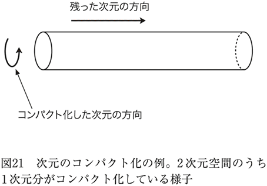
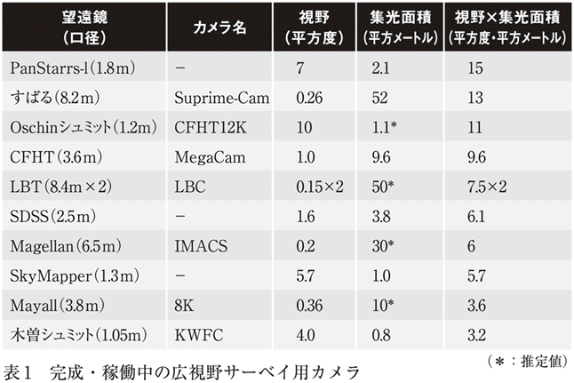

| 宇宙のダークエネルギー～「未知なる力」の謎を解く～ (光文社新書) | |
| 土居 守 | |
| 光文社 (2011) | |
目 次
プロローグ――宇宙の運命はダークエネルギーに握られている
この世の中には不思議なことがたくさんありますが、何が不思議かといって、「宇宙がここに存在している」ということほど不思議なこともないでしょう。この不思議さは、現代の科学をもってしても答えることはできません。
しかし、この宇宙がどのようなものによって構成されているのかがわかれば、その不思議に少しでも迫ることはできます。そして最近では、宇宙に関する研究が飛躍的に進み、これまでとはずいぶん異なる宇宙の姿が暴き出されてきました。
さて、現在の宇宙全体を構成する主要な成分とは何でしょうか。
その答えの一つが「ダークエネルギー」と呼ばれるものです。そして、このダークエネルギーは宇宙の行く末を決定づけるもので、まさに宇宙の運命を左右する〝闇のエネルギー〟なのです。
皆さんの中にはこの説明を耳にして、
「ダークエネルギーが宇宙の運命を左右？ そんな話は初耳だけど」
とか、
「世の中は闇に覆われてしまうの？」
と不安に思う方もいるかもしれません。でも、心配しないでください。この宇宙がすぐ闇に覆われてしまうわけではありませんから。
しかし、ダークエネルギーはこの宇宙の成り立ちを理解する上ではとても重要です。それは宇宙の見方を根本から変えてしまう、科学的な未知のフロンティアを切り開くものだと考えられているのです。
一方、皆さんが抱く宇宙のイメージとは、どのようなものでしょうか。
「広大な空間の中に、星や星雲などの天体が点々と浮かんでいるのが宇宙だ」というのが一般的なものかもしれません。もちろん、このイメージは間違いではありません。ただ、このイメージは宇宙全体のごく一面しか捉えていません。
そのことを理解するために、ここで宇宙に存在する「物質」について考えてみましょう。
夜空を眺めて見える星々は光っているからこそ見えますが、その星々の間には何が広がっているでしょうか。そう、何も見えない闇です。では、その闇の空間には、本当にまったく何もないのでしょうか。そもそも、「何もない」というのはどのような状態を指すのでしょうか。真空でしょうか。
夜空に見える星々の間には、実は、何もないわけではありません。何も見えない空間には、私たちの身のまわりにあるのと同じような原子や電子が希薄なガス状になって存在しており、その他にも、「ダークマター」という正体不明の物質がもっと多く広がっています。
このダークマターは、ダークエネルギーと似た名前ですが、別物です。星や惑星が重力によって引き合っているように、ダークマターにも同じように重力が働きます。しかし、ダークマターが星などとは違うのは、それがまったく光を発したり吸収したりしないことです。
では、なぜ、ダークマターが存在しているのがわかるのでしょうか。
それは、ダークマターがあると、その重力によってまわりの天体の運動や光の進む進路に影響を及ぼし、宇宙のどこに存在しているのかがわかるためです。しかも、星などに比べてはるかに大量に存在していることがわかっています。
つまり、夜空に見えている星々の間には、何もない真空が広がっているわけではなく、そこには目に見えないダークマターが大量に存在しているのです。
このことは天文学の世界では何十年も前からわかっていました。しかし、ダークマターがいったい何物なのかという〝ダークマターの正体〟については、長年の研究にもかかわらず、いまだによくわかっていないのが実状です。
それは、原子などと同じように粒子でできているのかもしれません。あるいは、粒子や物質のような実体ではなく、私たちの知らない未知の物理法則によって生み出された現象であるのかもしれません（多くの研究者は、宇宙に何か私たちの知らない未知の粒子があり、それがダークマターになっているのだろうと考えています）。
しかし、宇宙の未知の闇はそれだけではありません。星や銀河などの目に見える天体と、目に見えないダークマターを合わせても、宇宙全体を構成する成分としてはまだかなり足りないことが明らかになってきたのです。それを埋め合わせるものが、ダークエネルギーです。
繰り返しますが、ダークエネルギーとダークマターはまったくの別物です。光を出したり吸収したりせず、望遠鏡などを使っても私たちには見ることができないのはダークマターと同じですが、ダークエネルギーがダークマターと決定的に違う点があります。それは、ダークエネルギーはある場所に局在することがなく、宇宙全体にほぼ一様に存在しているという点です。
また、ダークマターは通常の物質と同じように重力によって集合する性質を持っていますが、ダークエネルギーは重力の働き方が反対になっていて、宇宙全体に広がってしまうという性質を持っています。つまり、一種の反重力を持っていて、私たちの知っている通常の物質とはまったく異なる類のものなのです。このため、ひとつの場所に局在できるダークマターよりも、ダークエネルギーの測定のほうがはるかに難しく、その存在が最近まで明らかにされませんでした。
現在では宇宙の詳しい観測により、宇宙に存在するエネルギーの成分が、図１のように明らかにされています。ちなみに、図中にある「バリオン」とは、私たちの身のまわりにある物質を形作っているもののことで、あらゆる原子はこのバリオンでできています。質量がエネルギーと等価であることを示したアインシュタインの有名な関係式、E=mを用いれば、バリオンの物質量はエネルギーと見なすことができます。
この図からわかるように、ダークマターの量はバリオンの６倍近くあります。そして、ダークエネルギーの量はダークマターのさらに３倍以上もあります。宇宙の運命は、宇宙の中にあるエネルギーによって決まりますが、そのエネルギーのほとんどはダークエネルギーとして存在していることになります。
さて、ダークエネルギーの存在が明らかになったのは、「宇宙論・天文学の黄金時代」と呼べる現代という時代を抜きに語ることはできません。
近年、大型望遠鏡の建設や観測衛星の打ち上げにより、宇宙に向けた目が大きく広がり、宇宙を非常に遠くまで見通すことができるようになりました。遠くの宇宙が見えると、過去の宇宙が見えます。光は秒速30万キロメートルという有限の速さを持っているため、遠くからやってきた光はそれだけ昔に出発したものだと考えられます。こうして私たちは、１００億年以上も昔の宇宙を見ることができるようになったのです。そして時間的にも空間的にも広い宇宙の情報を使って、宇宙全体の進化がわかるようになってきたのです。
このような時代を迎え、ようやく、宇宙全体の進化を実際の観測データに基づいて詳しく調べることが可能になってきました。
これまでは限られた部分的なデータに基づいて、あとは理論的な推論によって宇宙像を構築していました。このような理論的推論の方法だけでは、現実の宇宙がどのような姿をしているのか、最終的な決着をつけられません。もちろん、理論的推論なしに宇宙像を構築することはできませんが、最終的には詳しい観測データと比較して初めて理論が実証され、確立されるのです。
宇宙全体の進化を調べられるようになったといっても、ダークエネルギーの正体がわかったわけではありません。ダークエネルギーと呼ばれるものが何かを一言で言えば、「宇宙を加速膨張させる原因となるもの」ということになります。
宇宙が膨張していることは80年以上も前から知られていました。しかし、理論的に考えると、その膨張の速さはだんだん遅くなっているはずでした。なぜなら、宇宙のあらゆる物質には万有引力が働いてお互いに引っ張り合うので、「膨張を止めよう、止めよう」とする力が働くからです。したがって、宇宙の膨張は遅くなっていくはずだというのが標準的な考え方でした。
ところが、宇宙を奥深くまで観測できるようになってきた20世紀終わりごろ、宇宙の膨張がだんだん速くなっている、つまり、膨張が加速しているということが観測によって明らかになってきたのです。これは、宇宙の中に、膨張を加速させる「未知の力」が働いていることを意味します。
この未知の力が何なのかまだよくわかっていませんが、とにかくその力をもたらすものとして「ダークエネルギー」という名前が付けられました。シカゴ大学のマイケル・ターナーが命名し、それがキャッチーな名前だったので世界中に広がったのです。
ダークエネルギーを現代の物理学によって理解するには、それはあまりにも奇妙すぎる性質を持っています。例えば、これがもし変わった物質の一種であるとして計算してみると、その圧力がマイナスになってしまうのです。私たちの知っている通常の物質の圧力は必ずゼロかプラスの数であり、通常の物質状態で圧力がマイナスになることはありません（＊１）。
一体、そんな性質を持つ物質があるのでしょうか。ダークエネルギーは、もしかしたら物質の一種として理解できないのかもしれません。
奇妙なことはこれだけではありません。ダークエネルギーは、そのエネルギーの絶対値があまりに小さすぎるのです。このため、私たちが地球上や、そのまわりで行っている実験によっては、ダークエネルギーを検出することがまったくできないのです。どうしてそんな不自然に小さなエネルギーが宇宙に広がっているのか、まったく理解されていません。
このように、現在、ダークエネルギーは私たちの自然の理解に挑戦状を叩きつけていると言っても過言ではなく、もはや既存の物理学で理解できる範囲を逸脱している存在です。このため、ダークエネルギーの問題は理論物理学の研究全般に大きな衝撃をもたらしています。この問題が解決するときというのは、私たちの宇宙観が根本から覆る日ということを意味するのかもしれません。
現在のところ、ダークエネルギーの問題がどのように解決されるのかは予断を許さない状況で、世界中でその研究が活発に繰り広げられています。さらに特筆すべきは、理論と観測の両面から研究されていることです。これは自然を理解する上でとても大事なことです。
自然の理解は理論のみ、あるいは実験のみでは立ち行きません。現在確立している物理学の理論はすべて、実験・観測の結果を説明するために理論が作られ、その理論を確かめるための実験・観測がなされ、というようにして出来上がってきました。
最近は、特に基礎理論の分野で実験装置が大がかりになりすぎ、実験が理論に追いつかないという傾向が見られてきました。しかし、ダークエネルギーを明らかにするための宇宙観測は今後大きく進展します。そして、その結果を説明する理論もさらに進展するでしょう。
＊ ＊ ＊
本書では、この「理論と観測」の両面からダークエネルギーについて考えるために、２部構成の形をとっています。第１部では主に、ダークエネルギーについて理解するための予備知識と、理論的側面について述べています。第２部では主に、宇宙の観測によりダークエネルギーを測定する方法について述べています。
では、これから皆さんと一緒に宇宙のダークエネルギーの問題について、一緒に考えていきます。そのためにはひとまず準備が必要です。次の第１部第１章では、現代の科学がどこまでこの宇宙について明らかにしているのか、まずは一通り見ていくことにしましょう。
＊１ 大気圧より低い圧力のことを「負圧力」と呼ぶ場合もありますが、それは大気圧に対する相対圧力であり、ここで問題にしている「絶対圧力」ではありません。また、極限的な特殊状況では、例外的に絶対圧力がマイナスになる物質もありますが、それはダークエネルギーにはなりません。
第１部 ダークエネルギーの謎と物理学
第１部では、宇宙論の基礎的な予備知識と、ダークエネルギーの問題に関する理論的な側面を主に説明していきます。ダークエネルギーは、この10年あまりの宇宙論の目覚ましい進展に伴ってあぶり出されてきた新しい問題です。その研究の背景、そして解決へ向けてどのような可能性が考えられているのかを、この前半部で見ていきます。
第１章では、現代宇宙論の基礎である膨張宇宙がいかに発見され、どのようなことがわかってきたのかを見ます。そして、ダークエネルギーとは何なのかについて述べます。第２章では、後の説明で必要になる宇宙の歴史について、時間の流れに沿って駆け足で見ていきます。第３章では、ダークエネルギーと真空エネルギーとの関係について述べ、ダークエネルギーがいかに不自然なものなのかを説明します。第４章では、ダークエネルギーを説明する理論的な可能性として、代表的なものを列挙していきます。
第１章 膨張する宇宙
ダークエネルギーは宇宙の膨張をつかさどっています。この章ではまず、宇宙の膨張がいかにして発見されてきたのかを詳しく述べていきます。そして、なぜダークエネルギーというものを考えなければならないのかを見ていきます。
１－１ ニュートンの法則と宇宙
ガリレオとニュートン
宇宙を科学的に調べられるのは、なんといっても物理学の発展があってのことですが、近代物理学の誕生そのものに、実は宇宙が大きく関係しています。
近代物理学は、ガリレオ・ガリレイ（図２）やアイザック・ニュートン（図３）などの人たちによって16～17世紀ごろに作り上げられました。ガリレオは近代物理学の誕生になくてはならない「落体の法則」を発見した人として有名です。そう、みなさんよくご存知の「重い物と軽い物を同時に落とすと、落ちるスピードは同じになる」という、あの法則です。
彼は当時発明されたばかりの天体望遠鏡を自分自身の手で製作し、さまざまな天体観測を行っています。この天体観測によって、それまで肉眼でしか見られなかった天体の世界が、さらに詳しく観察できるようになったのです。
ガリレオの時代まで、地上の運動の法則と天体の運動とは関係ないものと考えられていました。ガリレオは天体運動を地上の運動と同じ原理で説明しようと試みましたが、あまりうまくいきませんでした。しかし、それらは実際に関係しているどころか、どちらも完全に同じ法則に従っていることを明らかにした人物がいます。それがニュートンです。
ニュートンはガリレオの亡くなった年に生まれました。ニュートンはガリレオが見出していた運動法則を体系化し、さらにそれを天体運動にも当てはめてみたのです。すなわち、地上の物理学の法則によって宇宙を調べはじめたのです。
その結果、あらゆる物体はお互いに引っ張り合っている、という有名な「万有引力の法則」を発見します。それは、地上で物が落ちるという現象と、月が地球のまわりを回ることや地球が太陽のまわりを回る現象は、同じ一つの法則から導かれることを意味しました。この瞬間、地上と天上の世界は同一のものという、統一的世界観が確立します。
ハッブルの画期的発見
ニュートンの法則を使うと、太陽のまわりを地球などの惑星が回り続けるという太陽系のメカニズムは説明できるのですが、この法則を宇宙全体に当てはめてみると、非常に不自然なことがありました。それは、天体が宇宙空間に一様に広がったままの状態で存在し続けることができない、というものです。
もし、万有引力の法則が宇宙空間にも当てはまり、かつ天体が空間に静止した状態にあったとしましょう。すると、時間が経つにつれて宇宙にある天体はお互いに引っ張り合い、最終的にはどこか一ヶ所に集まってしまうはずです。しかし、実際の宇宙では無数の天体は広がったままの状態で存在しています。もし万有引力によって天体が一ヶ所に集まってしまわないのであれば、それらはある共通の重心のまわりで回転するか、もしくは重心のまわりを複雑に動き回るようになります。ちなみに、私たちのまわりにある無数の星はそのような状態で存在しています。これが、銀河系と呼ばれるものです。私たちの太陽は銀河系の中心のまわりを回転していて、他にも数千億個もの星が同様に回転しています。
このような銀河系は宇宙の中に無数にあります。これらの銀河系が宇宙空間に静止し続けることはできません。ニュートンの法則に従えば、最初は静止していたとしても時間が経てばお互いに近づき合い、やがては合体することになります。しかし、実際にはそのようなことは起こりません。
この問題の背景には、「宇宙は永遠不変のものである」――すなわち、宇宙は無限の過去から無限の未来まで同じように存在し続けるものだという、それまでの長い間の「常識」が人々の間に横たわっていた点を見過ごすわけにはいきません。しかし、これは無理もない話です。宇宙を詳しく観察できるはずもない時代に、「宇宙が変化している」ということは想像もできないはずですから。
さて、時代が下って20世紀に入ると、このニュートンの矛盾を解決するどころか、それまでの人々の常識を覆す画期的な「事件」が起こりました。それは、アメリカの天文学者、エドウィン・ハッブル（図４）による「銀河系同士はお互いに遠ざかっている」という発見です。彼は銀河系を多数観測し、ほとんどの銀河系は、だんだんと我々から遠ざかっていることを突き止めます。ここに至るまでの長い間、宇宙は過去から未来までずっと同じように存在し、銀河同士の距離は平均的に変化しないと思われていたため、これは衝撃的な発見でした。
１－２ 一般相対性理論の登場
天才アインシュタインの「革命」
ハッブルの画期的な発見に10年以上先立って、宇宙を記述する理論にも大きな進展がありました。その進展の立役者が、アインシュタイン（図５）です。
アインシュタインは、ニュートン以来用いられてきた時間や空間の見方に革命的な変更が必要であることを示しました。時間や空間というものは、物理現象の背後に静かに横たわっているもので、「誰にとっても同じもの」というのがそれまでの常識でした。
しかし当時、奇妙なことが知られていました。それは、光の真空中での速さが誰にとっても一定で、秒速約30万キロメートルであるという点です。これがなぜ奇妙かというと、光を発する物体に対して運動しても、やはり速さが変わらないからです。
わかりやすい例を挙げましょう。ある車が時速30キロメートルで走っているとき、同じ方向へ時速10キロメートルで追いかけて走ってみると、その車は自分に対して時速20キロメートルで進んでいるように見えます。しかし、光についてはそうならないのです。秒速30万キロメートルで進む光に対して、同じ方向へ秒速10万キロメートルで追いかけて走ってみても、光は秒速20万キロメートルには見えません。やはり、秒速30万キロメートルで遠ざかっていってしまうのです。
この矛盾に対して、アインシュタインは革命的な説を唱えました。それは、観測者が運動すると、静止している場合に比べて時間や空間が変化してしまう、という説です。
言いかえれば、運動している人と止まっている人とでは、時間や空間が共通のものでなくなる、運動している人の時間や空間は、止まっている人の時間や空間に対して伸びたり縮んだりしてしまうというのです。つまり、時間や空間というものは、「誰にとっても同じもの」という絶対的なものではなく、むしろ観測者の運動に応じて変化する、相対的なものであることが示されたのです。
この時間や空間の相対性の考えを元にしてアインシュタインが作り上げた理論が「特殊相対性理論」です。この理論は、それまで知られていた理論的な矛盾を自然に解決するものだったため、発表してから数年のうちに受け入れられました。物理の理論は実験によって検証されるまでは正しいとは言えませんが、この特殊相対性理論はその後の精密な実験によってその正しさが証明されています。時間や空間が相対的であることも、現在では実際に実験で確かめられた歴然たる事実となっています。
しかし、時間や空間が人によって異なって見えることを、私たちが日常の生活で意識することはありません。このような時間や空間の相対性は、お互いに光の速さにも匹敵する猛スピードで動いたときにはじめて効果が表れてくるようなものなので、そのようなことのない日常的な場面で感じることはほとんどありません。
この理論によって、時間や空間はニュートンの理論で考えられていたようなものとはまったく違うことが明らかとなりました。そのため、万有引力の法則も、時間と空間の相対性にしたがって書き直されなければなりません。それは、天才であるアインシュタインの頭脳をもってしても容易なことではありませんでした。しかし、10年の歳月をかけて彼自身によって完成させられたのが、「一般相対性理論」です。
一般相対性理論の見方では、時間や空間は、それまで考えられていたようにどこでも同じように一様に存在しているものではなく、それどころか、場所によってぐにゃぐにゃと曲がったり伸び縮みしたりするものだというのです。
初期の特殊相対性理論では、運動することによってまわりの時間空間が一様に伸び縮みすることが示されました。ところが、一般相対性理論では、ものが存在するだけでその付近の時空間が非一様に曲がってしまうというのです。
ものが重ければ重いほどその付近の時空間は大きく曲がります。この時空間の曲がりは、まわりの物体の運動に影響を及ぼします。例えば、二つの物体がやや離れて存在しているとしましょう。すると、お互いの作り出す時空間の曲がりにより、お互いが引き合うように見えます。ニュートンによって示された万有引力の法則では、物体同士に直接力が働くと考えられていました。ところが実際には、時空間の曲がりを通じて間接的に力が働いていることがわかったのです。
時間や空間は、それまで単に物体が運動をする舞台でしかない、と考えられていました。しかし、一般相対性理論の登場で、時空間はそれ自体がダイナミックに変化するものであることが明らかになったのです。
このことは、宇宙の記述にも大きな変革が必要であることを意味します。つまり、宇宙の中での星や銀河の様子を調べるだけが宇宙の姿を知る方法ではないということです。別の表現をするならば、それらが存在している舞台である時空間そのものを調べなければ、宇宙全体を調べたことにはならないということです。そしてその舞台は、宇宙の内部にある物質の状態によってその姿を変化させています。時空間とその中に存在する天体などをすべてひっくるめて考えなければ、宇宙の本当の姿を知ることにはつながりません。
アインシュタインが付け加えた「宇宙項」とは？
アインシュタインは一般相対性理論を発表してまもなく、この理論に基づいて宇宙のモデルを考えてみました。このとき、「宇宙は過去から未来までずっと同じ姿で存在し続ける」と仮定して計算してみました。すると困ったことに、そのような宇宙は存在できない、という結論に達してしまいました。
これに当惑したアインシュタインは、自分の理論には何らかの欠陥があると考えます。そして、宇宙が全体として同じ姿を保ち続けるように、自分で導き出した理論の方程式を修正します。
一般相対性理論の基本になる方程式がアインシュタイン方程式です（図６）。この深遠な方程式を解くと、物体のまわりにある時空間がどのように曲がるのかがわかり、さらには宇宙の進化さえもわかることになります。
図に示したアインシュタイン方程式の意味を完全に理解していただく必要はありません。ここでは左辺が時空の構造を表す量であり、右辺がその時空の中にある物質の状態を表す量であるということだけを気に留めておいてください。
アインシュタイン方程式は、時空間の構造とその中にある物質の状態を等式で結びつけています。これは、時空間と物質が切っても切れない関係にあり、お互いに影響し合う存在である、ということを意味しています。
ここで左辺の最後の項は、アインシュタインがもともと考えた方程式にはなかったものです。アインシュタインは後からこの余分な項を付け加えました。
これが有名な「宇宙項」と呼ばれるものです。宇宙項のない方程式に基づいて宇宙のモデルを作ると、どうしても空間の尺度が時間とともに変化してしまいます。ところが、この宇宙項を付け加えた宇宙では、空間の尺度を一定に保つことができるのです。こうすると宇宙自体は無限の過去から無限の未来までずっと同じ姿を保ち続け、膨張も収縮もしなくなります。この宇宙モデルをアインシュタインの「静止宇宙」といいます。
しかし、この静止宇宙は、かなり微妙なバランスの上に成り立っています。一般相対性理論から導かれる重力の法則は、ニュートンの万有引力を一般化したものです。物体同士がお互いに引き合うという基本的な性質は変わりません。多数の銀河が宇宙全体に静止していれば、銀河同士が引き合ってお互いの距離が短くなっていきます。このとき一般相対性理論では、入れ物である空間自体も銀河の重力に引きずられ、一緒になって縮んでしまいます（図７）。これは宇宙項のないアインシュタインの元の理論では避けようがなく、宇宙を静止させることができない原因になります。
そこで、空間の変化しない静止宇宙を実現するには、この空間の縮みを阻止する力が必要です。この縮みを阻止する力を生み出すものこそ、アインシュタインの付け加えた宇宙項だったのです。
この宇宙項は宇宙空間全体に一様に広がっていて、何もなければ空間をどんどん膨らませようとします。つまり、空間に斥力をもたらします。一方、銀河などの質量は空間を縮ませようとする引力をもたらします。この斥力と引力の二つの効果をうまくバランスさせることで宇宙を静止させることできます（図８）。これがアインシュタインの静止宇宙の原理です。
繰り返しますが、この静止宇宙はとても微妙なバランスの上に成り立っています。
銀河の間に働く引力は、空間が小さいほど強くなります。しかし、宇宙項の方は空間に働くので空間が大きいほど強くなります。ここで、少しでも空間が縮むと銀河の引力が大きくなるのに対して、宇宙項の斥力は小さくなるので、さらに空間は縮むことになります。
すると、引力はさらに大きくなるのに対して斥力は小さくなり、さらに空間が縮むという悪循環が生じ、際限なく宇宙が小さくなってしまうのです。逆に、少しでも空間が膨らむと引力が小さくなり、斥力は大きくなり、今度は際限なく宇宙が大きくなってしまいます。このように、アインシュタインの静止宇宙は、かなり不安定な性質を持っていました。
１－３ 膨張する宇宙の発見
「方程式は、それを作り出した人よりも賢い」
しかし、前述したように、ハッブルが膨張する宇宙を発見します。膨張する宇宙――それは「宇宙は永遠不変のものである」という、それまでの人類の宇宙観をひっくり返すような発見でした。またそれは、宇宙の姿が刻々と変化しているということを示すものでもありました。
ところがこれは、アインシュタインがはじめに導き出した理論から自然に導かれる現象でもありました。物理学の理論研究では「方程式は、それを作り出した人よりも賢い」と言われることがよくあります。
相対性理論と双璧をなす量子力学においても、その基本方程式を導き出したオーストリアの理論物理学者、シュレーディンガーはその解釈を誤っていました。現代では、量子力学が本質的に確率的な本性を持っていることが明らかになっています。しかし、シュレーディンガーはそれを認めませんでした。すなわち、導き出した方程式自体は正しかったのですが、その方程式の生みの親である本人が、式の意味を取り違えていたというわけです。
アインシュタインはいうまでもなく天才ですが、いまから思えばアインシュタイン方程式は、それを生み出したアインシュタイン自身よりもある意味で賢かったと言えます。宇宙項を導入しなければアインシュタインは膨張宇宙の予言者にもなり得たでしょうが、膨張して変化する宇宙というのは彼の信じる宇宙の姿に反していました。
もちろん、宇宙が膨張する証拠もない時代に、永遠不変の宇宙という信念を持つことは自然なことでした。したがって、宇宙が変化するなどという結論が自分の理論から出てくれば、その理論の方を修正しなければならないと思ったのも自然の成り行きでしょう。
実は、膨張宇宙がハッブルによって発見される前、アインシュタイン方程式を使って宇宙のモデルを考えようとする人々はアインシュタイン以外にもいました。
オランダの天文学者、ド・ジッター（図９）は、宇宙にまったく物質が含まれない真空の場合を考えてみて、一般相対性理論により矛盾なく宇宙が存在できるかを調べました（実際の宇宙には物質がありますから、その宇宙モデルは単に数学的なものと考えられます）。また、当時アインシュタインの導入した宇宙項も入れてみました。すると、時空構造の変化しない定常的な真空宇宙を構成できたのです。アインシュタインは当初、宇宙項を使った彼の静止宇宙のみが唯一可能な定常的宇宙ではないかと考えていましたが、そうではなかったのです。
ド・ジッターの発見でさらに面白いのは、宇宙はその中に物質を含んでいなくても存在できるということです。この真空宇宙のことを「ド・ジッター宇宙」といいます。ただし、ド・ジッター宇宙は物質がないために定常に見えているだけです。実はこの宇宙の中に小さな粒子を二つ置いてみると、その二つの粒子の距離は時間とともに大きくなっていきます。つまり、少しでも物質が入っていれば、それは膨張する宇宙になるのです。
一方、ソ連の宇宙物理学者、フリードマン（図10）は、物質を含んだアインシュタイン方程式を解き、膨張する宇宙の解があることを発見して発表しました。しかし、静止宇宙を信じていたアインシュタインはこのフリードマンの研究を認めず、さらには誤った計算に基づいてこれを否定までしています。
このようなこともあって、フリードマンの研究は当時あまり注目されませんでした。後年、このフリードマンの宇宙モデルが現実の宇宙に最も近いものであることがわかりますが、フリードマン自身はこの研究を発表して間もなく、膨張宇宙が発見される前に30代の若さで亡くなってしまいました。現在では、膨張宇宙論の先駆者として高く評価されています。
「赤方偏移」――光の波長が長く伸びて見えるとは？
さて、当時は天文観測の技術が飛躍的に発展した時代でもありました。アメリカのローウェル天文台にいたスライファーは、我々の銀河系の外にある他の銀河（系外銀河）からの光のスペクトルを調べていました。そして、ほとんどの系外銀河からやってくる光は、波長が長く伸びて見えていることを発見します。光の波長が伸びるということは、色が赤くなることを意味します。そのため、この現象は「赤方偏移」と呼ばれます。光の波長の伸びがどれくらいの割合かを表す量は「赤方偏移の値」、あるいは単にこれも「赤方偏移」といいます。
光が赤方偏移する原因としてまず思いつくのは、波のドップラー効果です。
私たちが日常的によく経験する例に、音のドップラー効果があります。救急車やパトカーのサイレンの音は、近づいてくるときに高くなって聞こえます。逆に遠ざかっていくときには低い音に聞こえます。この現象はどんな音にも当てはまります。
光も音と同じように波が伝わる現象なので、光にも同じドップラー効果が起こります。ただし一般にドップラー効果は、物体の速さに比べて波の伝わる速さが速ければ速いほど効果が薄くなります。音の速さは秒速３４０メートル程度なのに対して、光の速さは秒速30万キロメートルという猛烈なものです。したがって、日常生活で出くわすような速さは光の速さよりもはるかに遅いので、ドップラー効果による色の変化を感じることはありません。原理的には少しだけ色が変化しているのですが、人間には感じられないほどわずかなものです。しかし、宇宙で起きる現象では、光速に匹敵するほどの速さもありふれているので、光のドップラー効果が観測されてもおかしくありません。
このため、系外銀河の赤方偏移の原因はドップラー効果ではないかと考えられました。しかし、ほとんどの系外銀河が赤方偏移しているという事実は、それらが我々から遠ざかっている、つまり後退運動をしているということになります。そこで赤方偏移の値をドップラー効果であると考えて銀河の後退運動の速度を求めてみると、だいたい秒速数千キロメートルという値になりました。
ところが、赤方偏移が銀河の後退速度によって起きるとすると、宇宙が不変であると考えるのが難しくなります。宇宙空間が平均的に変化しないなら、私たちから遠ざかる銀河も近づく銀河もだいたい同じ数だけあるはずです。遠ざかる銀河の方が多ければ、宇宙の密度はどんどん減っていってしまいます。したがって、当時は赤方偏移が後退速度によって起きるのではない、という考え方も多くありました。つまり、なんらかのみかけの効果ではないか、と。また、いくつかの系外銀河が赤方偏移しているという観測だけによって、この宇宙は不変ではないという結論を出すには、当時としては飛躍しすぎだとも考えられていました。
アインシュタインが語った「我が生涯最大の過ち」
話をハッブルに戻します。ハッブルが発見の過程で実際に行ったことは、系外銀河までの距離を丹念に調べたことです。
彼はアメリカのウィルソン山天文台にある望遠鏡を使って系外銀河を多数観測しました。系外銀河の中には明るさが周期的に変わる変光星があります。変光星の変光周期はその星が輝く明るさと関係しているので、変光周期を調べると星の持つ本来の明るさを知ることができます。一方、私たちは離れた場所からその星を観測するので、遠い星ほど暗くなって見えます。こうして、星の本来の明るさを求めてそれをみかけの明るさと比べると、どれくらいの距離にあるのかを見積もることができるのです。
ハッブルはこの方法やその他の方法を使って46個の銀河までの距離を調べ、赤方偏移との関係を調べてみました。すると驚くべきことに、遠くにある銀河ほど赤方偏移が大きい、という結果が得られたのです。そして、銀河までの距離と赤方偏移との関係を図に表してみたところ、ほぼ比例関係があることを見出しました。
この発見は膨張宇宙の直接的な証拠となりました。なぜなら、宇宙が全体として膨張していれば、遠くの銀河ほど速く遠ざかるからです。
このことを、ゴムひもを使って理解してみましょう（図11）。ゴムひもに印を等間隔にいくつかつけておき、それをだんだん伸ばしていくとします。宇宙との対応では印が銀河に対応します。すると、印と印の間の距離もだんだん大きくなっていきます。どの印から見ても、隣にある印は一定の速さで遠ざかっているように見えます。そして二つ隣にある印は、一つ隣にある印よりも２倍の速さで遠ざかっているように見えます。そして三つ隣の印の速さは３倍、というように、遠くにある印ほど距離に比例した速さで遠ざかっていきます。これはどの印を中心に考えても同じです。
このゴムひもの膨張と同じように、一つの場所から見て遠くにある銀河がその距離に比例した速さで遠ざかることは、宇宙全体が一様に膨張していることを示しています。ハッブルは、そのことを初めて見つけたのです。
ちなみに、銀河が赤方偏移をする真の原因も、このゴムひもの膨張を考えるとわかりやすく理解できます。図11には波の形が描いてありますが、ゴムひもを伸ばせばこの波の形も長くなります。これは、宇宙が膨張すると空間を伝わる波の波長が伸びることを意味しています。
遠くの銀河からやってくる光ほど長く伸ばされるので、赤方偏移がより大きくなります。これが膨張する宇宙で赤方偏移が起きる本当の原因でした（比較的近くにある銀河の赤方偏移はドップラー効果と考えても間違いとは言えませんが、それは近似的な見方です）。
ハッブルの見つけた膨張宇宙という発見は、いくら強調しても強調しすぎることがないほどの衝撃的なものでした。実を言うと、ハッブル自身ははじめ、自分の結果が膨張宇宙の証拠だとは主張していませんでした。はじめは、何らかのみかけの効果によって赤方偏移が観測されるという可能性も考えていたようです。彼は著書の中では観測結果の解釈については保留していました。
しかし、理論的にこの結果をみかけの効果で説明することはあまりに不自然でした。ベルギーの宇宙物理学者・天文学者であり、カトリック司祭でもあったルメートル（図12）は１９２７年、フリードマンとは別にアインシュタイン方程式を解き、膨張宇宙モデルを再発見しています。そして系外銀河の赤方偏移の原因が宇宙自体の膨張であることを正しく見抜きました。
すなわち、膨張宇宙は一般相対性理論の自然な帰結でした。そして、アインシュタインの静止宇宙は誤りであったことが明らかになりました。アインシュタインは自分の理論に宇宙項を入れて修正する必要がなかったことに気がつき、宇宙項を取り下げました。
アインシュタインはずっと後になって、宇宙項の導入は「我が生涯最大の過ち」だったと、アメリカの理論物理学者、ジョージ・ガモフに述べたといわれています。しかし、のちに詳しく述べますが、このアインシュタインの捨てた宇宙項はその後復活し、現代の精密な宇宙観測を説明するために用いられています。ただし、今度は宇宙を静止させるためではなく、宇宙の膨張を支配するものとして。そして私たちに新しい謎を投げかけているのです。
１－４ ビッグバン理論
宇宙に「始まり」はあるのか、ないのか
宇宙が膨張しているならば、逆に時間を遡ると宇宙が小さくなっていくことになります。つまり、非常に小さいところにすべての物質が凝縮された状態で宇宙が始まったことになります。
膨張宇宙の提唱者の一人であるルメートルは、すでにそういう宇宙の始まりについて考えていました。そして宇宙の起源を「始原的原子の爆発」という言葉で表現しています。
しかし、宇宙に始まりがあるというのは、私たちにとってやはり気持ちが落ち着かないものです。宇宙の始まりを考えると、では「宇宙が始まる前」は何だったのかという疑問がすぐに浮かんでくるからです。一方、もし永遠に宇宙が続いているのならば、宇宙が始まる前などを心配する必要がなく、多少とも心が安らぐ気がします。
実際、宇宙の膨張という考えは心の平安を破るようなものでした。そこで１９４８年、ボンディ（オーストリアの数学者、宇宙学者）、ゴールド（オーストリアの天文物理学者）、ホイル（イギリスの天文学者）の３人（図13）は、宇宙は膨張しながらも永遠に同じような姿のまま続くのではないかと考えました。この説を「定常宇宙論」といいます。
普通に考えると、宇宙が膨張すれば、膨張するにつれて単位体積あたりの物質量は減っていってしまいます。それでは宇宙が同じ状態を保てないので、それを補うように空間から新しく物質が生まれ続ける、と彼らは考えました。なぜ物質が何もない空間から生まれることができるのかは謎でしたが、そう考えると宇宙の始まりを考えなくともよくなります。そのため、この説を支持する人はとても多くなりました。
一方、この定常宇宙論の提案と同じ頃、ジョージ・ガモフ（図14）は宇宙には始まりがあると考えていました。何の理由もなく空間から物質が生まれるのでなければ、現在の宇宙にある物質は、宇宙の始まりから存在しているはずです。
そして、宇宙に始まりというものがあれば、初期の宇宙は空間が小さく、大量の物質が小さい空間に押し込められた状態であったと考えられます。物質を圧縮すると温度が高くなりますが、それと同じように考えると、宇宙の始まりは非常に熱い宇宙だったと考えられます。
ガモフは、彼の協力者と共に、このような「熱い宇宙」において何が起きたのかを調べていきました。そして、宇宙ははるか昔になんらかの原因で忽然と誕生し、その直後に爆発的に膨張していったのではないかという仮説を立てました。
定常宇宙論の提唱者のホイルは、当時ラジオの番組でガモフたちの理論をからかい、この理論を「ビッグバン理論」と呼びました。この呼び方はそのまま定着して、現在では公式用語として使われています。
劇的に発見された「宇宙マイクロ波背景放射」
定常宇宙論とビッグバン理論のどちらが正しいのかは、観測によって確かめるしかありませんでした。定常宇宙論では平均的な宇宙構造が変化することはありませんが、ビッグバン理論では宇宙は全体として不変ではなく進化することになります。その後、徐々に宇宙は実際に進化しているという観測的兆候が見られるようになってきました。すると、だんだんとビッグバン理論への興味も集まるようになりました。
そして決定的だったのは、ビッグバン理論が予言する「宇宙マイクロ波背景放射」（ＣＭＢ）が検出されたことです。ビッグバン理論では、初期の宇宙は高温で、宇宙全体が光に満ちあふれた状態だったと考えます。この間、光は物質に吸収されたり物質から放出されたりして、頻繁に生まれたり消えたりしています。
しかし、宇宙がある程度冷えると、もはや物質と相互作用することがなくなり、そこにあった光はそのまま宇宙に取り残されてしまいます。このような宇宙初期の光は、膨張する宇宙を延々と進み続けます。膨張する空間を光が進むと、その光の波長は長くなり、現在の宇宙では非常に弱い電波になります。この弱い電波はちょうどマイクロ波と呼ばれる波長帯であるため「宇宙マイクロ波背景放射」と呼ばれますが、容易には検出されませんでした。
この光は宇宙初期の化石のようなもので、それが実際に検出されると宇宙にビッグバンがあったという強力な証拠になります。プリンストン大学のディッケを中心とするグループはビッグバン理論を証明しようと、この宇宙マイクロ波背景放射を検出するための実験を行っていましたが、なかなか見つからずに難航していました。
しかし、これが意外なところで発見されることになります。アメリカのベル研究所に、当時衛星通信のために用いられていた高性能の電波アンテナがありました。そのアンテナが当初の役目を果たし終えた後、天文学者のペンジアスとウィルソン（図15）はこれを使って電波天文学を行おうと考えました。彼らはビッグバン理論のことはよく知らずに、もっと実際的な天文学を目的にしていました。
まずはこのアンテナを天体のない空の方向へ向けてみたところ、この高性能の装置にはあるはずのないノイズが検出されたのです。
装置にノイズがあれば、それは望みの天体からの電波をうまく測定できないことになりますから、彼らはあらゆる努力を払ってこのノイズを取り除こうとしました。
あるとき、鳩がアンテナの中に巣を作って糞をたくさん落としているのを発見します。それがノイズ源になっているかもしれないと、わなを仕掛けて捕まえました。そして自動車で何十キロも運んで放しましたが、戻ってきてまた巣を作ってしまいます。さらに遠くまで運んで放しても、やはり戻ってきてしまいます。最後には、どうしようもなくなって射殺しなければならなかったというエピソードが残されています。
ところが、このような努力もむなしく、鳩がいなくなっても、他にどんなことをしても、ノイズを取り除くことはできませんでした。そして残った可能性は、それがノイズではなく実際に空からやってくる電波だというものでした。その後、ペンジアスとウィルソンは、まさにそういう電波がビッグバン理論によって予言されていることを知ります。彼らは早速、プリンストン大学のディッケのところに電話をかけます。その結果、自分達がとてつもない発見をしたことを知ることになります。ディッケは彼らからの電話を切った後「我々は先を越されてしまった」と彼のグループの人たちに告げたそうです。
こうして劇的に宇宙の背景放射が発見されました。定常宇宙論では、このマイクロ波背景放射を自然に説明することができません。この発見の後も定常宇宙論の研究は続けられましたが、支持者は急速に減っていきました。宇宙に始まりがあるというのは精神的には落ち着かない結論でしたが、最終的には観測や実験の結果により何が真実なのか決まります。ビッグバン理論はその後も数多くの観測結果を説明できることが明らかとなっていき、その足がかりは揺るぎないものとなったのです。
そして現在では、ビッグバン理論は最新の観測結果を矛盾なく説明するものとして確立しています。
１－５ 宇宙のダークマター
私たちのまわりにある重元素はどこから来たのか
我々の宇宙にはさまざまな元素があります。元素とは、化学の周期律表にでてくるような物質の種類のことです。水素やヘリウムから始まって、炭素、酸素、鉄など百種類以上の元素があります。これらの元素がいつできたのかという問いにも、ビッグバン理論は答えてくれます。
実はビッグバンによってどのような元素ができるのかという問題は、ガモフたちがビッグバン理論を使って一番初めに調べてみたことでした。ビッグバン理論では、宇宙の最初の頃は、宇宙にある物質が狭いところへ押し込められて高温になっていて、非常にエネルギーの高い状態であると考えます。
このような状態では、物質が元素という形をとることができません。原子の中心にある原子核はその形を保てず、構成要素である陽子と中性子に分解されてしまいます。しかし、宇宙が膨張することによってエネルギーが下がり、その結果、陽子と中性子が結合して元素ができるのです。
このような過程は物理の法則により調べることができます。こうしてガモフたちはビッグバンによって宇宙の最初にどのような元素ができるのかを調べました。その結果、ビッグバンによってできる元素はほとんどが水素とヘリウムであるということを発見します。
一方、それらよりも重い元素を重元素と言います。私たちのまわりにあるものには重元素が多く含まれています。炭素や酸素などは生命に必要不可欠な重元素です。ビッグバンによって作られたばかりの宇宙には、このような重元素がほとんどありませんでした。すると、私たちのまわりにある重元素はいったいどこから来たのかということになります。それは実は、星の中で合成されたものなのです。
十分に大きな星は、その進化の終末期に超新星爆発を起こし、その内部で作られた重元素を宇宙空間にばらまきます。このため、現在の宇宙には多様な重元素が存在しているのです。
我々の体を作っている炭素や酸素などもこうして作られてきたのです。私たちを作っている物質は昔、星の中で作られ、それが宇宙空間を回り回ってここまで来たことになります。考えてみると不思議な感じがしますが、これは、人間が宇宙の進化とともにあることの証左でもあります。
正体不明の物質に満ちあふれる宇宙
このように、ビッグバン理論が宇宙にある元素の起源までも説明することがわかり、宇宙に存在する物質のすべてが理解されるはずでした。ところが、宇宙にある物質がこれら元素だけでできているのならよかったのですが、実はそうではありませんでした。宇宙を詳しく観測していくと、元素以外に正体不明の物質があるという驚くべき兆候が見えてきたのです。
この正体不明の物質は、通常の元素のように光を出したり吸収したりということがまったくないので「暗黒物質」または「ダークマター」と呼ばれています。ダークマターを光や電波などの観測によって直接見ることはできません。しかし重力の働きにより、ダークマターはまわりにある物質を引き寄せます。すなわち、強い重力源となっているので、その存在が間接的にわかるのです。
ダークマターが存在するという最初の兆候は、アメリカで活躍したスイスの天文学者、ツビッキーによって１９３０年代にはすでに示されていました。宇宙には銀河が集団となって存在する「銀河団」というものがあります。銀河団の中にある銀河の運動は重力に影響されるので、銀河の運動を詳しく調べると銀河団全体がどれくらいの質量を持っているのかがわかります。
ツビッキーは「かみのけ座銀河団」と呼ばれる銀河団を調べ、その総質量を推定してみました。単純に考えると、銀河団の総質量は、そこに含まれる銀河の質量を足し合わせたものになるはずです。しかし実際にはその約四百倍も重かったのです。
その後、銀河の中の星の運動について調べてみても、同じような状況が明らかになりました。天の川銀河を含む渦巻き状の銀河は全体として回転していて、その回転の速さは銀河自体の質量と関係しています。回転の速さを詳しく測ると銀河全体の総質量が推定できます。その結果、銀河に含まれる星やガス状になった元素を足し合わせた質量よりも、銀河全体の総質量の方がずっと多かったのです。
これらのことから、宇宙には正体不明の物質、ダークマターが存在することが明らかになってきたのです。
宇宙にダークマターがあるという証拠は他にもあります。ビッグバン理論を使うと、最初に作られる元素の量が計算されると前述しました。それによると、始原的に作られる元素の比率が、宇宙にある元素全体の総量と関係していることがわかっています。また、星からの重元素が供給されていないと思われる宇宙の場所を調べると、この始原的な元素比率を観測で推定することができます。こうして宇宙全体の元素の総質量を見積もることができるのです。
このように見積もられた元素の量は、宇宙にあるはずの質量の合計値にはるかに及ばない量になります。
つまり、宇宙にある元素だけでは質量が少なすぎるのです。宇宙の膨張率は宇宙全体の物質の重力によって決められますが、物質の量が少なすぎると膨張が速くなりすぎます。したがって実際に観測されている宇宙膨張をうまく説明するには、何か通常の元素以外のものが宇宙に満ちている必要があるのです。そして、膨張が速くなりすぎないように引き止めているはずなのです。
ダークマターは宇宙で一様に広がっているわけではありません。銀河が観測される場所には多く存在し、あまり銀河のない場所にはダークマターも少なくなっています。最近は、光が重力によって曲げられることで生じる「重力レンズ効果」（後述）によってダークマターがどのような形で空間的に広がっているのかもある程度わかるようになっています（図16）。
このように、宇宙には我々の知らない物質、ダークマターが大量に存在しています。ダークマターの正体が何かを明らかにしようと現在でも研究が続けられていますが、いまだに不明です。これは、私たちが宇宙にある物質すべてを理解できているわけではないことを示しています。
１－６ 宇宙のダークエネルギー
宇宙膨張は遅くなるのか速くなるのか？
ダークマターが何かという問題自体もいまだ未解決ですが、最近の宇宙論の進展に伴ってさらに大きな問題があぶり出されてきました。それが本書のテーマでもある「ダークエネルギー」の問題です。この問題はダークマターよりもさらにずっと深刻な問題として我々の前に立ちはだかっています。
宇宙が膨張していることがわかると、宇宙を静止させるためにアインシュタインが導入した宇宙項は必ずしも必要ではないと述べました。しかし、理論的に宇宙項が存在してもよいというのに、それが厳密にゼロであるというのも逆に不自然です。
先に、正の宇宙項は宇宙の斥力となることを説明しました。ちょうど万有引力と釣り合えば宇宙を静止させますが、釣り合わずに宇宙項の方が勝れば、やはり宇宙が膨張できるのです。しかも、万有引力だけの場合は膨張の速さがどんどん遅くなっていきますが、正の宇宙項による場合は膨張がどんどん速くなるのです。
この宇宙は、膨張がどんどん遅くなっている減速宇宙なのか、それともどんどん速くなっている加速宇宙なのか、長らく結論は出ていませんでした。宇宙の膨張の速さですら測定するのは難しく、ましてやその速さの変化まで測定することは、それに輪をかけて難しかったからです。
著者たちが学生のころに宇宙論を学び始めたときは、減速膨張し続けるフリードマン宇宙モデルが標準的な宇宙モデルでした。宇宙項などという余計なものを排除した、簡単なモデルこそ真の宇宙の姿だろうと、さして強い根拠もなく信じられていたのです。
この古いモデルである「減速膨張し続ける宇宙」の運命には二つの可能性があります。一つ目は、膨張の速さが遅くなりながらも、永遠に膨張し続ける宇宙です。二つ目は、ある時点で膨張するのをやめ、その後は収縮に転じて、ちょうどビッグバンで始まった宇宙の時間を逆にたどるようにして小さくなり、つぶれてしまう宇宙です。
どちらの宇宙になっているかは、宇宙の中にどれくらいの物質があるのかで決まります。物質が少ないほど万有引力が弱く、膨張を引き止めることができずに永遠に膨張し続ける宇宙になります。したがって、宇宙の中にある物質の総量を測定することが、宇宙論の大きな課題であり、それこそがこの宇宙の運命を決めるものだと考えられていたのです。
「宇宙項の復活」は何を意味するのか
しかし、現実の宇宙はそれほど単純ではありませんでした。実際には宇宙の膨張は遅くなっておらず、加速していることがわかってしまったのです。これは通常の万有引力とは違う、なにか「得体の知れない力」が宇宙に働いていることを意味します。もちろん、アインシュタインの宇宙項はその一つの可能性です。しかし、その可能性は、なぜこのようにとってつけたような項が必要なのかを説明できないため、難しい問題を含んでいます。
では、もし、宇宙項がゼロでないとすると、それはなぜ、いままで見つからなかったのでしょうか。結論を先に言ってしまえば、それはその値があまりにも小さいため、人間がこれまで行ってきた実験にはまったく影響しなかったからです。
宇宙項というのは、簡単に言うと空間に薄く広がったエネルギーです。物質がまったく存在しない真空中にも、宇宙項のエネルギーは存在します。そして、その体積あたりのエネルギーは一定です。そのエネルギーは宇宙が膨張しても薄まりません。空間が大きくなればそれに比例して全体のエネルギーも大きくなるのです。これは通常の物質とはまったく異なる性質です。
私たちは空間に均等に広がったエネルギーの絶対値を直接測定することはできません。エネルギーというのは通常、その「差」だけが物理的な効果を持つからです。エネルギーをたくさん持つ物体は他の物体に仕事をしてエネルギーを消費します。そのエネルギーは他の物体のエネルギーを増加させます。この過程には、はじめの物体がどれだけエネルギーを持っていたかは関係ありません。このように、通常、エネルギーというのは間にやりとりした量だけが物理的な意味を持っていて、もともと物体が持つエネルギーの総量がいくらであるのかを直接知ることは通常できないのです。
しかし、一般相対性理論を基に考えると、必ずしもそうでないことがわかりました。それは、エネルギーの総量が時間空間に影響を及ぼすためです。これこそが宇宙項によって宇宙に斥力が働く原因です。大きな宇宙項の値は空間を大きくゆがめてしまいます。もし、宇宙が大きくゆがんでいたら、私たちは宇宙を遠くまで見通すことができないはずですが、現実の宇宙はそうはなっていません。これは、宇宙項があったとしても非常に小さい値であることを意味しています。観測と矛盾なく許される宇宙項の値はあまりに小さいので、ゼロでないとすると、なぜそのように小さい値が出てくるのか理解に苦しむことになってしまいます。したがって、宇宙項は厳密にゼロになっているのだろうと信じる人が多かったのです。
ところが、宇宙が加速膨張していることがわかると、その簡単な説明として宇宙項が復活させられました。そして、不自然さに目をつむって小さい値を仮定すれば、観測を説明できることがわかりました。そうなると、「宇宙項とは何なのか」が大きな疑問としてクローズアップされてきます。
宇宙項というのは、その導入の経緯からもわかるように、あとから取ってつけたようなものでした。言ってみればご都合主義的にアインシュタイン方程式に付け加えただけのものです。しかも、その項の値は極度に不自然で小さいものなのです。その存在は、なにか私たちに知られていない宇宙の原理があることを強く示していると考えられます。
そこで、宇宙項のような効果を、もっと基本的な原理から説明できないかと考えられるようになりました。宇宙に薄く広がり、空間が膨張するにつれて同じように増えていくようなエネルギーがあれば、宇宙項と同様の効果があり、宇宙の加速膨張を説明できます。それは、宇宙項と完全に同じではなく、空間体積あたりのエネルギーは一定ではないかもしれません。
それがいったい何なのかは、まったくわかっていません。そのため、シカゴ大学のマイケル・ターナーは、その何ものかわからないエネルギーのことを「ダークエネルギー」と名づけたのです。
ダークエネルギーはこの宇宙の運命を左右している重要な要素であるにもかかわらず、その正体を明らかにしようとすると、私たちの知っている物理学はまったく無力です。物理学一般を見渡してみても、これほど深い問題はないと言われています。
〈コラム〉 天文学は基礎科学の代表選手
天文学は人類の太古からの素朴な疑問「我々の住む宇宙はいったいどのような世界なのか」を追求する学問です。私たちの世界の成り立ちを学ぶという意味で、天文学を学校で教えない国は世界中どこにもないでしょう。
著者らが知っている天文学者はＧ20の国はもちろん、ネパール、マレーシア、インドネシア、タイ、フィリピン、ベトナム、エジプト、さらには北朝鮮、グルジア、アゼルバイジャン、ウズベキスタン、イランと世界中に広がっています。国の体制はまったく異なっていても、宇宙について詳しく知りたい、学問を進めたい、という気持ちは皆一緒です。
また、天文学はいわゆる基礎科学の代表選手です。宇宙の彼方のことや、宇宙の始まりのころのことが詳しくわかったとしても、あなたの明日の生活にはほとんど影響はないかもしれません。
しかし、例えばティコ・ブラーエの詳細な惑星運動の観測はやがてケプラーの法則、さらにはニュートンの運動の法則へと発展し、近代科学の基礎の一つとなりました。アインシュタインの相対性理論の完成の際にも、天体観測は重要な実験事実となりました。
このように、天文学は物理学の基礎を支え、物理学を通して世紀を越えて人類に貢献していく、ある意味では気の長い学問です。今、ダークエネルギーは現代の物理学に大きな謎を投げかけています。謎が解けたとき、また世紀を越えた大きな貢献ができるのでしょうか。
第２章 宇宙のタイムライン
宇宙はどのようにして現在の宇宙になったのでしょうか。ダークエネルギーの問題を理解するためには、まず現在の宇宙がどのような歴史をたどってきたのかを知っておく必要があります。そこで本章では、現在の科学が解き明かした宇宙の歴史を、時間に沿って駆け足で見ていくことにします。
２－１ 宇宙の始まり
カギは量子論と一般相対性理論
皆さんは、「宇宙の始まり」について考えたことがあるでしょうか。宇宙の始まりを考えると、「宇宙の始まりの前は何なのか」という疑問も同時に湧いてきます。
宇宙の始まりの問題は、現代の物理学でも謎に包まれています。しかし、その謎を解くには、後に述べる量子論と、前章で説明したアインシュタインの一般相対性理論が重要な役割を果たすと考えられています。しかし、現在はそう考えられているだけで、それらを統一的に両方使って調べることができない状態にあります。なぜなら、量子論と一般相対性理論は水と油の関係にある理論で、現状ではお互いに矛盾した考え方に基づいているからです。
つまり、一つの理論的枠組みで理解されていないため、残念ながら宇宙の始まりに関する信頼できる理論はいまのところありません。時間も空間もない「無」の状態から、ある種の「可能性のゆらぎ」として宇宙が偶然にでき、それが現実化したのではないか、５次元以上の時空間を持つ世界があり、その中で我々の宇宙のもとが衝突してこの宇宙が始まったのではないか、などといった興味深い説が唱えられていますが、現段階では、どれもそれほど確固とした根拠に基づいたものではありません。
２－２ 宇宙のインフレーション
「ちょうどよい関係」を解く一つの仮説
初期の宇宙は、いまよりもずっと速く膨張していました。初期の宇宙は現在の宇宙よりもずっと小さかったため、速く膨張しないと物質同士のお互いの引力ですぐにつぶれてしまうからです。つまり、引力を振り切って現在のように巨大な宇宙を作り出すためには、初期宇宙の膨張はかなり速くなければなりませんでした。
逆に、あまりに度を越して速い膨張であれば、今度は宇宙の中での物質同士の距離が離れすぎ、星や銀河を生み出すことができません。このように、広大な宇宙に星や銀河ができるためには、初期宇宙の物質の量と膨張の速さの間にちょうどよい関係がなければなりません。
この「ちょうどよい関係」は、偶然に得られるとするにはあまりにできすぎたものです。そこでこれを偶然ではなく、もっと自然に説明する理論があるのではないかと思いたくなるのも無理はありません。そのひとつの仮説が、日本の佐藤勝彦やアメリカのアラン・グースなどによって提案された「宇宙のインフレーション理論」です。
インフレーションというのは、急膨張することです。経済では物価が急激に上昇することをインフレーション、あるいは略してインフレと言います。語源はこれと同じです。
宇宙のインフレーション理論では、初期に宇宙の大きさが急膨張した時期、すなわちインフレーション期があったと仮定します。インフレーション期には、宇宙の膨張がどんどん速くなります。このため、はじめは非常に小さかった空間の範囲も、インフレーション後には広大な宇宙空間になることができます。また、インフレーションの終わった宇宙では膨張の速さが自然に調整され、星や銀河が誕生できるちょうどよい宇宙になることが計算によってわかっています。つまり、インフレーション期を考えることにより、宇宙初期の不自然な偶然と思われることを、自然な必然として説明することができるようになります。
このため、インフレーション理論は膨張する宇宙の謎を解く、有望な仮説として多くの研究者に受け入れられています。
ここで、インフレーション理論での加速膨張と、ダークエネルギーによる加速膨張を混同しないでください。インフレーション理論での加速膨張とは、初期の宇宙で起きたことを述べています。これに対し、ダークエネルギーによる加速膨張は現在の宇宙を前提とした話です。インフレーション理論の加速膨張はいったん終了し、その後しばらくは減速膨張することになります。さらにその後、ダークエネルギーが宇宙を加速膨張させるのです。
インフレーション期が本当にあったのか、あったとしてもその真の原因が何だったのか、実はまだはっきりとした結論は出ていません。その時期を説明するために必要な正しい物理法則が知られていないためです。宇宙でインフレーションが起きたとされる時期では、非常に宇宙が小さかったため、狭いところに大量の物質やエネルギーが閉じ込められていました。このような状態を表すような、はっきりと確かめられた物理法則が知られていないので、憶測に基づいた理論的予測がいくつもあります。そのうち、どれかが正しい予測となっているのかどうか、今後の研究を待たねばなりません。
４次元以上の宇宙
多くの研究者はインフレーションが初期宇宙にあると都合が良いと考えていますが、必ずしもインフレーションが必要ではないかもしれない、と考える研究者もいます。その代表例は、ポール・スタインハートとネイル・テュロックによって唱えられている「エクピロティック宇宙」の理論です。
私たちは３次元空間の中に住んでいますが、この理論では、本当の宇宙の空間は４次元以上であると仮定されます。私たちの住む３次元空間は４次元以上の宇宙に浮かぶ「膜」（ブレーン）だというのです。本来「膜」というのは、３次元空間中の２次元的な物体のことです。ここでいう「膜」は、通常の膜を一般化した抽象的な概念で、４次元以上の空間中に浮かぶ３次元空間のことです。私たちはそのような「膜」の上にしか存在できないというのです。
ビッグバンが始まる前から４次元以上の空間が存在していて、その中に私たちの３次元空間である「膜」が２枚以上あります。その「膜」の２枚が衝突するとき、その内部が非常な高温になって、そのうちの一枚がビッグバン宇宙となる、という仮説です。このような「膜」の衝突は繰り返し起きます。したがって宇宙はその度に何度も生まれ変わることになります。
このように宇宙が何度も生まれたり消えたりを繰り返す宇宙モデルは他にも提案されていて、一般に「サイクリック宇宙論」と呼ばれています。日本でも川合光らが、これとは異なるサイクリック宇宙モデルを提案しています。
これらのサイクリック宇宙論は、宇宙初期にインフレーション期を必要としません。これらの理論が正しければ、宇宙初期にインフレーションは起こらなかったことになります。さて、どちらの理論が正しいのでしょうか。あるいは、これらとは別のことが宇宙初期に起きていた可能性も残されています。本当のところはまだまだ深い謎に包まれています。今はまだ結論を急ぐことなく、今後の研究の進展に期待しましょう。
２－３ 宇宙の「初期ゆらぎ」
量子ゆらぎと宇宙の構造
現在の宇宙には、星や銀河を始め、豊富な構造がありますが、その構造の種は初期の宇宙に仕込まれていたはずです。宇宙の初期に、少しでも物質の集まっている場所がはじめにあると、重力によってまわりの物質がそこに集まってきます。すると、ますます重力が強くなってさらに多くまわりの物質を集めていき、最終的には銀河などの構造を誕生させます。
したがって、現在の構造をつくるためには、宇宙の初期の物質がほんのわずかだけ非一様になっていて、その密度に「空間的なゆらぎ」があればよいと考えられます。これを宇宙の「初期ゆらぎ」と言います。そして、宇宙の質量はほとんどがダークマターによって担われているため、宇宙の初期ゆらぎはダークマターの空間的ゆらぎとなって現れます。
初期ゆらぎがどうしてつくられたのかについて、はっきりとわかっているわけではありませんが、もしインフレーション理論が正しいとすると、それは宇宙初期の「量子ゆらぎ」に起源を持つとされています。
現代物理学の基礎である量子論によると、物理的な量というものは一般に、完全に決まった値をとるということができません。これを「不確定性原理」と呼びます。とはいっても、この不確定性が問題になるのは、私たちの感覚からすると非常にミクロな世界の話です。
私たちの生活の上では、どんな量でもはっきりと決まった値を持っているというのが常識です。例えば、ものの長さを測るとき、その長さは測る前から決まっていると考えている人が多いと思います。しかし、それは私たちが日常的に経験できるのがマクロな（大きい）世界だけだからです。ミクロな世界では、測定する前の物理的な量がはっきりとした値を持っておらず、その値は絶えずゆらいでいるとも言えるのです。これが量子ゆらぎです。
インフレーションによって空間が急激な膨張をすると、ミクロな世界の量子ゆらぎがマクロな世界にまで拡大され、宇宙の初期ゆらぎの元になったと考えられています。
構造の種になるべき初期ゆらぎ自体は、値の定まらない量子ゆらぎなのではなく、値の定まった、量子的でないゆらぎになっています。しかし、量子ゆらぎがどのようにして量子的でないゆらぎになるのかというのは量子論の枠内でも解決されていない問題で、宇宙の初期ゆらぎの生成においてこの機構が実際にうまく働くのかというと、まだはっきりしていないところもあります。ですが、今のところ有望な初期ゆらぎの生成機構であると多くの人が考えています。こうして、小さいながらも重要な宇宙の初期ゆらぎが生成され、それが私たち自身をも含む宇宙のすべての構造の元になっていると考えられています。
ただ、どのようなゆらぎが生成されるのかはインフレーション理論の詳細にも依存します。インフレーション理論自体が確定的でない現状では、さまざまな可能性があります。逆に、現実の宇宙構造につながる初期ゆらぎを予言する理論のみが、正しい理論としての最低限の資格を備えているとも言うことができます。
２－４ クォーク・スープ
原子や分子はいつできるのか
宇宙が大きくなって、物質の密度がある程度小さくなると、私たちが正しいと知っている物理理論で宇宙の振る舞いを記述できるようになります。したがって、ここまでに述べてきた推測を含んだ話と違って、ここから述べる宇宙の歴史は物理学的にほぼ確立しているものと考えてください。
インフレーションがあっても、それが終了すると膨張の速さはだんだん遅くなっていきます。このときの宇宙の膨張は、宇宙項のない場合のアインシュタインの一般相対性理論に従います。初期の宇宙は密度が大きく温度も高く、そのような状況では私たちのよく知っている原子や分子というものは存在することができません。
分子は原子が結合したもので、原子は電子と原子核でできています。電子は最小単位の素粒子の一つと考えられています。一方、原子核は陽子と中性子でできていて、さらにこれらはクォークからできています。クォークも最小単位の素粒子と考えられています。最小単位の素粒子にはこれらの他にも、ニュートリノ、光子、グルーオン、ヒッグス粒子などがあります。
宇宙の初期では、これらの粒子ができたり消えたりしています。なぜなら、高エネルギーの状態で素粒子は簡単に他の素粒子に転換することができるためです。粒子というのはエネルギーの一つの形態であり、その姿を容易に変えることができるものなのです。このような宇宙初期の状態を、「クォーク・スープ」と呼んでいます。
２－５ 原子の誕生と「宇宙の晴れ上がり」
「曇った状態」から「晴れ上がり」へ
さらに宇宙が膨張すると、密度が小さくなって温度も冷えていきます。クォークは、密度の小さい状態では単独で存在できないという性質を持ちます。３つのクォークが集まると陽子や中性子になります。宇宙がある程度膨張して密度と温度が下がると、宇宙にあるクォークが集まって、すべて陽子や中性子という形で存在するようになります。陽子や中性子は私たちのよく知っている原子のもとです。ここでようやく物質の材料ができるのです。
はじめは陽子と中性子がばらばらに動き回っていますが、やがて２つの中性子と２つの陽子が一緒になってヘリウムの原子核をつくるようになります。中性子よりも陽子の数の方が多く、ヘリウムにならなかった陽子はそのまま孤立することになります。孤立した陽子１個というのは、水素の原子核のことです。このとき全体の質量にして約４分の１程度がヘリウム原子核になります。ヘリウムよりも複雑な原子核もわずかにできますが、あまり多くはありません。
この段階では、原子核と電子はまだ離れていて、電子を伴わないイオン状態の原子核と、空間中を自由に動き回る自由電子が宇宙にあふれています。また、光も宇宙に充満しています。光は自由電子に進路を曲げられてしまい、まっすぐ進むことができません。つまり、この段階までは「曇った」状態にあるのです。
さらに宇宙が膨張すると、自由電子は原子核とくっついて一緒になり、中性の水素やヘリウムなどの原子となります。中性の原子はほとんど光の進路を妨げず、光はまっすぐ進めるようになります。これを「宇宙の晴れ上がり」と言います。
２－６ 宇宙マイクロ波背景放射
「温度ゆらぎ」はどう発生するのか
宇宙の晴れ上がりによってまっすぐ進めるようになった光は、現在までまっすぐ進み続け、驚くべきことにそれが実際に検出されています。その光は実に１３７億年もの間、遠く宇宙を旅して私たちのところへ届いているのです。宇宙を旅する間に波長が伸びて、マイクロ波と呼ばれる電波になっています。これを「宇宙マイクロ波背景放射」と呼ぶのは前述した通りです。
この宇宙マイクロ波背景放射は宇宙のあらゆる方向から同じようにやってきます。これが何を意味しているかというと、宇宙の晴れ上がりの時点では宇宙がどこも同じような状態だった、ということです。宇宙にはどこにも特別な場所がなく一様で、どこもかしこもほとんど同じ状態だったのです。
しかし、完全に一様な宇宙では、その後、どのような構造もできようがありません。事実、晴れ上がりの時点でも、わずかながら物質の密度に濃淡がありました。この濃淡の痕跡は、宇宙マイクロ波背景放射の詳しい観測により、１９９２年にはじめて発見されました。観測された放射の濃淡はわずか10万分の１程度しかありませんでしたが、このわずかな濃淡が宇宙初期の密度の濃淡を証明したのです。
宇宙マイクロ波背景放射の濃淡は、波長ごとの相対的な強さが方向によって違うという、非等方性となって現れます。電波は光と同じく電磁波です。電磁波の波長ごとの相対的な強さは温度を表しています。このため、宇宙マイクロ波背景放射の非等方性は、「温度ゆらぎ」とも呼ばれます。図17は最近の観測によって得られた温度ゆらぎの全天図です。
観測される宇宙マイクロ波背景放射の非等方性の原因は、副次的なものも含めていくつかあります。
その中でも顕著なものとして、宇宙の晴れ上がりの時点での宇宙の温度の高低が、そのまま引き継がれるという効果が挙げられます。これは角度にすると約１度角程度よりも小さな角度の温度ゆらぎとなって現れます。もちろん、その他の原因として、背景放射が宇宙を旅してくる途中で非等方性が生まれるという効果もあります。
では、宇宙の晴れ上がりの時点での温度ゆらぎはどうして発生したのでしょうか。
これは、本書の主題でもあるダークエネルギーを測定するための手段としても重要なので、次に少し詳しく説明することにします。
２－７ バリオン音響振動
宇宙を測るための「ものさし」
宇宙にある光などの電磁波は、晴れ上がりまでの間に原子などと強く結合して、一体化しています。これを「バリオン・光子流体」と呼びます。ここでいうバリオンとは、原子などの物質のことです。また、光子とは、光や電波などの電磁波のことです。
現代の物理学では、光や電波などの電磁波は波であると同時に粒子であるという、奇妙な性質を持つことがわかっています。光子とは、この粒子的な性質を表す名前です。流体とは、気体や液体のように形が変化するようなもののことです。
つまり、バリオン・光子流体とは、原子などの物質と光などの電磁波が一体となってひとつの流体として振る舞う状態のことです。宇宙の初期には、このバリオン・光子流体が宇宙全体に広がっています。ただし、ダークマターも宇宙全体に広がっていて、ダークマターの量の方がバリオン・光子流体の量よりも五、六倍多くなっています。
宇宙の初期ゆらぎによって、宇宙の初期にはダークマターのわずかながら多い場所とわずかながら少ない場所があります。ダークマターの多い場所は重力が強くなっているため、バリオン・光子流体もそこに引きつけられます。しかし、バリオン・光子流体はダークマターと違って、圧力を持っています。圧力を持った流体はある程度密度が高くなると、反発し合って跳ね返ります。これは空気と同じです。空気をビニール袋に入れて押さえつけると反発しますが、これは空気が圧力を持っているからです。
さて、空気が音を伝える理由をご存知でしょうか。これは、空気に圧力があるためです。
音とは、空気の密度が濃くなっているところと薄くなっているところが交互に並び、波となって進んでいく現象です。空気の濃くなっているところは反発して薄くなろうとするため、そのまわりの空気を押しやります。すると、そのまわりの空気が今度は濃くなって、もとの場所の空気は薄くなります。濃くなったまわりの空気は、さらにそのまわりに空気を押しやり、空気の濃い場所がさらに広がっていきます。
このようにして、いったん空気の濃いところができると、そのまわりに空気の濃淡が波となって進んでいきます。これが音の正体です。ある場所だけに注目して見てみると、その場所では空気が濃くなったり薄くなったりを繰り返して振動しています。これを「音波振動」と言います。
これと同じように、バリオン・光子流体も重力で押さえつけると反発して元へ戻ろうとします。このため、ダークマターの重力によっていったんある場所に引きつけられたバリオン・光子流体は、その圧力によって反発し、それが波となって空間を伝わっていきます。
これを「バリオン音響振動」と呼びます。実際には、ダークマターは空間のあちらこちらで、でたらめに密度がゆらいでいます。そこで、こうして発生するバリオン・光子流体の音波振動もでたらめなものになります。しかし、この音波はある決まった音速で空間を伝わります。宇宙の初期ゆらぎができた後、そのゆらぎの中に、宇宙年齢の間に音速が進むことのできる距離を特徴とするような、ある種のパターンが刻み込まれます。
光子とバリオンの密度の濃淡を見ると、この特徴的な距離だけ離れた２点間の密度の濃淡が大きくなります。これが宇宙マイクロ波背景放射の温度ゆらぎの大きな原因になります。図17の温度ゆらぎを見てください。ここで横方向の長さはちょうど３６０度角に対応しています。すると、ほぼ１度角程度に対応するスケールで変化するゆらぎが目につきます。これがバリオン音響振動の痕跡なのです。
重要なことは、この特徴的なスケールが、我々の知っている物理学で計算できるということです。このため、バリオン音響振動の現象があることは、宇宙を測るための「ものさし」を私たちが手にしているようなものです。このものさしを使うとダークエネルギーを測ることができるのですが、それは第２部で説明します。
２－８ 暗黒時代と銀河の誕生
宇宙の大規模構造はどのように形成されたのか
宇宙の晴れ上がりの後しばらくは、宇宙に光を出す天体がありません。したがって、光を出す天体ができるまでの時期は「宇宙の暗黒時代」と呼ばれています。宇宙のはじめには構造がほとんどありませんが、ほんのわずかだけ密度の濃淡があったと述べました。
重力の作用により、この濃淡は徐々に増幅していきます。ちょっとでも密度の濃い部分があると、重力によりまわりの物質がそこへ集まってきます。すると、ますます重力が強くなってどんどんまわりの物質を集めていくことになります。こうして宇宙に構造ができていきます。十分な物質が集められたところには、星や銀河が誕生して輝き出します。こうして宇宙の暗黒時代は幕を閉じ、代わりに私たちが通常抱く宇宙のイメージのように、暗い空間に光を出す天体が点在するような宇宙になります。
最初は小さな銀河がつくられますが、徐々にそれらが合体するなどして大きな銀河も形作られていきます。さらに銀河が集まって銀河団が形成され、さらに大きな超銀河団やボイド構造などの宇宙の大規模構造が形成されます。
このように、現在ある宇宙の大規模な構造は、小さい構造から順番に形成され、それらが集合して徐々に大きな構造になってできたものです。また、小さな構造も長い年月の間に進化していきます。銀河は無数にあり、そのひとつひとつに無数の星が含まれています。星のまわりには惑星が形成され、そのひとつの惑星では偶然にも生命の高度な進化が許されました。それが私たちであり、その私たちが私たち自身を作り出したこの宇宙の謎に挑んでいるというわけです。なんだか不思議な感じがしますね。
〈コラム〉 宇宙論の理論的研究とは
この章では、あたかも実際の目で見てきたかのように宇宙の歴史を述べてきましたが、もちろん、宇宙の初期に何があったかを直接見ることはできません。物理学者は、実験・観測結果を用いて理論を構築します。そのとき、はるか過去に何が起きたかなど、原理的に直接見ることのできない宇宙の状態を、あたかも眼前で起きているかのように想像する力が必要となります。
また、理論的研究というと、難しい数式を操っているだけのように思われるかもしれません。確かに、数式なしで物理の理論を構築することはできません。しかし理論研究にとって数式は、頭の中に想像した物理的な描像に矛盾がないかを調べて、またその描像を具体的に表現するために用いる手段でしかありません。数式の変形だけに頼っていては、なにも物理的に意味のある理論を作ることはできません。
著者の体験としても、あまり物理的描像を持たずに技術的な興味で計算を進めていたら、果てしのない計算の後、元にいたところに戻ってしまったということがあります。理論の研究は常に物理的描像を持って想像力を働かせていないと、立ち行かないのです。
物理の理論家にとっての数式は、音楽家や作曲家にとっての楽器です。楽器の演奏法を習得することは音楽家にとって音楽を表現する手段に過ぎません。表現するべき音楽が心の中になければ音楽家は立ち行きません。物理の理論的研究もそれと同じで、表現するべき物理的描像を心の中に抱いて進めるべきものなのです。
第３章 小さすぎる真空のエネルギー
アインシュタインの導入した宇宙項を使えば、一応、加速的に膨張する宇宙を説明することができるようになります。しかし、宇宙項がある理由を考えると、物理的にはとても不自然であることが明らかになります。この章では、どうしてそれが不自然だと考えられているのか、詳しく見ていきます。
３－１ 真空のエネルギー
真空には大量のエネルギーが詰まっている
真空とは何もない空間ということですが、「何もない」とはどういうことでしょうか。物質が何もないのに時間や空間だけが存在する状態とは想像しがたいかもしれません。アインシュタインの一般相対性理論は時間と空間の性質をかなり明らかにしましたが、まだ時空間の本質的なところはよくわかっていないところもあります。
アインシュタインの宇宙項は、アインシュタインによって方程式に付け加えられたものでしたが、後で彼はそれを撤回しました。ここからもわかるように、宇宙項は「どうしても必要」というものではありませんでした。一般相対性理論の枠内で考えている限り、宇宙項はあってもよいし、なくてもよいという程度のものでした。それは単に手で理論に付け加えられたもの、という以上の意味を持ちません。すなわち、一般相対性理論は宇宙項の起源について答えてはくれません。
宇宙項というのは、真空に一様に広がったエネルギーのことです。もしそれがあるのなら、何か真空にもエネルギーを生み出すもとがあるはずです。つまり、真空が何もないように見えるのは見かけ上のことであり、その裏に何かとんでもない潜在的な姿が隠されていることになります。
面白いことに、素粒子論の分野でも昔から真空のエネルギーが問題になってきました。
素粒子論とは物質を構成する基本的な粒子の性質を調べる分野で、宇宙の全体構造を調べようとする宇宙論とは対極とも言えるものです。しかし、素粒子論の発展によってわかってきたのは、真空とは単に何もない空間ではなく、素粒子が生まれたり消えたりする土壌ともいうべきものであるということでした。この見方に基づくと、真空には大量のエネルギーが詰まっていると言えるのです。
３－２ 量子論
机の上にあるスプーンは本当にそこにあるのか？
現代の物理学では、「量子論」が相対性理論と並んで大きな柱となっています。現代の素粒子論はこの量子論に基づいた「場の量子論」によって記述されています。
量子論は、相対性理論の発見と同じころに発展した現代物理の革命的な理論です。相対性理論はアインシュタインがほとんど独力で作り上げたものでしたが、量子論の建設にはさまざまな人が貢献しています。これは量子論が、相対性理論以上にそれまでの常識を大きく離れた新しい思考を必要としたためでもあります。
量子論によって明らかになったのは、「存在」というものに対する見方をそれまでのものから大きく変えなければならないということでした。量子論以前の物理学では、「この世界にあるものは、我々が見ていようがいまいが存在している」というのが常識でした。
しかし、量子論の世界ではそうではありません。私たちの身のまわりにあるものは原子などで成り立っていますが、原子のような小さい世界では、ものの振る舞いがまったく違うことがわかっています。これは私たちの常識になじまない話ですが、ここでは、量子論は非常に小さな世界でだけ顕著になるということを覚えておいていただければ結構です。
例えば、いまテーブルの上にスプーンが置いてあるとしましょう。このスプーンは、私たちが見ていようがいまいが、変わりなくそこにあるというのが常識です。
ところが、量子論の世界ではそのようなことがありません。ここでさらに、一つの電子を考えてみましょう。電子とは原子を構成する素粒子の一つですが、とにかく非常に小さな粒子であれば何でもかまいません。さて、ある時点でどこかに電子があることを確認したとします。では、この電子はその後も変わりなくそこにあるかというと、そうはならないのです。つまり、その電子はそこに静止しているとは限らないのです。
ここが、量子論の本質的なところです。電子は、ある決まった場所に速さをゼロにして止めておくことが原理的にできないという性質を持っています。もし強引に電子を止めておこうとすれば、電子の場所がどこにあるのかわからなくなります。逆に、電子をある場所へ置こうとすると、電子の動く速さがわからなくなります。つまり、電子などの素粒子は、場所と速さを同時に決めることが原理的にできないのです。
これは、本来電子は決まった場所と速さを持っているのに、それを人間が知ることができないだけということではありません。量子論の原理として、粒子は場所と速さを同時に決まった値として持つことができないのです。このため、ある瞬間にある場所に置いておいた電子が、次の瞬間にどこにあるのかを確実に予測することはできません。したがって、どこに観測するかは偶然に支配され、確率的なものになります。量子論は観測したときに得られる結果について、その確率を計算する方法を与えてくれますが、具体的な値がどうなるかについては、確実な予測が原理的にできません。
このように、量子論の世界は確率に支配されていて、確実に定まった状態というものはないということになります。しかし、我々の日常生活では、ものの運動についてそうした確率的な性格はあまり顔を出しません。これはひとえに、我々の身のまわりのものが非常に多数の粒子でできた巨大なものだからです。
３－３ 量子論と真空エネルギー
角砂糖１個分に莫大なエネルギーが存在する
このような量子論の考え方に基づくと、何もない空間という単純な真空は考えられなくなります。量子論では場所と速さを同時に決めることはできないと述べましたが、同じように、ある瞬間のエネルギーの値を決めることもまたできません。この性質により、エネルギーが完全にゼロになるような状態としての真空を保つことができないのです。つまり、真空は自然にエネルギーを持ってしまうのです。
この性質は、次のように考えることもできます。量子論ではものの存在自体がはっきりしなくなっているので、何もない空間というものはなく、空間には目に見えない粒子が生まれたり消えたりしていると考えられます。
何もないはずの空間に粒子が生まれたり消えたりするということも、私たちの常識から完全に外れていますが、このような粒子を観測することはできないため、私たちに目に見える何らかの効果を及ぼすことはほとんどありません。
しかし、このような空間の性質が真空にエネルギーを持たせることになるのです。しかもそのエネルギーの量を素朴に見積もってみると、一立方センチメートルあたり５０００００００００００００００００００００００００００００００００００００００００００００００００００００００００００００００００００００００００００００００００００００００００００００００００００００００００００（ゼロの数が１０７個）ジュール（仕事やエネルギーの単位）という、想像もつかない莫大なものになってしまいます。ちなみに、世界中の発電所が１年間に発電するエネルギー量は約１００００００００００００００００００００（ゼロの数が20個）ジュールです。
その５０００００００００００００００００００００００００００００００００００００００００００００００００００００００００００００００００００００００００００００００００００００００（ゼロの数が87個）倍もの莫大なエネルギーが角砂糖１個分ほどの大きさの空間中に詰まっているということになります。こんなふうに表しても、あまりに大きすぎてまったく想像がつきません。これほど大きな真空エネルギーが本当に存在するなら、それは異常に大きな宇宙項と同じ働きをするため、この宇宙の存在を説明できなくなってしまいます。これほど大きな真空エネルギーがあってはならないのです。このような量子論における真空のエネルギーの問題は、スイスの物理学者であるパウリ（図18）によって指摘されました。
観測できないものを考えても意味がないと思う方もいるかもしれません。実際、このような真空のエネルギーの値がいくらであっても、これまでに行われてきた素粒子の反応実験にはまったく影響がありません。このため、理論的にはともかく、実際上はこれまであまり問題視されてきませんでした。
「カシミール効果」とは
一方、量子論的な真空エネルギーの値は正確にはわかっていませんが、その存在を示す実験的証拠は見つかっています。それは、「カシミール効果」と呼ばれている現象です。２枚の金属板を平行に配置すると、その間の量子論的な空間の状態が変化して、単位体積あたりの真空エネルギーの値が変化してしまうことが示されています（図19）。この金属板の間の距離が小さければ小さいほど、間にはさまれた空間では単位体積あたりの真空エネルギーが小さくなります。
したがって、金属板同士を引き離そうとすると、体積あたりの真空エネルギーに余分にエネルギーを注入する必要があります。このことはつまり、金属板同士を引き離すときに力を入れる必要があるということです。逆に金属板同士を近づけていくと、体積あたりの真空エネルギーが減り、その分のエネルギーが外へ出てきます。これは、力を入れなくても自然と板同士が引っ張り合って、外へ仕事をしてくれることを意味します。つまり、２枚の金属板の間に引力が働いているのです。カシミール効果とは、このような引力のことです。
カシミール効果は非常に弱い効果なので、実際には金属板の間の距離を極度に小さくしてやらないとほとんどこの引力は働きません。そのため実験で検証することは簡単ではありませんでした。カシミール効果が最初に予想されたのは１９４８年でしたが、実験で実際に確かめられたのは１９９７年のことです。
ところが、カシミール効果の実験でわかるのは、金属板の間の距離を変化させたときに電磁的な真空のエネルギーがどれだけ変化するかという「差」でしかなく、真空のエネルギーの値そのものは計測できません。このため、量子論的な真空のエネルギーがあることは間違いないはずなのですが、その絶対的な量がどれくらいかは依然として謎のままです。
では、もし宇宙項が量子論から素朴に期待されるように、実際の観測を説明するよりもずっと大きな値だったとしたらどうでしょうか。
一般相対性理論によると、真空エネルギーは空間をゆがめて曲げてしまいます。大きな値の宇宙項があると、理論的に計算される空間のゆがみは想像を絶するものとなります。そのようなゆがみがあれば、私たちは空間を自由に行ったり来たりできません。つまり、そのような大きな宇宙項の存在はただちに否定されます。実際の宇宙に観測されているダークエネルギーの量は、そのような素朴な量子論的真空エネルギーよりも１２０桁以上も小さいという、想像を絶する小ささです。
しかし、量子論的な真空エネルギーは一種類ではありません。この世界にある力や粒子の種類に応じて異なる種類の真空エネルギーがあります。真空エネルギーの値にはプラスになる種類のものとマイナスになる種類のものがあるかもしれないとも考えられます。
もし異なる種類の真空エネルギーがプラスとマイナスでうまく打ち消し合うと、素朴に計算して得られる異常に大きな値にはならない可能性があります。しかし、非常に大きな値をプラスとマイナスで打ち消し合って非常に小さい有限の値を残すことは、不自然な微調整を必要とします。物理的な値がこのように微調整されなければ説明できないのは、なにか私たちが本質的なメカニズムを見落としているからだろうと考えられています。
３－４ 人間原理
人間が生まれる奇跡的な確率
宇宙項がなんらかの真空エネルギーだとすると、なぜその値が想像を絶するような小さなものになるのかはまったく説明できませんでした。このように不自然な微調整をしなければ説明できない現象があれば、その微調整を説明する原理が背後にあるはずです。
たとえば、海岸にある砂粒の数の合計が、どこか他の海岸にある砂粒の数の合計よりわずか２粒だけ多かったとしたらどうでしょうか。これは単なる偶然ではなく、ほとんど同じ数に微調整するメカニズムが背後にあるはずと考えるでしょう。宇宙項の微調整の問題もこれに似ています。しかも、砂粒の例とは比較にならないほどはるかに深刻な微調整が必要になっています。
実は物理学には他にも似たような微調整問題があることが知られています。物理の法則には理論的に予言のできない物理定数がいくつもあります。それらには素粒子の質量や、その間に働く力の大きさなどが含まれます。これらの値が、なぜそのような値であるのかを理論的に導くことはできず、実験で測定することによってのみ知ることができます。
ここで、もしこれらの値が現実の値からずれていたらどうでしょうか。不思議なことに、これらの物理定数を少しでも変化させると、人間などの生命が存在できないことがわかっています。つまり、この宇宙の法則とそこに含まれる物理定数は、なぜか人間が生まれる宇宙を作り出すようにできています。
この理由がなぜなのかについて、物理の法則を使って答えることはできません。物理法則はさまざまな物理現象を説明しますが、法則自身がなぜ成り立っているのかを説明することはできないからです。人も自分のことは自分ではなかなかわからないものですが、法則も法則自身のことを説明することはできません。物理定数の値がまったくの偶然で選ばれているのだとすると、この宇宙に人間が生まれる確率はほとんどゼロと見なされるほど小さくなります。この宇宙はそのわずかな確率を奇跡的に選んでいることになります。
そもそも生命とは何かというのは深遠な問題ですが、物理的には原子と分子でできた非常に巧妙な機械と見なすことができます。実際、人間を含む生命体は原子や分子がつながり合って、それらが巧妙に働き合って動いています。そのように単純に考えると、生命の動き方は説明できますが、その根本の物理法則自体がなぜか生命を生むようにできているというのは、ほとんど奇跡的だと言わざるをえません。
「この宇宙は人間を作り出すようなものでなければならない」
この奇跡を、単に奇跡といって片付けるのでなく、もっと合理的に説明できないかと考えたくなるのも自然な成り行きです。現在のところ、万人が納得するような説明は得られていませんが、よく話題になるのが「人間原理」という考え方です。人間原理とは、「この宇宙は人間を作り出すようなものでなければならない」という考え方です。人間を作り出さないような宇宙には、物理法則についてその理由を考える人がいません。物理法則を考えるのは人間です。だから、物理法則を考えている時点で人間を生むようにできているのはあたりまえである、という考え方です。
もし、宇宙がひとつしかないのであれば、この人間原理の考え方は後付けの詭弁であるという印象がつきまといます。なぜなら、「この唯一の宇宙には人間がいるから人間がいる」というような論理になり、結果が理由にすり替えられてしまうからです。あるいは、観測される宇宙のみが存在できる、という深い哲学的な意味付けをする人もいますが、そこまでいくと、もはや科学的な研究のできない領域に踏み込んでしまいます。
ですが、もし、宇宙が無数にあるとするとどうでしょうか。これら無数の宇宙はそれぞれに違った物理法則や物理定数を持ち、含まれる素粒子も異なれば、時空間の次元も異なっているかもしれません。この場合には、人間原理にも具体的な意味を持たせることができます。無数に存在する宇宙のほとんどは、人間はおろかどのような生命体もいないつまらない宇宙になっているでしょう。しかし、きわめて小さな確率をくぐり抜けて人間が生まれる条件を満たした宇宙が一つでもあれば、その宇宙では人間が生まれて物理法則を見出すことになります。その人間がその宇宙の特殊な物理法則や物理定数を不思議がる、ということになります。
このように極端な多宇宙を認めれば、人間原理もそれなりに自然な考え方になります。
この世のすべての法則を唯一の方法で導ける理論？
ここで、人間原理が論点となっている別の例をあげましょう。素粒子論の仮説理論のひとつに、「ストリング理論」（世の中のすべての素粒子などは『ひも』のようなもので構成されていると考える理論）というものがあります。いまのところ、重力は量子論との相性が非常に悪く、重力に対して量子論の原理を当てはめると矛盾した結果が得られてしまいます。一方、重力以外の力にはすべて量子論の原理が当てはまることが証明されています。このため、現在の標準的な理論では、重力とそれ以外の力を統一的な枠組みで理解することができないのです。
ストリング理論は、重力を量子論の枠組みで理解できる理論の候補として期待されています。さらに、この理論によりこの世の中のすべての法則を唯一の方法で導くことができるかもしれない、とまで期待されるようになりました。このため、多くの優秀な素粒子理論物理学者などがこぞって研究するようになりました。
しかし研究の進展に伴って、この宇宙の法則は唯一絶対なのではなく、いろいろな法則を持つ宇宙が無数に可能かもしれないという結果が得られてしまいました。この結果をどう受け止めるかは人にもよりますが、私たちの宇宙だけではなく、他にも無数の宇宙が存在し得ると解釈する人たちもいます。
この場合には、なぜ私たちがこの特別な法則を持つ宇宙に住んでいるかを説明するのに人間原理が必要になるのです。ただし問題は、多宇宙があったとしてもそれを確かめるすべがないという点にあり、必ずしもすべての研究者が同意する説とはなっていません。本当にこの宇宙が多宇宙のひとつであることが確実となり、しかもそれを実際に実験などで確かめることができれば、人間原理を用いた説明も確からしくなるでしょう。
宇宙項がなぜこれほど小さいかという問題も、人間原理を使うと一応説明できるようになります。量子論から素朴に計算される真空エネルギーの値は大きくなりすぎます。大きな真空エネルギーは空間を大きくゆがめてしまい、そのような宇宙では人間が活動できるほど広い空間ができません。
それほど大きな真空エネルギーでなかったとしても、ビッグバンから始まる宇宙の進化を考えると、許される真空エネルギーの絶対値はもっとずっと小さくなければなりません。現実に観測されている宇宙項の値よりも大きいと、宇宙の膨張が速くなりすぎてしまい、物質を集めて星や銀河などの天体を生むことができなくなってしまいます。したがって、地球もできず、人間は生まれません。
逆に宇宙項の値が小さすぎて負の値になってしまうと、宇宙はビッグバンの後にすぐにつぶれてしまい、やはり天体ができる前に宇宙自体が終わってしまいます。つまり、真空エネルギーの絶対値がいまあるような値よりも大きすぎる宇宙には人間が生まれません。真空エネルギーがゼロであってもよいわけですが、なぜかこの宇宙ではそれはゼロではなく、人間を生むのに必要な非常に狭い許容範囲の中で選ばれた値を持っているのです。
これを人間原理で説明すると、いろいろな真空エネルギーの値を持つ宇宙が無数にあって、人間を生む条件を満たした幸運な宇宙だけが我々に観測されるので、物理法則の面だけからは不自然に見える値になっているのだ、ということになります。このように、人間原理は多宇宙と密接な関係にあります。ダークエネルギーの問題を人間原理で説明するということは宇宙がひとつなのか、それとも無数に存在するのか、という壮大な観点とも関連していることがわかります。
しかし人間原理は、物理学の他の原理や法則などと異なり、まだ確立したものではありません。他に説明のしようのなくなったときに頼る最後の手段だとも言われています。実験的根拠なしに人間原理を多用するのは、物理的説明を放棄していることにもつながります。人間原理には支持者も反対者もその中間的立場の人もいますが、科学的理論として確立するためには実験や観測による検証の必要があることはいうまでもありません。
その意味では、むやみに人間原理を支持したり否定したりするのでなく、さまざまな可能性を追求する上で考慮すべきひとつの考え方である、と言えるのではないかと思います。
〈コラム〉 量子論の観測問題と人間原理
量子論が完成した頃、量子論が確率的な予言しかしないということは、私たちの物理学が不完全である証拠だと考える人が多くいました。その代表が、かのアインシュタインです。
アインシュタインは量子論の建設の初期に大きな貢献をした一人でもあったのですが、最終的に出来上がった理論に確率が含まれていることに不快感を隠せませんでした。量子論は実験結果を定量的に予言する、という意味では非常に正確です。しかし量子論が本質的に確率的であることの本当の意味は、実はいまだにはっきりとしているわけではありません。いろいろある可能性のうち、観測するとなぜひとつの可能性だけが現実となって実現するのか、量子論の枠組みはその理由を答えてくれないからです。こうした事柄に関わる問題を「量子論の観測問題」と言います。
観測問題をどのように解釈するかについて、代表的なものに「コペンハーゲン解釈」と「多世界解釈」があります。これらを詳しく説明するのは難しいのですが、簡単に言うと、コペンハーゲン解釈では、人間の観測する世界だけが唯一の世界であり、量子論のいう可能性のうちひとつだけが、人間が観測した瞬間になぜかこの世界に実現する、と考えます。観測するときに神秘的な自我の作用が働いていると解釈する人もいます。しかし観測者はこの世界に一人ではないため、この世界を現実化させる観測者が多数いては困ることになります。
他方、多世界解釈では、それと対照的に、量子論の可能性はすべて実現していて、そのうちのひとつの世界だけが私たちに認識されていると考えます。逆に私たちに認識されていない世界が無数にあることになります。それは奇怪ではありますが、そうすれば誰が観測してもかまわないことになります。
いずれの解釈でも、私たちの考える常識を離れています。しかもどちらが正しいのか決着をつけるための実験的手段がないので、しだいに物理学の研究対象としてはあまり顧みられなくなっていきました。量子論は実用的に使うものであり、その意味を考えてはいけない、とさえ言われています。
人間原理の議論もこの量子論の観測問題の議論と似たところがあります。この宇宙の法則がなぜこのようであるのか、宇宙がひとつであるとすると説明が難しいですが、多宇宙を認めると一見理解しやすくなります。しかし、それを実験的に確かめることができなければ、やはり物理学の研究対象として顧みられることはなくなってしまうでしょう。この宇宙ではない、別の宇宙が将来発見されることはあるでしょうか？
第４章 ダークエネルギーの正体をめぐる理論の混迷
ここまで見てきたように、私たちの知っている確実な物理法則だけを使ってダークエネルギーを自然に説明することは困難です。ダークエネルギーの存在とその正体を理論的に説明しようとすれば、まだ実験的に確かめられていない原理なり法則なりを持つ理論を用いるしかありません。
ダークエネルギーを説明する候補の理論は多岐にわたっていますが、以下ではその代表的な考え方のいくつかを紹介してみることにします。
４－１ 真空エネルギー
「超対称性」のメカニズムとは
まず、最も単純なダークエネルギーの説明は、前章で詳しく説明した量子論的な真空エネルギーです。問題は、そこから予言されるエネルギーの絶対値が大きすぎることであり、何らかの打ち消し合いのメカニズムが生じてその値を小さくしてしまうことが考えられています。もちろん、そのような都合のよい打ち消し合いを自然に起こすのは至難の業です。
この打ち消し合いを起こせるかもしれないと言われている理論的可能性の一つは「超対称性」というメカニズムです。超対称性とは、自然界に存在するかもしれないと言われている対称的な性質です。素粒子には大きく分けて二つの種類があり、ひとつは「フェルミ粒子」と呼ばれるもので、もうひとつは「ボース粒子」と呼ばれるものです。
これらの粒子は、その振る舞いが非常に異なっています。フェルミ粒子は、複数の粒子が同じ状態になることを拒否します。皆さんの中には、化学の授業などで、電子は原子核のまわりに軌道を描いていると習った人もいると思います。個々の軌道には電子がいくつも同時に入ることができません。これは電子がフェルミ粒子だからです。一方、ボース粒子は同じ状態にいくつでも入ることができます。量子的には光も光子という粒子です。光子はいくつでも同じ状態になることができます。これは光子がボース粒子だからです。
電子やクォークなど、通常の物質を作る粒子はフェルミ粒子に属しています。クォークは素粒子のひとつであり、３つ集まって陽子や中性子などを構成しています。陽子と中性子が集まって原子核を作り、原子核は電子と結合して普通の物質を作る原子になっています。つまり、大まかに言えば、我々の体を含めてすべての物質は電子とクォークというフェルミ粒子によって成り立っています。
超対称性の仮説とは、「フェルミ粒子とボース粒子の種類は必ず対になっている」というものです。しかし、私たちが現在知っている粒子には、フェルミ粒子とボース粒子の間に超対称性はありません。
例えば、電子やクォークと光子はまったく異なるものです。超対称性が成り立っていれば、対になるフェルミ粒子とボース粒子の入れ替えについて物理法則が対称的になっているはずです。そしてその対称性が完全であれば、すべてのフェルミ粒子ごとにまったく同じ質量のボース粒子があることになります。逆に、すべてのボース粒子には対応するフェルミ粒子があることになります。
ある粒子と対をなす粒子のことを、その粒子の「超対称性粒子」と呼びます。超対称性が完全に成り立つ場合、通常の粒子から発生する真空エネルギーと、その粒子の超対称性粒子から発生する真空エネルギーが打ち消し合って、ゼロになります。
しかし、超対称性が完全には成り立っていないことはすぐにわかります。超対称性粒子がひとつも見つかっていないからです。そこで超対称性があるとすれば、超対称性粒子がこれまでの実験で見つからない理由が必要です。素粒子の性質は加速器実験により調べられています。粒子を大きな速度で衝突させることによって、そこで起きる反応を調べる方法です。
このような実験は、現代の素粒子モデルを構築するのに本質的な役割を果たしました。超対称性が完全に成り立っていれば、このような実験ですでに超対称性粒子は見つかっているはずなのです。逆に、見つかっていないということは、超対称性があったとしてもそれは完全な対称性ではありえないということです。特に、超対称性粒子の質量はもとの粒子の質量と同じになりません。そしてそれはかなり重いものになることが必要です。なぜなら、重い粒子になるほど大きな加速器を使わないと見つからないからです。つまり超対称性は完全には成り立たずに破れています。
「自発的対称性の破れ」とは？
素粒子の理論では、「対称性の破れ」という考え方が有用であることが知られています。実際、現代の標準素粒子モデルにおいては、ある種の対称性が自発的に破れる「自発的対称性の破れ」というメカニズムが本質的な役割を果たしています。
例えば、鉛筆のとがった方を下にして机の上に立てようとしても、どうしてもどちらかの方向へ倒れてしまいます。初めにまっすぐにして手を離した状態ではどちらの方向も平等です。これが対称性のある状態です。しかし、自然に倒れた後は、もはや倒れた方向が特別になって対称性がなくなります。これが自発的対称性の破れと呼ばれる現象です。
素粒子の理論でも、もともと理論の構造の中にある種の対称性があり、その対称性は高エネルギーの状態でだけ見えてきます。しかし私たちのまわりに起こるような低エネルギーの現象では、その対称性が自然に破れてしまい、あたかも、もとの対称性がないかのように見えることになります。
超対称性が本当にあるとすると、それは自発的対称性の破れなど、何らかのメカニズムで私たちが観測する現象から隠されている必要があります。そうすると、フェルミ粒子とボース粒子の間で真空エネルギーの打ち消し合いが完全ではなくなり、余分なエネルギーが残っている可能性があります。まったく打ち消し合いが働かない場合よりも、真空エネルギーの量は十分小さくなるので、これが観測されるダークエネルギーの正体かもしれない、と思いたくもなります。
しかし、こうして残される真空エネルギーの量を計算してみると、十分小さくはならず、やはり観測される量をはるかに上回ってしまいます。素朴な量子論的真空エネルギーは１２０桁以上も実際の値からずれてしまっていました。超対称性による打ち消し合いによって多少事態は改善されるものの、依然、60桁以上ものずれが残ってしまいます。ダークエネルギーがいかに不自然なものかがわかります。
４－２ スカラー場
「場」とは何か
宇宙項を含む真空エネルギーは空間に固有のエネルギーです。そのようなものでダークエネルギーを説明するのは、量の観点からかなり苦しいことがわかりました。そこで、なにか非常に変わった性質を持つ物質のようなものでダークエネルギーを説明しようとする立場もあります。その候補が「スカラー場」と呼ばれる、宇宙空間に薄く広がったエネルギー物質のようなものです。
「場」というのは、空間の性質が変化している状態を表す言葉です。空間の場所ごとに、何もない真空状態から変化して、真空とは異なる状態になっているのです。
身近な「場」の例として、磁石のまわりにできる「磁場」（＊２）があります。紙の裏側に磁石を置いて、表側に砂鉄をまいて少し揺すると、磁石のＮ極とＳ極をつなぐような向きに砂鉄の形が揃うという現象を見た方もいると思います。このとき、磁石のまわりには磁場ができています。砂鉄は磁場を感じ、場所ごとにその形を変えます。
このように、場というものは空間の状態を変化させます。他の例として、地球上では重さを持ったものは下に落ちます。これは、地球のまわりに「重力場」という場ができていて、それが物体に力を及ぼして下に落下させるのだ、と考えることができます。
場は空間の状態を変化させるので、エネルギーを持ちます。このエネルギーが真空エネルギーと似たような性質を持てば、それがダークエネルギーになっているかもしれません。しかし、ダークエネルギーは宇宙が膨張してもほとんど薄まらないので、どのような場でもよいというわけではありません。このため、磁場など私たちのよく知っている場はダークエネルギーにならないのです。そこで、ダークエネルギーを説明するためには実験では存在が確かめられていない仮説的な場を導入します。
＊２ 工学分野では「磁界」と言います。専門用語を外国語から日本語に当てはめるとき、同じものに理学分野と工学分野で異なる用語を使ってしまったのです。英語ではどちらもmagnetic fieldと言います。
方向がない「スカラー場」
いろいろな可能性がある中でも、「スカラー場」と呼ばれる種類の場がダークエネルギーのように振る舞うことが知られています。
スカラー場とは、空間の場所ごとに大きさだけを持つような場です。例えば、磁場は場所ごとに大きさと方向を持っていますが、スカラー場には方向はありません。場所ごとに決まる場の大きさを、その場所のスカラー場の値、といいます。宇宙全体のダークエネルギーを調べる場合には、すべての場所でスカラー場の値が同じであると近似的に考えることができます。スカラー場が宇宙全体でどのように振る舞うかを図20に示した例で説明します。
谷へ向かって坂を転がるボールを思い浮かべてください。このボールの横方向の位置がスカラー場の値です。このときボールには摩擦が働いています。この摩擦は宇宙が膨張しているために生じるのですが、イメージとしては、全体を蜂蜜で満たされた箱の中にあるとでも考えてください。蜂蜜との摩擦のためボールは比較的ゆっくりと谷を転がって行きます。谷の底へ到達すると、何度か底を中心に振動するかもしれませんが、そのうちボールは谷の底で静止します。ボールがゆっくり転がるとき、ボールの高さはスカラー場のエネルギーになります。
このとき体積あたりのエネルギーがあまり変化しないので、ちょうどダークエネルギーの役割を果たして宇宙を加速させることができます。こうしてスカラー場がダークエネルギーとなる可能性があります。ただし、このスカラー場の正体がまったく不明なので、谷の形がどのようなものかはわかりません。ダークエネルギーを説明するという目的だけのために適当に作ることはできますが、その他に根拠があるというわけではありません。
スカラー場が非常にゆっくり転がると、ダークエネルギーとしての性質は宇宙項や真空エネルギーの場合と同じになります。なぜなら、スカラー場のエネルギーは体積あたりのエネルギーの密度を与え、それがほとんど変化しないと宇宙項と同じ性質を満たすからです。ただ、まったく変化しないわけではないので、宇宙項とは異なり、体積あたりのエネルギー密度が完全には一定にはなりません。したがって、その違いを観測により区別することができれば、ダークエネルギーの正体に大きく近づくことができると考えられます。
真空エネルギーによる宇宙項が大きくなりすぎるという「宇宙項問題」は、スカラー場を使ったモデルではどうなるのでしょうか。実は、依然として解決されていません。宇宙項の値がエネルギーとしてはあまりに小さいものであるために、スカラー場を持ってきたとしても、やはり１２０桁以上ずれた値が自然に現れてしまいます。人為的に不自然な微調整をしないかぎり、この問題は解決できないのです。
このため、スカラー場をダークエネルギーの正体だとする説も、深刻な微調整の問題を抱えています。スカラー場を現実の素粒子も含む理論的枠組みの中で理解することは、このような微調整を抱えたままでは非常に難しくなります。そこで、やはり真空エネルギーのときにも述べたように、なんらかの対称性などによって微調整を避けるような可能性も追求されていますが、まだ十分に納得できるモデルは得られていません。
４－３ 重力理論の修正
もしアインシュタインの方程式が間違っていたら......
奇妙かつ不自然なダークエネルギーを導入することなく、宇宙の加速を説明できないかと考える人もいます。重力の法則が一般相対性理論のアインシュタイン方程式によって表されている限り、そのようなことは難しいのですが、アインシュタイン方程式そのものが宇宙の大きなスケールで成り立っていないという可能性も考えてみる価値があるでしょう。
私たちのまわりで起きている重力の現象は、一般相対性理論によってとてもよく記述されています。一般相対性理論自体はとても美しい理論であり、それが不正確であるとは考えたくない気もしますが、どんな理論でも本当に成り立っているかどうかは、実際に確かめてみるまでわかりません。その意味では一般相対性理論も、非常に大きなスケールでどこまでも正しいか、と言われると十分確かめられているとは言えません。そこで、一般相対性理論による重力理論を修正することによって加速宇宙が自然に説明できないか、という考え方が出てきます。
重力理論を一般相対性理論から変更する方法はいくらでも考えることができるので、そこにはいろいろな可能性があり、したがっていろいろなアイデアが提案されています。ただし、一般相対性理論は非常に自然な理論なので、修正を施すとやはり人為的なものになってしまうことは否めません。
次元のコンパクト化
数ある重力理論の修正の中で、比較的よく話題になっているのが、高次元理論です。宇宙は空間３次元と時間１次元を合わせて４次元の時空間で成り立っています。高次元理論では、宇宙の本来の次元が５次元以上であると仮定されます。といっても、私たちの住んでいる宇宙は４次元ですから、残りの余剰次元は私たちには感知できなくなっているものと考えます。
どのように感知できなくなっているかについてもいろいろな可能性があります。ひとつは古くから考えられているアイデアで、一般相対性理論がアインシュタインによって完成させられてまもなく、理論物理学者のカルツァとクラインによって提案された、「カルツァ・クライン理論」です。
この理論では、私たちに感知できる４次元時空を除いた余剰次元が、非常に小さな円状に丸まっているものと仮定します。すると事実上、物体が余剰次元の方向へ進むことができなくなります。
例えば、長い髪の毛の表面を想像してください。髪の毛の表面は細かく見ると２次元の面ですが、全体としてはおおまかに１次元の線のように見えます。２次元のうち１次元が小さく丸まっているため、遠くから見ると１次元に見えてしまうのです。このように、ある次元が丸まってしまって、大きく見ると次元が消えてしまっているように見えることを、「次元のコンパクト化」といいます（図21）。

ただ、次元のコンパクト化は短距離の重力の法則を変更しますが、もっと長距離の現象である宇宙の加速を説明することはできません。高次元理論で宇宙の加速膨張を説明するには、次元のコンパクト化なしに余剰次元を私たちに感知できなくしておかねばなりません。そのため、私たちは高次元時空の中に住んではいますが、なんらかの理由によりその中の４次元的な時空間に閉じ込められていると考えてみます。そして重力以外の力はその４次元的時空間の中でだけ働いています。ただし、重力だけは高次元時空全体に作用します。
このように聞くと取って付けたような仮定だと思われるかもしれませんが、このモデルは万物の理論かもしれないストリング理論の考え方と共通するものがあるため、最近よく取り上げられています。とはいうものの、現実をすべて表すモデルというよりは、なんらかの手がかりを得るためにとりあえず考えてみる「おもちゃのモデル」と言ったほうがよいかもしれません。
このようにコンパクト化を伴わない高次元モデルをうまく構成すると、余剰次元の影響が私たちの住んでいる４次元宇宙の重力に影響し、実効的にダークエネルギーと同じような働きをして宇宙の膨張を加速させられる可能性があります。この場合も、宇宙項で加速する場合とは加速の仕方が異なります。精密な宇宙膨張の観測により、高次元の兆候が見えるかもしれません。ただし、このような高次元理論でも、かなり恣意的な構成をしないと、観測されるような加速膨張を説明することはできません。さらに理論的に矛盾のない高次元モデルを構成できるかどうかも、まだはっきりとはわかっていません。
４－４ 非一様宇宙
一様性と非一様性
奇妙なダークエネルギーを導入せず、美しい一般相対性理論の修正もせずに加速宇宙を説明する可能性もないわけではありません。標準的な宇宙モデルでは、宇宙を大きなスケールで見ると、どこも同じような状態となっているものと仮定されています。つまり、宇宙が大きなスケールで一様なものであると捉える考え方であり、これを「宇宙の一様性」といいます。この、宇宙の一様性の仮定を捨て、非一様宇宙を考えると、観測されている加速宇宙を説明できる可能性もあります。
そのためには私たちの住んでいる銀河系が、宇宙の中でも特に物質の密度の薄い場所に存在していると仮定する必要があります。このときには遠方の宇宙ほど物質が多く存在するので、私たちのまわりにある物質は重力により遠くの方へ引っ張られます。このために、宇宙全体の膨張は減速していても、私たちのまわりの宇宙を観測するとあたかも膨張が加速しているかのように見える可能性があるのです。
とはいえ、標準的な宇宙モデルの枠内でこのような非一様性がどうしてできたのかを説明するのは難しいことです。たまたま我々が物質の密度の薄いところに住んでいるとしても、観測されているような加速宇宙を見る確率はあまりに小さいものです。観測を説明するためには球の形状をした密度の薄い場所があり、しかもその球のほとんど中心に私たちの銀河系がなければなりません。つまり、私たちはなぜか宇宙の非常に特別な場所にいるということになります。
数ある銀河の中で、なぜ私たちの住んでいる天の川銀河系だけが特別な場所にあるのか、と考えると不自然さは免れません。しかも、非一様宇宙でありながら、観測されている宇宙マイクロ波背景放射の等方性とも矛盾しないようにすることはかなり難しいことがわかっています。このため、加速宇宙の説明としては、他の説明と比べてそれほど説得力を持っているとはいえません。
＊ ＊ ＊
以上、ダークエネルギー、あるいはそれに代わり得る加速宇宙を説明する試みについて見てきましたが、結局どれも完全な説明にはほど遠いものです。ダークエネルギーの問題は現在、理論的に混迷を極めています。真の解決はこれまでに考えられてきたところとはまったく別のところにある可能性もかなり高いかもしれません。
〈コラム〉 自然をとことん観察する姿勢
事実は小説よりも奇なり、ということは自然科学でもよくあります。これまでにも、人間の想像力を超える現実が、自然界にはたくさん発見されてきました。現在私たちの知っている自然界の法則も、この大宇宙を含む全体の法則から見れば取るに足りないほど部分的なものかもしれません。私たちにはまだ想像できないような、人類に知られていない大きな法則があり、それによってのみダークエネルギーが自然に説明できるのかもしれません。
人間の想像力を超える理論を導きだすには、自然をとことんまで観察することが最も大事です。著者の一人（松原）は、いかにすればダークエネルギーを実際の観測で調べることができるかを、長年にわたり理論的に研究してきました。まだダークエネルギーという言葉のない１９９５年頃、宇宙の大規模構造を説明するためには宇宙項がある方が有利であることが知られていましたが、まだはっきりしていませんでした。その当時はまだ宇宙の奥深くまでの構造が観測されていませんでした。
そこで、宇宙の大規模構造を、その当時までの観測領域よりもずっと深くまで観測することができれば宇宙項について調べられるということを、現東京大学教授の須藤靖氏とともに突き止めました。そして、その方法をさらに具体的にするべく、その後もこの理論を発展させていきました。
現在、宇宙大規模構造のバリオン音響振動を用いてダークエネルギーを調べる方法が発展し、有力な研究手段となりましたが、その原理の一部に著者たちの研究結果が使われています。自分の研究結果がその後の研究に役立ち、多くの人々に使われていくのを見るのは、研究者冥利に尽きます。
第２部 ダークエネルギーの謎と天体観測
第１部では、ダークエネルギーの謎について、主に物理学・理論の観点から眺めてきました。ダークエネルギーは、遠方の天体を数多く観測することによって浮かび上がってきた問題です。第２部では、実際の天体観測はどのように行われているのか、技術的な内容も交えて説明していきます。
第１章では、天体望遠鏡とＣＣＤカメラを使った観測方法、続いて恒星や銀河、さらには銀河団や宇宙の大規模構造といった基本的な天体を一通り紹介し、赤方偏移の観測手法についても解説します。第２章では、ダークエネルギーを調べるための代表的な観測手法である超新星を用いた手法について解説します。第３章では、超新星を用いた手法以外のダークエネルギーの観測手法について記しています。第４章では、世界的な競争が進むダークエネルギー研究の現状と展望を、日本の動きも交えながら紹介します。
第１章 天体の観測
本章では、天体観測の方法と代表的な天体について説明します。まずは天体望遠鏡とカメラについて解説し、その後、恒星や銀河、銀河団、宇宙の大規模構造といった様々なスケールの天体について紹介します。最後に、「赤方偏移」の観測手法なども解説します。
１－１ 天体望遠鏡とカメラ
天体望遠鏡の２つの役割
ダークエネルギーを研究するためには、はるか彼方の暗い天体を測る必要があります。これらの天体は、肉眼ではとても見ることができません。そこで、天体望遠鏡の出番となります。ここではまず、天体望遠鏡について簡単にお話ししましょう。
天体望遠鏡の役割は、大きく分けて２つあります。第一の役割は、大きな口径の鏡やレンズを使ってより多くの光を集めることです。人間の目は、瞳の直径が５ミリメートル程度（明るさにしたがって２～８ミリメートル程度開いたり閉じたりする）で、この５ミリメートルの２つの瞳を使って光を集めていることになります。一方、例えば１メートルのレンズを持つ望遠鏡で光を集めたとすると、肉眼に比べて直径が２００倍になり、つまり面積にして２００×２００＝４万倍もの光を集めることができます。
１９９９年、日本の国立天文台がハワイのマウナケア山に建設したすばる望遠鏡は、直径８・２メートルの口径を持つ反射望遠鏡です。また、現在最も大きな望遠鏡は、アメリカのアリゾナ州にある口径８・４メートルの鏡２枚を使った巨大双眼鏡望遠鏡（Large Binocular Telescope 図22）です。これらを使えば、肉眼に比べて２５０万～５００万倍も多くの光を集めることができます。
天体望遠鏡の第二の役割は、像を拡大することです。例えば金星は月と同じように満ち欠けを繰り返していますが、肉眼ではその形を見ることはできません。しかし、天体望遠鏡を使うと金星を拡大して見ることができ、金星が三日月の形をとることもわかります。
このとき、天体の拡大率は望遠鏡の鏡やレンズの直径とは関係なく、鏡やレンズの焦点距離（レンズから像を結ぶ焦点までの距離）で決まり、焦点距離が長いほど拡大率が高くなります。このことは、ビデオカメラを望遠用にしてレンズを支える筒を伸ばすと、対象となる像がかなり拡大されて見えることからでもわかると思います。しかし、天体観測の場合には、拡大率は高ければ高いほどよいというわけではありません。天体のみかけの大きさが検出器の上にちょうどよくおさまる割合がいいことになります。
天体観測に用いられるＣＣＤカメラ
現在、天文学者が実際に目に見える光で天体観測を行うときに用いる検出器には、ＣＣＤ（Charge Coupled Device）と呼ばれる素子を使った電子の目が使われています。皆さんの身近にあるデジタルカメラやビデオカメラ、携帯電話のカメラなどにもＣＣＤなどの電子の目が使われています。
これらＣＣＤカメラは、シリコンと呼ばれる半導体が光を感じとることによって作動します。光がシリコンに飛び込むと、シリコンの中に電子が生じる――光の粒（光子）１個あたり１個の電子が生じる――ことが知られています。これは、アインシュタインが光が粒であるとする「光量子仮説」で説明した「光電効果」と呼ばれる現象（＊１）です。
天体観測に使われるＣＣＤ検出器は、肉眼に比べると数百倍以上も感度が高く、また、時間をかけて露出をすると、光を電子としてためることができるようになっています。
感度の高いＣＣＤを望遠鏡につけ、長い時間露出して電子をたくさん集めると、光の強いところと弱いところの区別がよくつき、天体の形もよく見えるようになります。ＣＣＤの場合、画素ごとに電子が何個たまっているかを調べれば、コンピュータで画像にすることもできます。
＊１ ＣＣＤで起きる光電効果は半導体の内部光電効果で、半導体内に伝導電子や正孔を生じさせます。
ＣＣＤカメラによる精密測定
ここで、ＣＣＤカメラを使うと、どのくらいの精度で天体を測定できるのかを紹介します。難しい話が続くかもしれませんが、ダークエネルギーの測定の元になっている明るさの測定の精密さを示すため、少し詳しく説明します。でも、安心してください。ざっと読んで、なんとなくわかっていただければそれで十分です。
天体観測用のＣＣＤは、１画素の大きさが約15ミクロン角程度になっています。通常、１画素の範囲が０・１秒角から１秒角になるように望遠鏡の焦点距離を調整しています。大気ゆらぎの小さい場所ではシャープな天体像に合わせて０・１秒角程度と細かく設定し、大気ゆらぎが大きめの場所では１秒角程度と大きめに設定します。すなわち、できるだけ広範囲の天域が写るように調整するのです。
もちろん、ＣＣＤをたくさん並べれば視野も当然それだけ広くなります。現在では大きなＣＣＤも作られつつありますが、最近比較的よく使われているのは、４０９６×２０４８画素程度のものです。このＣＣＤは約６×３センチメートル程度の大きさで、８００万画素になります。広い範囲を調べる天体観測カメラでは、このようなＣＣＤを10個程度、多いものでは１００個程度まとめて望遠鏡の焦点に置いて使います。
また、ＣＣＤは室温で用いると熱による電子が生じて画像が雑音だらけになってしまうので、それを防ぐために零下１００度程度に冷却して使われます。そのため、ＣＣＤは真空容器に入れられています。例として、東京大学の木曽観測所で開発された８０９６×８０９６画素のＣＣＤカメラをご覧ください（図23）。
ビデオカメラなどに使われているＣＣＤは、信号専用の回路を持っており、信号（電子の数）をとても速く読み取ることができるようになっています。一方、信号専用の回路の部分は光を感じないため、感度は少し低くなっています。これに対して天体観測用のＣＣＤは、信号を速く読み取ることはできません。これは、光を感じる部分がバケツのリレーのように電子を運び、端にある増幅器で信号を読み取るため、画像の読み出しに通常１分弱の時間がかかってしまうからです。一方、ＣＣＤの全面で隙間なく光を感じるように作られているため、感度は高くなっています。
天体観測用のカメラでは、読み出しの際の電子回路の雑音が非常に低く抑えられており、光子が10個届けば信号として認識できるくらいに抑えられています。ただ、実際には観測目標の天体の前後でも、地球の大気や分解できない遠方の暗い天体からの光などが輝いており、暗い天体の観測ではこれらの背景雑音が雑音の大部分を占めます。例えば、天体望遠鏡の口径や焦点距離にもよりますが、すばる望遠鏡で10分程度露出をすると、雑音となる背景光は10万個程度の電子を作ります。一方、例えば25等級の星（織姫星〈こと座のベガ〉の１００億分の１の明るさの星）からの光では、７０００個程度の電子しか生じさせることができません。
背景光の雑音はゆらぎをもち、たとえ平均値が10万個であっても、時間によって、あるいはＣＣＤ上の位置によってばらつきます。このばらつきは「ポアソン統計」と呼ばれる関係にしたがっており、平均値の平方根程度のばらつきになることが知られています。つまり、背景光の雑音は10万の平方根＝３２０個程度のばらつきをもつため、前述した25等級の星であれば、７０００分の３２０＝約５％の誤差が生じることになります。ただし、この誤差は統計にしたがって確実に処理できる性質のもので、例えば露出時間を25倍の２５０分にすれば、信号は25倍、ゆらぎは25の平方根で５倍となり、結果として測定誤差は５分の１に抑えられ、１％の精度で測定ができることになります。
言いかえれば、すばる望遠鏡と冷却式のＣＣＤカメラを使えば、織姫星（こと座のベガ）の１００億分の１の明るさの星であっても１％以下の測定誤差で測ることができるというわけです。また、どのくらいの精度で観測を行いたいのかを事前に決めることができれば、観測計画をしっかり立てることができます。
これら大型の望遠鏡と冷却式のＣＣＤカメラ、これが、現在の天文学者がダークエネルギー研究を行う際に使う強力な測定装置です。
１－２ 恒星の大きさと明るさ
さて、第１部で述べたように、「宇宙の晴れ上がり」と呼ばれる宇宙の初期には、どこにも特別な場所がなく一様で、物質の密度もわずかながらの濃淡しかなかったと述べました。ところが現在では、宇宙には星・銀河・銀河団など、非常にはっきりとした天体や構造ができています。ダークエネルギーの測定のためには、これらの天体を観測していくことになります。そこで、ここでは宇宙に見られる様々なスケールの天体を紹介します。まずは、星、特に恒星の話から始めます。
惑星とは？ 恒星とは？
最近では、都市部で星を見ることはほとんどできなくなってしまいました。でも、足を少し延ばして郊外に行き、照明のない場所で夜空を見上げると、目が慣れるとともに驚くほどの多くの星が輝いていることに気づきます。
肉眼で見える星の中には、太陽のまわりを運動する惑星が５個（水星・金星・火星・木星・土星）含まれていますが、それ以外のほとんどの星は、太陽系の外にある恒星です。惑星は冷たいガスや岩石からなり、自分では輝かず、太陽からの光を受けて輝きます。これに対して太陽など、高温のガス球である恒星は中心付近が高温・高密度で核融合しており、そのエネルギーを元に輝いています。
恒星のみかけの大きさはどれくらい？
地球から見えるほとんどの恒星は、点のようにしか見えません。では、これらの点にしか見えないような恒星は、本当に太陽と同じような天体なのでしょうか。このことを考えるために、太陽を、太陽の隣の恒星の一つ、アルファ・ケンタウリの位置に置いてみましょう。
地球からアルファ・ケンタウリまでの距離は、光の速さ（秒速30万キロメートル）で約４・４年です。一方、地球から太陽までの距離は、同じく光の速さで８・３分です。つまり、アルファ・ケンタウリは太陽から約28万倍遠くに位置していることになります。
それでは、太陽をアルファ・ケンタウリの位置に置くと、私たちからはどのように見えるでしょうか。まず、大きさを考えてみましょう。太陽のみかけの大きさは満月とほぼ同じで、視直径が約０・５度になっています。みかけの大きさは、距離が遠くなればなるほど小さくなる（距離に反比例する）ので、太陽から28万倍遠くの位置では、０・００７秒角（１秒角は１度の３６００分の１）になります。
視力１・０の人は、立っている場所から５メートル先にある約１・５ミリメートルの丸い円の切れ目を区別することができます。これは、約１分角＝60秒角のものを区別できていることを意味します。このことを頭に入れて太陽をアルファ・ケンタウリの場所に置いてみると、みかけの大きさは視力１・０の人が識別できる円の小さな隙間の、さらに５０００～１００００分の１の大きさ程度にしか見えないということになります。
アルファ・ケンタウリは私たちに最も近い恒星の一つです。その恒星ですら、これくらいの大きさでしか見ることができません。したがって、アルファ・ケンタウリよりもっと離れている普通の恒星は、さらに小さな点にしか見えないことになります。もちろん、恒星の中には太陽よりもずっと大きな星もありますが、地球からほとんどの恒星までの距離はアルファ・ケンタウリよりも遠いため、みかけの大きさも小さくなります。
すなわち、地球上から見れば太陽以外の恒星は、にじんだ点のようにしか見えないということになります。実際には地球の大気がゆらゆらと星の姿をにじませるため、普通の望遠鏡を使って恒星を見ようとしても０・５秒角よりも小さい形はほとんど判別できず、そのため恒星の大きさを測ることはできません。
恒星のみかけの明るさはどれくらい？
次に、恒星の明るさを見てみましょう。
みかけの明るさは、遠くなればなるほど暗くなることはわかると思います。光は、図24のように四方八方に広がって進むことが知られています。距離が２倍になると４倍の面積を通って進むため、光は薄まります。これを数学の言葉で表すと、みかけの明るさは「距離の二乗に反比例する」ということになります。
では先と同様、太陽をアルファ・ケンタウリの場所まで持っていくと、みかけの明るさはどうなるのでしょうか。その明るさは、28万×28万＝７８０億分の１と、想像もできないくらいの暗さになります。
ここで、天体の明るさを表す尺度について少しお話ししておきます。天文学の世界ではゼロが多く並ぶ数を扱うため、昔から「等級」という単位を用いてきました。等級は織姫星（こと座のベガ）を０等と定め、値が大きければ大きいほど暗い天体を示します。明るさが同じ天体を10倍遠くに置くと、みかけの明るさは５等級暗くなります。肉眼で見える星の明るさは、条件が良くても６等級くらいまでです。
また、０等級よりも明るい（織姫星よりも明るい）天体の場合の明るさを表すには負の数を用います。例えば、昼間の太陽のみかけの明るさは、マイナス27等級となります。
前述した「７８０億分の１の明るさ」というのは、等級でいえばちょうど27等級くらいの差になります。太陽をアルファ・ケンタウリの場所に置くと、みかけの明るさは０等級くらい、すなわち織姫星くらいの明るさになるということがわかります。
先に触れたように、アルファ・ケンタウリは太陽に最も近い恒星の一つですが、他の恒星は太陽よりもはるかに遠くにあります。恒星の明るさは、明るいものから暗いものまで10万倍以上ものばらつきがあります。中には太陽の10万倍以上明るい星もありますが、それでも、夜空にまたたく星にあまり明るい星を見ないことでもわかるように、どの恒星も非常に遠くにあるため、あまり明るく輝いては見えないのです。
１－３ 天の川と銀河
天の川は微かな星の集まり
さて、七夕の物語は織姫と彦星が主人公です。
――天帝の娘で機織りの上手な織姫と、働き者の牛飼いの牽牛（彦星）は、天帝に許されて結婚します。ところが、二人は夫婦で楽しく暮らしすぎ、織姫は機を織らなくなり、彦星は牛を追わなくなりました。怒った天帝は二人を天の川の両岸に引き離し、１年に一回しか会えなくなるようにさせました――これが、中国から日本など東アジアに伝わる伝説です。旧暦の七夕のころに夜空を観察すると、船のように見える三日月がちょうど天の川を毎日少しずつ移動し、船が天の川を渡っているように見えるので七夕伝説ができた、とも言われています。
夏と冬、暗い場所から月のない晴れた夜空を見上げると、空に横たわる天の川が見事に輝くのを見ることができます（図25）。英語でMilky Way＝「乳の道」と表現され、川や乳に例えられるような、液体を想像させる見かけをしている天の川は、遠くに位置する恒星の集まりです。
天の川には、目で分解できる角度（１分角）くらいの四角の中だけで、実は何千個・何万個という恒星が輝いています。一個一個の恒星の明るさは肉眼では見えないくらいの暗さですが、数多くの恒星が発する微かな光が集まって天の川に見えているのです。
では、どうして川のような形に見えるのでしょうか。この疑問に答えるために、まずは秋の夜空を見上げていただければと思います。
アンドロメダ星雲とは？
月のない秋の夜、街灯のほとんどない場所で空をじっと見上げると、アンドロメダ座の方向に、視力の良い人ならかすかに輝く白い雲のようなものが見えると思います。さらに双眼鏡で見ると、ぼうっと広がった白い雲のかたまりも見えると思います。そして望遠鏡で写真を撮ると、図26のような、見事な姿をした銀河が写し出されます。これがアンドロメダ星雲です。明るい星のない夜空の一角を大きな望遠鏡で拡大すると、アンドロメダ星雲以外にも図27のようなぼうっと広がった星雲がたくさん見えます。
アンドロメダ星雲は、地球の北半球から見える銀河の中で、地球に最も近い銀河です。図28は、日本が誇る、口径８・２メートルのすばる望遠鏡に取り付けられている広視野カメラが撮影したアンドロメダ星雲の一部を拡大した写真です。ぼうっとしていた雲のようなものが拡大され、ところどころつぶつぶとして、明るい星も見えています（ＣＣＤに電子がたまりすぎて縦にスジをひいているのは、地球の近くにある非常に明るい恒星です）。地球からアンドロメダ星雲までの距離は現在では約２３０万光年だとわかっています。
それでは、太陽をアンドロメダ星雲の位置に置くとどのように見えるでしょうか。地球から太陽までの距離８・３光分と、地球からアンドロメダ星雲までの距離２３０万光年を比べると、１５００億倍も遠く離れていることがわかります。このとき、距離の２乗に反比例するみかけの明るさを計算をすると、太陽は29等という暗さになります。一方、図28に写っている星は暗くて24等くらいなので、太陽は、ここに写っている最も暗い星よりも１００倍ほど暗いことになります。
それでは、太陽とアルファ・ケンタウリの距離４・４光年はどのくらいに見えるでしょうか。計算をすると、アンドロメダ星雲の場所での４・４光年はみかけの０・３８秒角で、写真の上では点にしか見えない距離になります。アンドロメダ星雲の雲のように輝いているところは、写真の分解能の限界の大きさの中に数百個の星が奥行き方向に重なっているということになります。
アンドロメダ星雲のみかけの大きさは、長い方向で２度くらいあります。そこから大まかに計算すると、アンドロメダ星雲には数百億個の星があることになります。実際に詳しく調べてみると、アンドロメダ星雲のような銀河（立派な銀河で「巨大銀河」と呼ばれる）には、恒星が数千億個も集まっているのです。
銀河は、星やガスや塵が集まる「巨大な塊」
また、これらの恒星は秒速数百キロメートルという、ものすごい速さで運動しています。この速さは恒星と恒星が引き合う重力とほぼつりあっており、人工衛星がちょうど地球のまわりを回転するように、ぐるぐると回っています。また、銀河全体の重力は太陽（３×10の30乗キログラム）の数百億個分の質量になっています。
こうした重力で集まった塊が銀河と呼ばれています。銀河には、アンドロメダ星雲のように円盤の形をした渦巻銀河や、ラグビーボールのような形をした楕円銀河などがあります。楕円銀河には、恒星ができるための原料となる冷たいガスがほとんどなく、恒星はあまり生まれません。したがって、楕円銀河は年を取った恒星（年齢はおおよそ１００億歳程度）が大部分を占め、これらの年老いた星は表面の温度も低くて（といっても数千度）赤く見えるため、銀河も赤く見えます。
これに対して、アンドロメダ銀河のような渦巻銀河には冷たいガスがたくさんあり、そのガスが円盤に沿って回転運動をしているため、若くて青い星がたくさん生まれます。したがって、渦巻銀河は青く見えます。
天の川は渦巻銀河です。図29は、別の渦巻銀河をほぼ真横から見ている写真です。私たちは円盤の中にいて、外を見ています。円盤の方向が、星がたくさん見える天の川になっており、天の川のない方向は円盤の厚みの方向にあたるので、星がややまばらに見えています。ただ、渦巻銀河の円盤部分には霧のように光をさえぎる塵もたくさんあり、円盤部分を遠くまでは見通せません。
ここで、銀河のみかけの大きさについて考えてみましょう。アンドロメダ星雲は地球から２３０万光年の距離にあり、みかけは約２度角に広がっています。頂角が２度で一辺の長さが２３０ミリメートルの、二等辺三角形の残りの一辺の長さを調べてみると約８ミリメートルです。このことから、アンドロメダ星雲はさしわたし約８万光年ある計算になります。アンドロメダ星雲や私たちの住んでいる天の川銀河のような立派な渦巻銀河の直径は、およそ10万光年です。したがって、太陽のような恒星とは違って十分な大きさをもつため、天の川は夜空に川のように広がって見えるのです。
エドウィン・ハッブルによる宇宙膨張の測定の際、あるいはダークエネルギーの測定の際、銀河はしばしば「点」として扱われます。しかしながら、実際には銀河はこのように大きさがおよそ10万光年もあり、星やガスや塵が重力で集まっている「巨大な塊」ということになります。
１－４ 銀河の集まりと宇宙の大規模構造
銀河はどのように分布しているのか？
次に、銀河は宇宙空間の中にどのように分布しているのかを見ていきましょう。
図27の大部分は銀河ですが、実はこの写真、銀河が密集している銀河団（おとめ座銀河団）の中心部を写しています。銀河団は、大きなものでは銀河が１万個近くも集まって形成されています。私たちの世界に譬えれば、銀河団は人が密集している東京のような大都市にあたります。また、銀河団にはエネルギーの高い電磁波であるＸ線を出す高温ガスがたくさん集まっていて、その高温ガスの質量の方が、銀河団の銀河全部を合わせた質量よりも多くなっています。
一方、宇宙には人口密度の低い場所もあります。図30は、我々の近くの宇宙にある銀河の場所を描いた、いわば宇宙の地図です。図の中心に地球があり、白い点の一つ一つが銀河で、図のさしわたしの大きさは約50億光年あります。
これは、スローンデジタルスカイサーベイ（ＳＤＳＳ）と呼ばれる、筆者らも参加したアメリカ・日本などの国際共同研究でつくられた地図で、アメリカのニューメキシコ州にある口径２・５メートルの広視野望遠鏡を10年近く使って調べたものです。
図の右側が北の空にあたり、くっきりと写し出されています。真ん中付近は、天の川銀河にある塵が邪魔したために十分調べられず、暗くなっています。また、左側の大部分は南の空にあたり、北半球からでは観測しづらいために銀河の数が減って写っていますが、実際には右側と同じくらいのたくさんの銀河があります。図の中心ほど銀河が多くなっているのは、我々に近い銀河ほど観測されやすいというみかけの効果のためです。
さて、この銀河分布でわかることは、銀河が密集している場所と、ほとんど銀河のない場所があることです。先ほど紹介した銀河団は最も銀河が密集した場所で、山でいえば高い山頂にあたります。高い山から尾根が広がり、また隣の高い山へとつながるように、銀河の分布にも、銀河団と銀河団の間に連なる尾根のような場所が見られます。そして山のない盆地や平地にあたる、銀河のほとんど見られない盆地のような場所（「ボイド」と呼ばれる）も見られます。
このように、銀河が宇宙にある種のパターンをもって分布して見える様子は「宇宙の大規模構造（Large Scale Structure of the Universe）」と呼ばれます。宇宙の大規模構造は、地球からどの方向を向いても見渡すかぎりに広がり、また、１００億光年の彼方までも広がっています。このような宇宙の大規模構造は、宇宙初期のゆらぎが重力的に成長することによって生まれました（第１部第２章参照）。後に紹介するように、この宇宙の大規模構造の特徴を使ってもダークエネルギーを調べることができます。
１－５ 光を色に分ける――分光観測
スペクトル（色別の強度分布）を調べる
図30は宇宙の地図だと述べました。では、銀河は天のどの方向に見えるのか（例えば何座のどのあたりに見えるか）ということは、望遠鏡の向きを調べることによってわかります。それでは、どのくらいの奥行き（距離）にあるのかはどのようにして調べるのでしょうか。それは、第１部第１章で述べた銀河の「赤方偏移」を測定しておおまかに調べています。
ここでは、銀河の赤方偏移の求め方を紹介しましょう。そのためには、光を色別の強さに分ける、すなわちスペクトル（色別の強度分布）を調べる必要があります。水滴は光を色に分ける働きをもっています。虹は、この働きによって太陽の光が七色に分けられて生じる現象です。これと同じように、天体望遠鏡にとりつけられる分光器も色を分けることができます。また、科学的に使えるように、色が正確にわかるような工夫がされています。
図31は、スペクトルを測定するための分光器の模式図です。図の左端は望遠鏡の焦点面で、望遠鏡による像が写る場所です。ここにカメラを置くと、そのまま写真が撮れることになります。スペクトルを撮るときは、ここにはカメラを置かず、細いひものような部分（スリットと呼びます）にだけ光が通るようにします。その上で、レンズ（コリメータと呼びます）を使い、焦点面で一点を出た光を向きのそろった平行な光になるように設定します。
その後、光の色（波長）ごとに出ていく方向の変わるプリズムのような分散素子を置きます。本格的な天体分光観測の場合は、「回折格子」と呼ばれる細い階段状の溝をたくさん削った光学部品を使います。その後ろに改めてレンズ（カメラレンズ）を置くと、平行だった光は再び焦点に集まります。
さらに、カメラレンズの後ろの焦点に写真のフィルムやＣＣＤなど光を検出するものを置きます。このとき、もし分散素子を置かないと、ひもの形をした空の一部がフィルムの上に同じ形で写るだけになります。分散素子を置くことで、ひもが色ごとに分かれていくのです。
ここでのポイントは、光の色の違いを、分散素子の後に進む向きの違いに分けるということです。ただ、色がＣＣＤの上で入り混じることがないように、あらかじめ天体からの光は細いひものような部分だけを通しておきます。後は、先に詳しく紹介したＣＣＤカメラによって、電子の数が何個あるかを色ごとに数えて精密な測定ができるのです。
１－６ 天体の赤方偏移の観測
ハッブルの測定写真
さて、このようにすると、天体からの光を色（波長）ごとに分けて観測することができます。星やガスのスペクトルには、ある波長で強くなった輝線や弱くなった吸収線が見られ、銀河のスペクトルを撮ったときにも観測できます。
これらのライン（輝線・吸収線）の出る波長は決まっていて、実験室の測定でもよく確かめられています。この、天体からの光のスペクトルで見られるラインの波長がどのくらい伸びているのかを測ることで「赤方偏移」を求めることができます。
図32はハッブルが実際の測定に用いた写真です。右側の上下に並んでいるのが、見えているままの銀河の写真です。図の下ほど距離の遠い銀河を表しています。左側に並んでいる左右に伸びた黒い帯が銀河のスペクトルです。左、波長の短い側の端に、特徴的な吸収――つまり白くなって光が見えない部分――が見え、下の銀河ほど、すなわち遠方の銀河ほど、スペクトル線が長波長方向（右）に移動している様子がわかります。
波長の伸びの割合は次のような数式で表されます。
＝1＋z
ｚが「赤方偏移」となります。ただし、ここでは静止しているときの波長、λは実際の銀河のスペクトルにおける波長です。赤方偏移の値が１より十分小さいときには、銀河の遠ざかる速さを測っていると思っていいことがわかっています（詳細を知りたい方はコラム参照）。
第１部第２章で紹介したように、エドウィン・ハッブルは銀河の距離と、スペクトルから求めた速さの間にほぼ比例の関係があることを見出し、宇宙が一様等方に膨張をしていることを発見しました。これが、いわゆるハッブルの法則です。図30の宇宙地図で示した銀河までの奥行き（距離）は、スペクトル観測で求めた赤方偏移とハッブルの法則を用いて求めたものなのです。
「波長の伸び」を測れば当時の宇宙の大きさがわかる
一方、「波長の伸び」は、もっと簡単に解釈できます。波長の伸びは、宇宙が今よりどのくらい小さい時に出た光か、ということを表しています。このことを見てみましょう（図33）。

赤方偏移は、膨張する宇宙の中で光が進んでいくときに起こります。光は波の性質を持っており、山になった場所と谷になった場所があります。山と山の間の長さが波長です。図33のように、膨張する宇宙の中で過去に天体を出た光が時間を経て地球に届くとします。このとき、光の波の山の数や谷の数は変わらないのですが、宇宙膨張によって山と山の間隔は伸びてしまいます。つまり波長の伸びは、そのまま宇宙が膨張した（銀河と銀河の間隔が広がった）割合を表しているのです。
例えば、波長の伸びが２倍（赤方偏移ｚ＝１）になったスペクトルが観測されたとすると、その光が銀河を出たのは、宇宙の大きさ（銀河と銀河の間隔）が今の（１＋１＝）２分の１だったときだとわかります。つまり、天体のスペクトルを観測して波長の伸びを測ると、当時の宇宙の大きさがわかるのです。この赤方偏移は、宇宙の大きさが時間とともにどのように変化をしているかを調べる上で非常に重要な観測量です。
ここまで説明してきたように、遠方の天体の光を天体望遠鏡で集め、分光器によって色別（波長別）の光に分け、それぞれの波長でＣＣＤに湧く電子の量を調べ、スペクトルを観測します。
その後、計算機でスペクトルの特徴的な部分が実験室の波長に比べてどのくらい波長の長い方にずれているかを調べることで、宇宙の大きさを求めていくのです。
〈コラム〉 赤方偏移
赤方偏移と速さｖとの関係はどのようになるでしょうか。宇宙膨張の速さが一定で、光の速さよりも十分小さい時には、我々から見たときの他の銀河は遠ざかって見えます。この時、波である光は、遠ざかることによるドップラー効果のために、波長が伸びると解釈することもできます。速さｖで遠ざかる物体からの光は、v/c<<1の時、
～1＋v/c
と近似できます。つまり、
z～v/c
という近似式が得られ、遠ざかる速さｖが光速ｃよりも十分小さければ、赤方偏移ｚは遠ざかる速さを光速度で割り算したものになります。ハッブルはこのようにして宇宙膨張の速さをスペクトルを使って測ったのです。ただし、遠ざかる速さが光速度に近づいてくると、この近似はなりたたなくなるので注意が必要です。
第２章 超新星を使ってダークエネルギーを測る
この章では、ダークエネルギーがどのような天体観測手法によって測られているのかを紹介します。ダークエネルギーは、宇宙に薄く一様に広がっているエネルギーであるため、広範囲の天体を観測しなければなりません。特に天体の平均的な量（明るさや大きさ、周期性、個数など）を宇宙の過去と現在で比べ、宇宙膨張の様子を調べることがダークエネルギーを測る基本になります。
ダークエネルギーという言葉自体は、１９９９年ごろから使われるようになってきました（第１部で紹介したように、それ以前は「宇宙項」という言葉が使われていました）。ダークエネルギーは宇宙項に比べ、エネルギー密度が時間や空間に対して変化している可能性を含めた、より広い意味で使われています。言いかえると、物理的性質をしっかり調べようということで名前が改めてついたとも言えますが、そのきっかけを作ったのは、超新星を使った方法です。本章では、この超新星を使った方法について観測装置やデータを詳しくご紹介します。
２－１ 天体までの距離の測定
宇宙膨張測定に適した天体とは？
前章では、赤方偏移の測り方を説明し、赤方偏移が宇宙膨張の測定に大変重要な観測量であることを述べました。しかし、宇宙の膨張の様子を測るためには、もうひとつ重要な観測量があります。それは、天体までの距離です。天体までの距離を測るには、その距離に応じていくつかの異なる方法をつなぐ必要があります。これは「距離の梯子（distance ladder）をのぼる」と呼ばれています。ここでは、簡単にその概要を説明します。
天体までの距離を測るために最も基本となる観測量は、三角測量です。これは目で見れば奥行きがわかるのと同じ原理を使っています。目で見ることによって奥行きがわかるのは、物体を右目で見た時と左目で見た時で、光の入る方向が違うためです。この原理と同じように宇宙で三角測量を用いる際には、地球が太陽のまわりを公転する際、地球の軌道の分だけ見る方向が変わって見えること（年周視差）を利用します。地球の軌道の大きさと視差の角度を使えば、近くの星や星団までの距離を求めることができます。
この次に使われる方法はいくつかありますが、ここでは特殊な星である「セファイド型変光星」を使って距離を求める方法を紹介します。セファイド型変光星は、周期的に変光――明るくなったり暗くなったり――しますが、大きくて明るい星ほどゆっくり変光するという特徴を持っています。これは、大きな太鼓ほど低い音となるのと同じ原理です。
距離のわかったセファイド型変光星を使って周期と真の明るさの関係を求め、一方、他の銀河のセファイド型変光星の変光周期を求めることで、周期と明るさの関係から求まる真の明るさとみかけの明るさを比べることができます。その結果、遠方にあるセファイド型変光星までの距離を求めることができます。
このセファイド型変光星を用いる方法は、三角測量で測られる距離との比較もできます。また、周期と明るさの関係の原理が単純であることから、信頼性は比較的高いと考えられています。ただ、セファイド型変光星はさほど明るくないため、ハッブル宇宙望遠鏡など最先端の望遠鏡を用いても、おとめ座銀河団（約５０００万光年の距離）など、我々に比較的近い銀河までしか観測することができません。
それよりもさらに遠くの位置で宇宙膨張の測定をするには、より明るい天体を使う方法が必要になります。より明るい天体を使うための方法はいろいろなものがあり、例えば、銀河の回転速度と銀河全体の明るさの関係（タリー・フィッシャー関係）を用いた方法、銀河の明るさが部分的にどのくらいばらつくのかを測ることによって距離を推定する方法（Surface Brightness Fluctuation Method）、銀河団にある高温ガスによる宇宙背景放射のスペクトルの変化を利用した方法（スニャーエフ・ゼルドビッチ効果）などがあります。
そして現在、最も遠方まで適用され、かつ精度も高いと思われている方法がIa型超新星を使った方法です。Ia型超新星は、後で詳しく述べるように、明るさがほぼ一定でとても明るいため、遠方での宇宙膨張測定に大変適した天体です。Ia型超新星で宇宙膨張測定に用いられている最も遠くのものは、なんと約90億光年も彼方にあります。したがって、Ia型超新星を用いれば、宇宙膨張の変化の様子すら測定できるのです。
２－２ 超新星による距離測定
超新星とは？
Ia型超新星を用いた距離測定を紹介するにあたり、まず、超新星について少し説明しましょう。超新星は、恒星の寿命がつきるときに生じる大爆発現象です。
ビッグバンによる宇宙の晴れ上がりの後、宇宙の物質は約４分の３の水素と、約４分の１のヘリウム（陽子２個）という軽い元素によってほぼ構成されています。この始原的組成のガスが重力で集まり、高温・高密度となって核融合反応を起こして恒星となります。核融合は軽い元素の場合、陽子や原子核がばらばらの状態よりも、それらが融合してより大きな原子核として固まった状態の方がエネルギーが少なくて済むため、その差の分のエネルギーを光や熱として取り出せる、というしくみです。恒星が長い期間にわたって熱く輝くことができるのは、この核融合反応のエネルギーがあるためです。
さて、恒星の中心ほど温度や密度が高いため、核融合反応が進み、内側にはより重い元素がたまっていきます。恒星の質量が十分大きい時（太陽の８倍程度以上）には、恒星の中心に鉄が合成されます。鉄は軽い元素とは異なり、核融合を起こしてもエネルギーを取り出すことができないという性質を持っています。その結果、中心に鉄が合成されると中心が冷えてしまい、熱や光で重力を支えていたバランスが崩れ、恒星はつぶれ、その後反動で爆発します。これが重力崩壊型と呼ばれる超新星爆発です。
超新星爆発を起こしたとき、恒星の内側に合成されていた元素が宇宙空間に放出されます。また、一部の元素は爆発の際の核反応によっても生じます。私たちの体の中には炭素や酸素を始め、様々な種類の元素が含まれていますが、これらは水素とヘリウムからなる始原的組成にはなかったものです。つまり私たちを作っている物質は、昔（といっても40億年以上前）に一度は超新星として爆発を経験し、それが宇宙空間を回り回ってここまで辿り着いたものだということになります。
核爆発する理由
超新星はＩ型とII型に分類されます。これは超新星爆発の際、爆発したガスの成分に水素が見つかるかどうかで分類されます。水素が見つからなかったらＩ型、見つかったらII型となります。また、Ｉ型の中にもIa型、Ib型、Ic型があります。Ia型超新星のスペクトルにはシリコン（陽子14個）のラインが見られます。一方、Ib型とIc型はシリコンのラインが見られず、Ib型ではヘリウムのラインが見え、Ic型ではそれが見えません。実は、Ib型、Ic型はむしろII型と同じ、重い星が起こした重力崩壊型の超新星爆発だと考えられています。
これに対してIa型は、やや小さめの星の進化の終わりの段階にある、炭素と酸素などからなる白色矮星が爆発する現象だと考えられています。普通の白色矮星は、電子の縮退圧と呼ばれる量子力学的な力で自己重力を支えています。それがどうして核爆発するのかというと、白色矮星は連星系にあるため、相手の星から少しずつ降りつもるガスによって、あるいは白色矮星同士が合体して重力を支えられる限界の質量（チャンドラセカール〈＊２〉の限界質量）にほぼ達することによって核反応が爆発的に始まって超新星となると考えられています。
チャンドラセカールの限界質量（太陽質量の約１・４倍）は物理の基本定数だけで記述でき、星の環境にはほとんど影響されないと考えられるため、Ia型超新星の明るさがほぼ一定であることの理論的裏づけとなっています。また、Ia型超新星は明るさだけでなく、スペクトルも互いによく似ています。
＊２ チャンドラセカールはインド出身の天体物理学者で、大学院生として英国ケンブリッジ大学へ移動する船旅の間にこの限界質量を計算したと言われています。天体物理学において多くの業績があり、恒星進化の研究で１９８３年にノーベル物理学賞を受賞しました。
Ia型超新星の利点
さて、図34（上）に、近くの銀河に出現したIa型超新星の明るさの時間変化（光度曲線）を示しました。１０００億個以上の恒星からなる銀河の明るさがマイナス20等前後であるのに対し、Ia型超新星は、それよりわずかに暗い程度（マイナス19・３等）です。
このことは、この爆発がはるか彼方に位置していても観測できるという大きな利点を表しています。図34（上）の光度曲線からは、明るいIa型超新星ほど光度曲線の暗くなる速さがゆっくりしていることがわかります。この原因はいろいろ研究されていますが、実はまだよくわかっていません。
一方、図34（下）には、暗くなる速さを使って明るさをそろえるようにした結果を示しました。図34（上）で大きくばらついていた明るさは、この作業によりずいぶん小さくなることがわかります。図34（下）における明るさのばらつきは、約15％です。これは、遠方の天体までの距離を測るということを考えると十分に高い精度です。
２－３ 宇宙膨張の速さの変化
宇宙の膨張は速くなっているのか、遅くなっているのか
Ia型超新星はとても明るいため、かなり遠くに位置していても距離を測ることができると述べました。ハッブルの時代には、比較的我々の近くにある銀河を使ってしか宇宙膨張を測ることができませんでした。しかしIa型超新星を使うと、90億光年近く離れた距離の測定ですら可能になります。その結果、宇宙膨張の速さが今と昔ではどのように変化しているのかさえ測れるようになったのです。
図35に、宇宙膨張の速さが変化をする様子を模式的に表しました。一つ一つの小さな丸が銀河を表しています。宇宙に果てがあるわけではないのですが、ここではわかりやすいように、ある範囲だけを取り出した球の形として表しています。また、球の形を横に４回ずつ描いていますが、ここでは同じ時間間隔になっていると仮定しています。
図35の一番上のように、時間に対して一定の割合で膨張をしている可能性もあれば、だんだん速さが遅くなる場合（減速）や、逆に速くなる場合（加速）も考えられます。では、これらはどうやって区別できるのでしょうか。３つの場合を比べるのに、外側に描いてある線だけを取り出してみると、図36のようになります。
現在の膨張の割合は、ハッブルが測定したようにほぼ一定なので、現在時刻での傾きは同じになります（横軸が時間、縦軸は宇宙の大きさ）。
宇宙膨張の速さが変化をしない場合（実線）、傾きは一定の直線になります。減速していれば、過去に向かって次第に傾きが大きくなり（点線）、逆に加速していれば、過去に向かって傾きが小さくなります（太い鎖線）。この図の縦軸は宇宙の大きさなので、銀河や超新星の波長の伸び（赤方偏移）を測ることで調べることができます。
一方、横軸は時間ですが、光が光速度で空間を伝わることを考えると、距離がわかれば、そこから光がやってくるまでに要する時間を求めることができます。たとえば、超新星が１億光年の距離にあれば、その光は１億年かかってちょうど我々に届くので、距離がわかれば時間もわかるのです。つまり、図中の矢印で示した線の長さは、対応する宇宙の大きさのときに爆発した超新星から光が出て我々に届くまでの時間になります。
宇宙の膨張が加速している場合、光は膨張の速さが一定の場合よりも長い時間をかけて我々に届きます。長い時間がかかるというのは、距離が遠いということです。その間、図24に示したように光は広がって薄まり続けます。したがって、宇宙が加速している場合は超新星からの光は地球に届く時には量がより少なくなるため、超新星は暗く見えるのです。一方、減速膨張の場合は逆に明るく見えることになります。
つまり、超新星を違った距離で観測し、スペクトルから波長の伸び、つまり宇宙の大きさ（銀河と銀河の間隔）を求め、また超新星の明るさから距離を求めると、過去の宇宙膨張の歴史がわかることになります。
２－４ 超新星による初期の観測結果
驚くべき結果
１９８０年代、超新星を用いた宇宙膨張測定は、有望視されながらも実現しませんでした。そこには、超新星の発見が非常に難しいという理由がありました。Ia型超新星の場合、例えば典型的な明るさの銀河を約５０００個探してやっと１個見つかるかどうかといった程度の発生率しかなかったのです。
ところが、１９８９年、デンマークの天文学者、ノルガード・ニールセンらがチリにある１・５メートルの望遠鏡を用いて約30億光年の距離にある銀河に出現したIa型超新星を発見します。さらに１９９０年代に入ると、多くの遠方の超新星が見つかり始めました。その背景には、３～４メートル級の広視野望遠鏡に感度の良いＣＣＤカメラがつき、一度に数多くの銀河を調べることができるようになったことが挙げられます。
そして、米国ローレンス・バークレー研究所のパールムッター博士らによる超新星宇宙論チーム（Supernova Cosmology Project）が、１９９７年に７個のIa型超新星を使った宇宙膨張測定の論文を発表したことが大量超新星観測のさきがけとなりました。１９９８年には、オーストラリアのサイディング・スプリング天文台のシュミット博士らによる高赤方偏移チームも観測結果をまとめました。
その結果、どちらのチームも１９９８年には、遠方の超新星はわずかに暗く観測される、つまり、宇宙膨張は現在加速しているという驚くべき結果を発表したのです。
図37は、超新星宇宙論チームの当時の結果を示す図です。縦軸は遠方の超新星の明るさですが、一定の速さで膨張する場合にはゼロになるように、加速減速をわかりやすく表しています。
この図が示すように、Ia型超新星の明るさは赤方偏移が０・５の付近で20％（０・２等）程度暗くなっていました。これは大変驚くべきことです。なぜなら宇宙膨張は、通常は物質同士に働く重力のためにブレーキがかかり、減速膨張しているはずであるという考えがそれまでの常識だったからです。
そのため、膨張が加速しているという結果はすぐに受け入れられませんでした。例えば、遠方の銀河ほど星がたくさん生まれ、そこから生じるたくさんの塵が光をさえぎるため、超新星の光は遠いほど暗めに見えるという説も唱えられました。また、Ia型超新星自体の明るさが変化しているのかもしれないという説も唱えられました。
これらの議論は現在でもまだ続いているものではありますが、後述するように、超新星の観測の他にもいくつもの加速膨張を示唆する観測結果が追加され、現在、赤方偏移０・５の付近では、宇宙の加速膨張の効果で超新星が暗く見えているということは広く信じられるようになっています。
２－５ 超新星観測の実際
広視野撮像とコンピュータで超新星を見つける
実際の観測では、ただ超新星を見つけるだけではなく、より詳しく宇宙膨張の様子を測定できるように、何種類かの望遠鏡や観測装置を使って観測を行っています。ここで、その様子を見てみましょう。
まず、超新星の２枚の画像を取得します。これは、最初に撮像した画像と、その約１ヶ月後に撮像した２枚の画像です。図38は、すばる望遠鏡の可視光広視野カメラシュープリームカム（Suprime-Cam : SUbaru PRIME focus CAMera＝すばる主焦点カメラに由来）で約１時間撮像したものです。このカメラの視野は満月がほぼ写る広さの約34分×27分あり、数万個の銀河が写っています。
超新星の出現頻度は銀河約５０００個に１個なので、１時間程度の観測を２度行うだけで10個程度の超新星候補が現れます。しかし、図38に示したように超新星の明るさは25等級程度です。こと座のベガ（織姫星）に比べると約１００億倍も暗いため、このようにかすかにしか写りません。また、数万個の銀河一つ一つを調べて探しているだけではとても見つかりません。
では、どのようにして超新星を見つけるのでしょうか。実際には、コンピュータを使っての作業になります。
図39はその様子です。左上が４月に撮った画像、右上が約１ヶ月後に撮った画像です。そのまま比べるには、夜ごとに大気のゆらぎの状態が異なり、同時に星の画像のにじみ具合（シーイング）も異なるため、コンピュータを使って５月の画像を４月の星の形にあわせます（左下）。そして、５月の画像から４月を差し引くと、右下のように、超新星だけがくっきりと姿を現すことになります。
２枚の画像は、超新星を見つけやすい時間間隔で撮る必要があります。Ia型超新星は爆発してから最大光度に達するまで、10～15日ほどかかります。ただし、ここで注意が必要なのは「時間の伸び」を考えなければならないことです。宇宙膨張の効果で、遠方の天体から届く光を観測するときには、時間間隔が伸びて見えてしまうからです。
例えば、波長の伸びが２倍のところの天体を１ヶ月の間隔で観測した場合、向こう側（天体の側）では実際には半月程度しか時間が経っていません。探索のための２枚の撮像の約１ヶ月という間隔は、この時間の伸びのことを考慮しています。
分光スペクトルによる検証
さて、撮像で増光を見つけただけでは超新星だとは限りません。銀河の中心にある、巨大ブラックホールにガスが落ちて明るく輝く現象も変光を示します。また、我々の銀河系内の変光星なども混じります。さらに、太陽系内の小惑星などが写る可能性もあります。こうしたものと超新星を区別するためには、分光スペクトルを撮ることが必要になります。超新星であった場合も、分光することで何型であるかを調べ、さらに波長の伸び（赤方偏移）を測ります。
分光観測とは、図31で説明したように、超新星の光をプリズムのようなもの（実際には回折格子）で波長ごとに分ける手法です。この手法は、広視野カメラで見つけるときに比べて波長ごとに光の強さを測る必要があるので、より多くの観測時間を必要とします。このため、発見のときよりも多く、望遠鏡による観測時間が割り振られます。
例えば２００２年秋の観測の場合、すばる望遠鏡シュープリームカムで見つけた超新星候補は、すばる望遠鏡の分光器の他、マウナケアにあるケック10メートル望遠鏡とジェミニ８・０メートル望遠鏡、南米チリにあるＶＬＴ８・１メートル望遠鏡で分光観測を行いました。候補発見のための観測時間は約５時間×２回でしたが、分光のために用意した観測時間は上記の８～10メートル望遠鏡の時間、10日分以上でした。
図40の実線は、赤方偏移０・３６の超新星のスペクトルです。点線で描いたのは、近くに出現してよく測られているIa型超新星のスペクトルの波長を１・３６倍にしたもので、両者はよく似ていることがわかります。超新星のスペクトルは、爆発後、時間と共にかなり様相が変わります。したがって、新しい超新星を近くに出現した超新星と比べるにあたっても注意が必要です。いろいろな型の超新星について、爆発後の異なる時期に観測されたスペクトルと比較を行います。数百以上のスペクトルを比較する必要があるため、目で比べるのではなく、計算機を使って遠方の超新星に最も似たスペクトルを選び、超新星の型を決定します。
波長の伸びを測る
赤方偏移、つまり波長の伸びの測定方法は２つあります。超新星の出現した銀河（「母銀河」と呼びます）に電離ガス雲があって強い輝線が出ている場合は、その輝線を使って波長の伸びを決めます。この場合、信号が強いので精度がとても高くなります。一方、母銀河の輝線が見つからない場合は、超新星について最も観測スペクトルによく合う波長の伸びを求めます。
後者の場合、赤方偏移の精度は低くなります。一方、前者のように母銀河に輝線があって大量の電離ガスがある場合は、星がたくさん生まれている銀河であるため光をさえぎる塵が多い可能性があり、あまり好ましくないともいえます。塵の影響は一個一個調べるのは簡単ではないので、全体としての影響を調べます。
より精度を高めるために
波長の伸びと超新星の型が決まったら、最後はIa型超新星の明るさを調べます。図34に示したように、暗くなる速さを合わせて測る必要があります。そのために、たとえば２週間おきに明るさを測る必要があります。こうして求めた光度曲線から、みかけの時間の伸びに注意し、Ia型超新星の真の明るさを求めます。光度曲線の変化が緩やかなほど明るいという効果を補正するのです。
Ia型超新星の明るさを近くと遠くで比べるには、さらにいくつかの注意が必要です。一つは「Ｋ補正」と呼ばれているもので、波長の伸びに伴い、観測している波長域が近くと遠くでは異なるために明るさが変わる効果の補正です。このため、遠くの超新星の明るさを、近くの超新星の色やスペクトルのデータを利用して、波長が伸びていないときの明るさに直します。はるか遠方の超新星では、赤外線の観測を行う必要も出てきます。
赤外線の観測を行う理由はもう一つあります。それはIa型超新星を用いて宇宙膨張の様子を測定する際に誤差になると考えられている、超新星の母銀河内の塵の影響を見積もるためです。塵による影響は波長が長いほど小さくなるので、超新星の色を調べることにより、精度の高い明るさの測定ができるのです。なお、ダークエネルギーを調べる時には、Ia型超新星の真の明るさを本当に知る必要はありません。赤方偏移とともに明るさの相対的な比がどのように変化するのかを調べればすみます。
２－６ 超新星観測の最新結果
どうしても考えなければならない「何か」
前述したように、２つのチームが１９９８年に超新星観測の結果を発表してから10年以上が経過しました。では、最新の観測結果はどのようになっているのでしょうか。
まず、Ia型超新星の明るさの赤方偏移方向の変化については、図41に示したように、赤方偏移０・５の付近で一度暗くなったあと、より大きな赤方偏移に向かって再び暗くなっていくことがわかってきました。
これは重要な結果です。なぜなら、銀河の中にちらばる塵が過去に向かうほど多くなっているためにIa型超新星が暗く見えるという仮説や、過去に遡れば遡るほどIa型超新星は暗いのではないかという仮説は暗く見える主要因ではない、ということを表しているからです。それでは、どうして遠方でまた超新星が明るく見えるのでしょうか。これを説明するには、ダークエネルギーの説明が必要になります。
ここで通常の物質の性質を考えてみましょう。通常の物質であれば、それらは宇宙膨張とともに密度が薄まり、また互いに重力が働くため、宇宙膨張を減速させる働きがあります。これは光やニュートリノといった放射も同様です。ただ、放射の場合は波長の伸びによってもエネルギーを失うので、より素早く密度が薄まっていきます。このため、現在は物質に比べて放射のエネルギーは薄まっていてあまり重力が働きません。いずれにしても、これら物質と放射は、いずれも減速膨張、すなわち超新星が明るく見える方向に効きます。ところが、実際には図41に示すように、加速膨張、すなわち遠方の超新星が暗く見える効果が観測されるため、物質ではない「別の何か」を考えなければならないのです。
それがどのようなものであるのかはいろいろと考えられますが、一つの簡単な説明が、膨張しても密度が一定の未知のエネルギー、すなわちダークエネルギーということになります。すでに第１部で説明したように、一般相対性理論ではそのような密度一定のエネルギーは宇宙項として自然に導かれます。しかも、物質や放射とは重力の働き方が反対になる異常なエネルギーとなり、宇宙膨張を加速させることができます（図８参照）。
活躍し始めたすばる望遠鏡
図41の実線は、現在、このようなダークエネルギー（密度一定）が73％、物質（ダークマターを含む）が27％だとして計算をしたときの結果です。遠方、つまり過去に遡れば遡るほど物質の密度は濃くなり、たがいに働く重力が強くなります。一方、ダークエネルギーは過去も密度が一定です。したがって、過去には物質の間に働く重力の方が勝り、減速膨張の時代になるのです。図で示した赤方偏移が０・５より向こうでは、超新星の平均の明るさが再び明るくなる説明になります。
図41に示す結果は、すばる望遠鏡やハッブル宇宙望遠鏡を使って観測した最遠方の超新星を含む最新のものです。図41のもとになった論文の筆頭著者は鈴木尚孝博士です。博士を始めとして、多くの日本人の研究者が超新星宇宙論チームで一緒に働いて、国際共同研究としてまとめた成果となっています。
図42には、すばる望遠鏡で観測して得られた最も遠いIa型超新星のスペクトルの例を、諸隈智貴博士が筆頭著者の論文から示しました。すばる望遠鏡が完成して10年以上が経ち、日本人が超新星宇宙論の分野でも世界最先端の成果をあげ始めています。
〈コラム〉 超新星による宇宙論の始まり
パールムッター博士らの超新星宇宙論チームが１９９７年に７個のIa型超新星を使って発表した宇宙膨張測定の論文は、遠方超新星を使って宇宙の姿を解明する新たな手法を確立した、という意味で大変画期的なものでした。
それまでは、超新星は年間に世界中で30個程度、しかもごく近くの超新星しか見つからないのが普通で、さらに発見時には一番明るい時期がすでに過ぎていたり、発見の報告が届いてから追加観測の準備をしている間に超新星が暗くなってしまっていたりするものも多くありました。
超新星宇宙論チームの観測手法が画期的だったのは、まず、遠方の銀河を同時に数多く調べることによって、確率的にほぼ確実に複数の超新星が発見できることでした。そのため、明るくなりつつある超新星の姿を調べることができ、追加観測を用意して一気に観測を行ってしまうという手法にも成功しました。
ただ、最初の論文では、超新星の数がわずか７個であった上、その一部は明るさや型を精密に測ることができず、その結果出てきた答えは「宇宙膨張は減速しているようである」という、その後の結果とはやや異なるものでした。
しかしながら、手法を確立したという意味では大きな進展であり、シュミット博士も超新星宇宙論チームが観測手法を成功させたのを見て、自分たちも同様の手法で始めることにしたと語っています。
シュミット博士らの高赤方偏移チームも、国際共同プロジェクトを組織し、その数年後、「宇宙膨張は加速をしている」という結果を得ます。一方、超新星宇宙論チームもその後観測を続けていました。この２チームは、それぞれの結果をほぼ同時に発表しました。宇宙膨張が加速している、という答えを得ていたシュミット博士たちは、２チームの答えは違うものになるだろうと思っていたそうですが、実際には両者が同じ加速膨張の答えを得ていたので、あれ、と思ったそうです。
大切なのは、どちらかが他方の影響を受けて答えを出したのではなく、それぞれのチームが独立して測定した結果、同じ答えが得られたということで、加速膨張という大変驚くべき観測事実が受け入れられていく上で大切な事実となりました。この２チームは、しばしばライバル関係にあるという形で紹介されますが、どちらのチームもダークエネルギーの概念が固まっていく過程で非常に大切な役割を果たしたと言えます。
第３章 様々なダークエネルギー測定方法
ダークエネルギーの測定方法には超新星を使った方法だけでなく、他にいくつもの方法があります。実は、超新星を使った方法だけでは測定誤差がまだ大きく、ダークエネルギーの性質を十分に調べることができません。
しかし、別の観測手法、例えば宇宙背景放射によるゆらぎの観測や、宇宙に散在する銀河の分布、あるいは重力がレンズになる効果などを使うと、より正確にダークエネルギーを調べることができ、宇宙に存在するエネルギー成分の約４分の３はダークエネルギーが占めるという結果を得ることができます。
本章では、これらの他の観測方法も順に解説し、最後にダークエネルギーの存在を示唆する観測結果をまとめます。
３－１ 宇宙背景放射のゆらぎによる測定
宇宙背景放射のゆらぎに見えている「ものさし」
まず、「宇宙背景放射のゆらぎ」を使った方法をご紹介します。第１部第２章で詳述したように、宇宙背景放射のゆらぎには、ダークマターと、普通の物質のゆらぎの成長の状態の違いから、バリオンの密度や温度ゆらぎにはある周期的なパターンのようなもの（バリオン音響振動参照）が出ることがわかっています。このパターンは、物理パラメータによって実際の長さが予測できるものです。
実際、そのパターンは測定することが可能で、特に衛星電波望遠鏡で高い精度の観測を行うと、10万分の１のわずかなゆらぎのパターンでも測定が可能になります。そして、予測されるパターンと実際のパターンを比べると、光がどのように空間を進んでくるのかがわかるのです。以下、実際の例で見ていきましょう。
２００３年、米国を中心に２００１年に打ち上げられたＷＭＡＰ衛星で、宇宙背景放射ゆらぎの観測を１年間行った結果が発表されました。ＷＭＡＰ衛星は１・４×１・６メートルのアンテナを２台搭載した衛星望遠鏡で、22～90ギガヘルツ（１ギガヘルツは10の９乗ヘルツ＝波長30センチ）までの電波の観測を行いました。すると、宇宙背景放射の約10万分の１程度というごくごくわずかなゆらぎのパターンを測ることに成功したのです。図17は、その測定結果を表しています。
この宇宙背景放射のゆらぎのパターンを調べると、信号の強いところ同士が、ある間隔（みかけの角度）の周期性をもって並んでいることがわかります。強めあっている角度は何種類か測定できていますが、例えば一番強いパターンの周期性は、約１度であることがわかります。つまり、約１３７億光年彼方にある宇宙背景放射のゆらぎには、バリオン音響振動によって刻まれた「ものさし」が写っているのです。
光の行路で測る「宇宙の曲率」
このものさしは大変貴重で、１３７億光年の彼方から光が宇宙の中をどのように進んでくるのかを測ることができるのですが、その説明の前に、一般相対性理論と宇宙の曲率に触れておきます。一般相対性理論を一様等方な宇宙に適用すると、光がどのように進むかで、宇宙の大局的な構造を大きく３つに分類することができます。もし物質やエネルギーが宇宙に高い密度で存在すると、宇宙空間が凸レンズの働きをし、光の行路は正の曲率を持ち、出発した場所に戻ってくるような経路をとります。
これは、実際には空間３次元・時間１次元＝合計４次元となる宇宙空間では想像しづらいので、代わりに空間２次元・時間１次元＝３次元で想像するとわかりやすいと思います。３次元の球の表面を光が進む姿を思い描いてみてください。正の曲率の場合、光が球面に沿って進むと、やがて元の場所に戻るような経路を辿るのはイメージできると思います。一方、密度が小さいと負の曲率となり、３次元空間では「馬の鞍」型の行路を光が通ることになります。このとき、光は曲がって進み、元の場所に戻ることはできません。そして、このちょうど中間となるのが、曲率がゼロ、つまり光が直進するような宇宙＝（専門用語で）「平坦な宇宙」です。「平坦」というのは英語のflat（平ら）の訳ですが、３次元空間で考えると、平らな面を光がまっすぐ進むことになります。実際には、例えば数学で習うｘ・ｙ・ｚの軸が互いに直交した空間を光がまっすぐ進むイメージになります。
そこで、例えば宇宙の平均の密度が高く、宇宙空間を光が虫眼鏡のような凸レンズで曲げられるように進むとすると、１３７億光年の彼方にあるものさしは拡大されて見えます。逆に密度が低く凹レンズになっていれば、ものさしは小さく写って見えます。もともとのものさしの大きさは、宇宙背景放射のゆらぎの理論計算から出すことができるので、実際に観測されるパターンの大きさと比べることで、宇宙の曲率を測ることができるのです。
宇宙は「平坦」
さて、宇宙背景放射のゆらぎの測定から、誤差がある程度小さい測定結果を最初に出したのは、南極で気球に搭載した電波望遠鏡を用いた米欧の研究者による観測（ブーメラン計画）で、それは２０００年のことでした。その結果、パターンのピークは、宇宙の曲率がほとんどゼロ、つまり光がまっすぐ進んだときに予想される位置で見つかりました。さらに２００３年、ＷＭＡＰ衛星で宇宙背景放射のゆらぎのパターンが非常に精密に測定されました。その結果は、やはり宇宙の曲率はほぼゼロで、光はまっすぐな経路で進んできているというものでした（図43）。つまり、宇宙は平坦だというわけです。
一方、空間に詰まっているものの量（暗黒物質を含む）はある程度測定されていたのですが、その量は光がまっすぐ進むために必要な密度の３割くらいしかありませんでした。したがって、あと７割は、正体不明の「何か」が宇宙空間を満たしていると考えられます。この割合は、Ia型超新星から得られるダークエネルギーの密度とほぼ一致します。ＷＭＡＰ衛星の測定はとても精密なものでしたので、超新星の観測だけでは信じられないという声の多かったダークエネルギーの存在の可能性は、高い確率で確からしいものになったといえます。
３－２ 銀河分布を使った測定
銀河分布の周期性を使う
バリオン音響振動のパターンは、宇宙背景放射のゆらぎの中に見られるだけでなく、そのゆらぎが種となって、重力で成長してできた銀河の分布の中にも見ることができます。図44に、その概念を模式的に示しました。
このパターンは周期性がわずかながら残っていて、約４億９０００万光年のところに高いピークをもっています。このパターンのみかけの角度をいろいろな赤方偏移ごとに調べると、やはり宇宙の平坦性などを調べることができます。言いかえれば、異なる赤方偏移に長さのわかった定規があることを利用して宇宙膨張を測っているともいえます。
つまり、４億９０００万光年という長さの定規が観測される角度にちょうど合うような距離を求め、距離を光速度で割って時間を出します。赤方偏移は当時の宇宙の大きさを表すため、時間ごとに宇宙の大きさを測ることができる、すなわち宇宙膨張を時々刻々と測ることができるというわけです。
実際、我々の銀河系から50億光年くらいまでのところにある銀河の分布のパターンを何十万個という銀河を測って調べたところ、宇宙は加速膨張しているということが確認されました。超新星を使った方法が、明るさのわかった光源、すなわち標準光源を使った方法だとすれば、こちらは長さのわかったものさし、すなわち「標準定規」を使った方法とも考えることができるのです。
３－３ 宇宙膨張と宇宙のエネルギー密度
最新の宇宙のエネルギー密度
図45に、これまで説明をしてきた３つの方法、宇宙背景放射ゆらぎ（ＣＭＢ）、銀河分布（ＢＡＯ）、および超新星（ＳＮｅ）から求めた最新の宇宙のエネルギー密度の測定結果をまとめて示します。これは、ダークエネルギーの正体がどこまで調べられているのかを示す重要な図です。
まず、横軸は物質の密度（）、縦軸がダークエネルギーの密度（）です。どちらの密度も光がちょうどまっすぐ進む（平坦な宇宙になる）密度になるとき１になるようにしてあります。このとき「Ｆｌａｔ」と書かれた直線上では物質とダークエネルギーを合わせた密度が１になり、光がまっすぐ進むことになります。
図には３種類の等高線があります。これらは測定結果の誤差を考慮したとき、真の答えを内側に含む確率を描いた曲線です。内側からそれぞれ68・３％、95・４％、99・７％の確率で真の答えが内部に含まれる曲線を描いています。たとえば超新星の観測結果の場合、99・７％の確率で答えが入る範囲、つまり１０００回のうち３回だけ答えが外に出る範囲が、一番外側の等高線になっています。
この図は、宇宙背景放射のゆらぎだけ、銀河分布だけ、あるいは超新星だけの観測手法では答えの範囲が大きく広がっていて、十分正確に答えを決めることができないということを示しています。しかし、これら３つを合わせると、図の一番内側の小さな３重の楕円の範囲に答えがあることを示しています。すなわち、物質の密度（）が約４分の３で、ダークエネルギーの密度（）が約４分の１、合計するとちょうど１（平坦）という割合です。これが最新の測定結果となっています。
なお、こうして得られているダークエネルギーの密度は、質量に換算すると一立方センチメートルあたり７×10のマイナス30乗グラムという本当に低い密度です。これだけ低密度のエネルギーを地球上の実験で測定することは、現在の技術では不可能です。
３－４ 暗い銀河の数と宇宙項
銀河の計数から示唆された宇宙項
ダークエネルギーを示唆する観測結果はまだ他にもあります。例えば暗い銀河の数です。銀河は宇宙のどこにも見られますが、前述したように、銀河には質量の大きい銀河もあれば小さい銀河もあり、そのままでは標準光源や標準定規にはなりません。しかし、銀河がどこにでも同じような密度で存在しているという性質を利用すれば、ダークエネルギーを明らかにする可能性が開けます。
感度の高いＣＣＤカメラが大型望遠鏡に搭載され、遠方に位置する銀河を数多く写すことができるようになった１９８０年代終わりから１９９０年代初めにかけて、いくつかの謎が指摘されました。その一つは、ＣＣＤカメラで撮った遠方宇宙には、銀河の数が予想よりも多く写っていたというものです。銀河が単純な進化をするというモデルではこれを簡単に説明できなかったため、宇宙項を想定したモデルが必要だという結果が日本の研究者たちによって１９９０年に発表されたのです（図46）。
では、なぜ宇宙項があると銀河の数は多く見えるのでしょうか。それは、宇宙項によって宇宙膨張が加速すると、加速しない場合に比べて宇宙の年齢が長くなり、その結果、あるみかけの角度の範囲で観測できる体積が増えて見えるためです。
例えば宇宙年齢が１００億年とした場合、一番遠くにある宇宙であっても１００億光年先までの天体しか見ることができませんが、もし宇宙年齢が１４０億年だとすれば、１４０億光年先の天体が見えることになります（厳密には、１００億年前に光を出した天体はその後の宇宙膨張によって現在１００億光年よりもずっと遠くにあります。この場合、光の物理的に進んだ距離が１００億光年です）。仮に銀河の密度が昔も今も同じで、またどこでも一定だとすれば、この場合、よりたくさんの銀河が写って見えるはずです。したがって宇宙項は、暗い銀河が多く見えることの説明になるものでした。
また、当時、それまでの宇宙モデルでは、古い星団の年齢が宇宙年齢を超えてしまうという悩ましい問題が横たわっていたのですが、この宇宙項を入れたモデルであれば宇宙年齢が伸びるため、宇宙の年齢の問題も解決することができる魅力的なものでした。
ただ、宇宙の年齢の問題を解決できるといっても、銀河の密度が昔も今も本当に一定なのかという問題は残されたままでした。銀河の中では絶えず星が生まれていることからでもわかるように、銀河が進化していることは明らかでした。したがって問題は、銀河の明るさや数が、標準的に予想される進化よりもさらに増えているのかどうかを議論しなければならないという点にありました。
当時は銀河の進化モデルと宇宙項を切り離して考えることは難しかったために、宇宙項の存在は確実な証拠として受け取られるまでには至りませんでした。とはいえ、この日本の研究者たちによる研究は当時としては大変画期的なものでした。１９９２年には、天体物理学における重要な進展をまとめて議論をする「Annual Review of Astronomy and Astrophysics」というシリーズに「宇宙項」（Cosmological Constant）というタイトルでレビュー論文が発表され、宇宙項が注目される重要なきっかけとなりました。
その後も、一部の研究者たちによってさまざまな議論が繰り広げられましたが、当時は宇宙項を想定しないと説明がつかないという観測がそれほど他になかったため、一時、議論は沈静化の方向に向かいました。
議論を再び活発化させたのが、第２章で述べた超新星の観測結果です。さらに、宇宙背景放射のゆらぎの測定によって、宇宙モデルの精度が格段に上がりました。また、ハッブル宇宙望遠鏡によって測定されたセファイド型変光星を使った解析により、宇宙年齢が約１４０億年であるという測定が確認されたのです。
これらの観測によって、現在ではどの測定でもほぼ一致して、宇宙項、あるいはダークエネルギーの存在が示唆されています。
３－５ 銀河団の数
銀河団の成長と宇宙モデル
前節では、銀河の数を使った宇宙モデルの解明方法について説明しました。銀河は、宇宙初期のエネルギー密度のゆらぎが重力によって成長していったものです。多数の銀河が集まってできている銀河団は、重力によってかたまっている宇宙でもっとも大きな天体です。この銀河団の数を使っても、宇宙モデルの解明に迫ることは可能です。
物質の量が多いと、当然、重力がより強く働くため銀河団も早く形成されます。また、ダークエネルギーの働きによって宇宙膨張が加速すると、暗い銀河の数を数えるときと同じようにみかけの体積が増えてくるため、銀河団の数は多く見えます。このことを使って宇宙モデルを調べることができます。
図47は、Ｘ線衛星観測から銀河団を探索し、銀河団の質量の数を時代ごとに調べ、ダークエネルギーのある宇宙モデル（左）とない宇宙モデル（右）と比べた結果です。この結果では、ダークエネルギーの存在を仮定しなければ遠方の銀河団の数の予想が実際の観測結果と合わなくなってしまいます。したがって、宇宙空間のエネルギーの約４分の３はやはりダークエネルギーであることを示唆しています。
３－６ 重力レンズ
空間のゆがみから重さを知る
他方、ダークエネルギーの割合を調べる上で有力な別の方法に、重力レンズを使った方法があります。
アインシュタインの一般相対性理論によって、光も重力を受けて曲がる（空間が曲がり、光はその曲がりに沿って進む）ことは前述しました。その後、この一般相対性理論をイギリスで紹介し、天体物理学者として自らも活躍したアーサー・エディントンによって、日食の際に実際の星の位置が太陽によって変化することが検証され、重力がレンズとしての働きを持つことが確認されました。この重力レンズ現象をうまく使うと、ダークエネルギーの姿に迫ることができます。
まず、重力レンズが大変強力に効き、天体の像が２つ以上に分かれて見える現象から紹介しましょう。
図48は、銀河団による重力レンズ現象の例で、もともとは一つの遠方のクエーサー（巨大ブラックホールに物質が落ちて大変明るく輝く姿）からの光が、重力レンズで４つに分かれることを示しています。光が重力で曲げられ、実際とは少し違った方向から光が届いて見えます。我々のところでほぼ焦点があうように届くためには、天体がちょうどよい位置関係にある必要がありますが、その確率は宇宙モデルによって違ってきます。
このような強い重力レンズ現象がどのくらい見つかるかという研究においても、ダークエネルギーの存在を前提としなければ説明できないと報告されています。ダークエネルギーが存在していれば、遠方の宇宙のみかけの体積が増えるため、重力レンズ現象が起きやすくなるのです。
さらに、重力レンズの影響で、複数の像に分かれて見えることはないけれども、ゆがんで見えるという効果があります。銀河や銀河団が重力レンズとして働くとき、背景のたくさんの銀河がわずかずつゆがんで観測されます。そのゆがむ度合いは、やはり宇宙モデルに依存し、例えば物質密度が高く重力による成長が進めば重力レンズは起きやすくなります。この効果は一つ一つの銀河に対してはごくわずかな効果ですが、たくさんの銀河を使って測ることができるため、ダークエネルギーを調べるには大変有力であることが知られています。
図49は、重力レンズによるゆがみの効果を使って密度パラメータを観察している例です。縦軸（）は物質の密度（ダークマターを含む）、横軸（）はダークマターを含まない物質の密度です。重力レンズの統計をいれることによって、効果的にパラメータの値を絞り込んでいます。図49の結果は、まだ35平方度を測った結果ですが、全天は約４万平方度あることを考えると、今後より広い範囲を調べることにより、大変効果的に宇宙モデルの解明に迫ることができるということで、とても期待されている手法です。広範囲を調べる研究は、近い将来計画されており、次章で紹介します。
３－７ ダークエネルギー観測のまとめ
本章の最後に、ここまで述べてきたダークエネルギーの観測的証拠をまとめておきます。ダークエネルギーは非常に不思議な現象であるため、天文学者の中にはその存在にまだ半信半疑の人もいて、それぞれの観測手法について疑問を投げかける人もいます。
ただ、ここにまとめたように異なる手法によって多くの観測証拠が見つかってきているため、ある一つの観測について疑問を抱いたとしても、他の観測でも同様の結果が得られるので、全体としてダークエネルギーのようななんらかの物理学的説明が必要な状況になっているのです。
ダークエネルギーの観測的証拠
▼ 超新星
遠方のIa型超新星は、ダークエネルギーのない場合と比べ暗く見える。
▼ 宇宙背景放射ゆらぎ
バリオン音響振動のピークの見かけの大きさが、平坦な宇宙モデルとよく合う（光がまっすぐ進んで見える）ように未知のエネルギーが空間を埋めて見える。
▼ 銀河分布
バリオン音響振動のピークが、ダークエネルギーのない場合に比べ広がって見える。
▼ 銀河団の数
遠方の銀河・銀河団の数が、ダークエネルギーのない場合と比べ多い。
▼ 重力レンズ
ゆがむ確率や複数に分かれて見える割合が、ダークエネルギーのない場合と比べ多い。
超新星・宇宙背景放射と銀河分布を使う方法は、明るさや大きさから距離を求め、距離を光速度で割って時間に直し、時刻と宇宙のスケール（赤方偏移）から時々刻々と宇宙が膨張する変化の様子を測っています。これに対して銀河数や銀河団数・重力レンズ効果は、加速膨張の結果、宇宙の体積が遠くでも広がる効果を構造形成とともに測定しようとしています。
どの方法も、まだ単独ではダークエネルギーの性質を詳しく調べるには不足していますが、手法の違いによらず、ダークエネルギーが必要である、という結果が出てきています。
これからのダークエネルギー研究で重要になってくるのは、ダークエネルギーの性質です。ダークエネルギーが、アインシュタインが用いた宇宙項のような形で説明されるのであれば、密度は宇宙が膨張しても一定になります。一方、例えばある種のスカラー場のようなものが時間と共に変化するといった説明を考えると、ダークエネルギーの密度はわずかに時間変化をしているかもしれません。したがって、ダークエネルギーの密度が時間変化をしているかどうかが、解明のための大きな手がかりとなります。
しかし、ダークエネルギーの密度を測るといっても、その前に宇宙膨張の加速を測るという精密な測定をしなければなりません。さらに、ダークエネルギーの密度変化を測るには、加速の時間変化がどのくらいなのかを測る必要が生じ、それには超高精度の観測が必要となります。こうした観測は多大な困難を伴うものではありますが、天文学者・天体物理学者は、その手がかりを求め、現在、様々な観測計画を準備、あるいは提案をしつつあります。第２部の最後の章では、その様子を紹介します。
第４章 ダークエネルギー観測の現状と展望
ダークエネルギーの謎は、現代の天文学、特に天体物理学の基礎にかかわる問題を我々に投げかけています。そのため、世界的にみても、様々な天体観測の大型プロジェクトが実行中、あるいは準備され、その解明に力が注がれています。
この章では、ダークエネルギーの観測研究の最前線を、望遠鏡や観測装置の国際競争も含めて紹介します。同時に、この分野における日本の観測天文学の状況や展望もあわせて紹介したいと思います。
４－１ 広範囲の写真を撮る
「リッティー・クレティアン方式」望遠鏡
ダークエネルギーそのものは、天体望遠鏡で直接測定することはできません。
これまで紹介してきたように、ダークエネルギーを測るには、銀河や超新星などの天体を観測してダークエネルギーの影響を調べることが必要です。分光観測でスペクトルを調べる必要もありますが、まずは撮像観測で暗い夜空の写真を撮り、どちらの方向にどのような形や色をした天体があるかを調べることが第一歩になります。
一方、天体望遠鏡ははるか彼方の天体を拡大してくれますが、一度に写真を撮ることのできる範囲（視野）はさほど広くありません。天文学者の使う天体望遠鏡の場合、通常は一度に10分角（１度の６分の１）くらいの範囲しか撮ることができません。こうした問題を解決するために、現在ではさまざまな取り組みが行われています。
その一つは、鏡やレンズを組み合わせ、広い範囲でピントが合うようにする方法です。
宇宙の彼方の天体から出発した光は、もともと放射状・球面状に広がるという性質を持っています（図24）。しかし、光が地球に届くまでにはほとんど平行直線状・平面状に進むようになります。その平行直線状・平面状に進む光は、例えば放射面（パラボラ面）に垂直に入って反射すると、一点（焦点）に集まります。この光の性質を利用したのが反射望遠鏡です（図50）。
この、放物面をした鏡を使う天体望遠鏡は「古典的（クラシカル）望遠鏡」と呼ばれています。例えば１９４８年に完成した、アメリカのカリフォルニア州にあるパロマー山天文台のヘール望遠鏡（図51）の直径２００インチ（５メートル）の主鏡は放物面の形をしています。ところが放物面主鏡の場合、少し斜めから入ってきた光は一点には集まらず、少しにじんで広がってしまいます。専門用語で言う「光学収差」が生じるのです。
そこで、もう一枚の鏡（副鏡）を組み合わせたり、レンズを組み合わせたりして、にじみ（収差）をできるだけ小さくする工夫が必要になります。現在の大型望遠鏡の大部分は、２枚目の鏡を組み合わせ、１枚目の鏡（主鏡）の形も放物面から少しずれた形にして、広い範囲で光学収差が小さくなるようにしてあります。これが、光学系の発明者の名前から付けられた、「リッティー・クレティアン方式」です。
この方式の広い視野を持つ天体望遠鏡の例として、アメリカのアパッチポイント天文台にある口径２・５メートルのスローンデジタルスカイサーベイ望遠鏡（図52）があります。この望遠鏡は撮像では２・５度直径、分光では３度直径の範囲で収差が十分小さくなるように設計されています。また、この望遠鏡では副鏡に加えてさらに補正レンズを使って収差をとり、広い視野を実現しています。
スローンデジタルスカイサーベイは、著者らも参加した日米中心の国際プロジェクトですが、現在２億３千万個以上の天体の５色の画像と、１２０万個以上の天体のスペクトルをとり、ダークエネルギーの研究を含めた大変多くの天文学・天体物理学の研究に貢献しています。
「シュミット式」望遠鏡
また、まったく別の発想に基づいた天体望遠鏡の設計もあります。図53は、長野県木曽郡にある、東京大学大学院理学系研究科附属天文学教育センター木曽観測所で使われている口径１・０５メートルのシュミット式望遠鏡です。シュミット望遠鏡は主鏡として球面鏡を用います。球面の場合は放物面などとは違い、垂直以外の方向から入ってくる光でも焦点を結ぶことができる特徴を持っています。したがって、垂直からずれた広い範囲の光を焦点面に集めることができます。
しかし球面鏡の場合、鏡の外側と内側で焦点を結ぶ位置がズレてしまいます（球面収差）。そこで、このズレを補正するために、曲面をしたレンズの補正板を望遠鏡の筒先につけてピントを広い範囲で保つようにするのです。シュミット望遠鏡では、６度角以上の広い範囲の視野を持つのが普通です。
広視野撮像カメラ
さて、広い視野を確保するためには、焦点面を検出器で覆うというもう一つの必要な要素があります。天体観測の場合、広い視野を得られたとしても、あまり解像度を落とすわけにはいきません。ということは、実際に大変広い焦点面に検出器を置いておく必要があります。
シュミット望遠鏡の場合、かつては36センチメートル四方もある大型の写真乾板（ガラス板に写真用の乳剤を塗ったもの）を使っていました。現在では約１００倍も感度の高いＣＣＤ検出器を使っていますが、写真乾板ほど大型の検出器を作るのは簡単ではないため、まだ12センチメートル角しか覆えていません。といっても、画素数にすると６４００万画素の超大型のカメラになっています（図23参照）。
さて、シュミット望遠鏡の場合、口径が１メートル程度しかなく、焦点面もさほど大きくはありません。それでも、直径は30センチメートル以上もあります。より大きな口径の望遠鏡になると、もっと広い焦点面になっていきます。これは、望遠鏡が大きくなると自然に焦点距離（主鏡から焦点面までの長さ）も長くなり、拡大率が高くなるためです。図54はスローンデジタルスカイサーベイのカメラですが、カメラはドラム缶をひとまわり大きくしたくらいの大きさ（焦点面の直径65センチメートル）になっています。
では、より大きな口径の望遠鏡、例えば８メートル級の望遠鏡ではどうでしょうか。このクラスの望遠鏡では、実は図52のように副鏡を使って折り返す焦点がほとんどです。このようにすれば、カメラは望遠鏡の筒先ではなく低い場所に置くことができます。しかし、焦点距離は２倍に伸びてしまい、広い視野を確保しようとすると非常に大きなカメラが必要になってしまいます。レンズを使って縮小をすることも多少は可能ですが、それには限度があり、そのレンズも巨大なものになってしまうため、簡単に作ることはできません。
そこで広い視野を確保するためには、主鏡で反射した光が最初に集まる筒先の焦点（主焦点）にカメラを置く必要があります。すばる望遠鏡は、８メートル級望遠鏡で最初に主焦点にカメラを置き、広い視野（約０・５度角）の画像が撮れるようにした望遠鏡です。このカメラ（シュープリームカム）は、大型望遠鏡の中では抜群の天体調査能力を持ち、最遠方の銀河探し、超新星探索、重力レンズの研究など様々な分野で活躍しています。
天体望遠鏡とカメラがどのくらい素早く夜空の観測を行えるかどうかは、望遠鏡の集光面積と視野の広さを掛け算した量で決まってきます。集光面積が広いほど短い時間で必要な信号を受け取ることができ、次々と写真を撮り続けていくことができます。一方、視野が広ければ、一度にまとめて広い範囲の写真を撮ることができます。したがって、この２つの量の掛け算で広視野観測の能力が決まります。
この量を世界的に比べたのが表１の一番右の列になります。実際には、さらにカメラの感度や空の条件なども影響するのであくまで目安になりますが、日本が誇るすばる望遠鏡のシュープリームカム、日本が共同研究で参加し、カメラ製作に貢献をしたスローンデジタルスカイサーベイのカメラ、そして木曽シュミットカメラと、日本のカメラが３台入っています。すばる望遠鏡には、シュープリームカムのさらに７倍強の探査能力を持つハイパーシュープリームカムと呼ばれるカメラが間もなく完成する予定です。

激しくなる競争
しかし、世界的競争は激しくなってきています。特に、ダークエネルギー研究がこの競争に拍車をかけています。ハワイ大学を中心にしたグループは、口径１・８メートルの鏡を４枚積んだ広視野望遠鏡計画PAN-STARRSを準備しています。その第一期計画として、口径１・８メートルの望遠鏡１台が動き始めたところです。
また、４メートル級望遠鏡も主焦点広視野カメラ計画が進んでいます。カナダ・フランス・ハワイ望遠鏡では、メガカムと呼ばれる広視野カメラが２００３年から作動しています。広視野観測能力ではスローンデジタルスカイサーベイやシュープリームカムに少し及びませんが、望遠鏡の観測時間を集中投資し、５００個を超す遠方超新星の測定にも成功しました。
また、シカゴ大学などのグループは主にダークエネルギーの研究のため、アメリカ国立天文台がチリのセロトロロに設置した４メートル望遠鏡に広視野カメラを設置しようとしています。これら４メートル級望遠鏡は、すばる望遠鏡など世界最大級の８メートル級望遠鏡に比べ、観測提案の数が少なめのため、少数の研究プロジェクトに多くの観測時間を集中しやすくなっています。
さらに８メートル級望遠鏡でも、広視野観測に特化した計画もでてきています。それがＬＳＳＴ計画です。この計画は８・４メートルの主鏡を用いながら同じ鏡の内側を第３鏡としても使い、ハイパーシュープリームカムのさらに３倍以上の観測能力を持つものです。これはチリに設置される予定で、南半球の空を数日に１回ほぼくまなく撮像するという野心的な計画です。表２に、こうした世界で進行中の計画をまとめました。
これら広視野カメラによる計画は、いずれも超新星と重力レンズを中心にしたダークエネルギーの研究が、研究の柱の一つになっています。
４－２ 多数の銀河の分光探査
多数のスペクトルを撮る装置
さて、ダークエネルギー研究のために必要な観測装置としてもう一つ重要なのは、分光器です。特に、数多くの天体のスペクトルを同時に撮ることができる多天体分光器が重要になります。多天体分光器にはいくつか種類がありますが、ダークエネルギー研究における銀河調査で最も効率が良いと考えられているのは、光ファイバーを使った方式の多天体分光器です。
図55はその概念図を表しています。まず、前節で説明した広視野望遠鏡が必要となります。望遠鏡の焦点面には、広範囲にぽつりぽつりと銀河などの天体が写っています。多天体分光器では分光観測を行いたい天体を選び出し、焦点面での天体の位置に光ファイバーを置きます。光ファイバーの出口の側は、一列に並べ、分光器のスリット位置から光を出してやります。こうして普通の分光観測を行うと、検出器（ＣＣＤ）の上には焦点面ではかなり離れていた天体の光が隣り合わせに入り、たくさんのスペクトルをまとめて撮ることができるのです。
スローンデジタルスカイサーベイの分光器（図56）は一度に６４０天体のスペクトルを撮ることができ、この分光器によって、第２部第２章で述べた銀河分布からのダークエネルギーの測定の結果が得られています。この他にも、オーストラリアの口径３・９メートルＡＡＴ望遠鏡に取り付けられた分光器ＡＡΩも、同じように銀河分布に残った初期ゆらぎの波（バリオン音響振動）の検出に成功しました。すばる望遠鏡でも、４００本の光ファイバーを用いた赤外線のエフモス（ＦＭＯＳ）分光器が完成したところです。こちらは可視光が赤外線に赤方偏移した比較的遠方（１００億光年近く）の暗い銀河の観測が行えます。
さらにスローンデジタルスカイサーベイでは、第二世代の多天体分光器が完成し、ボス（ＢＯＳＳ）計画として進み始めています。こちらは分光器の改良を行って１０００天体のスペクトルが同時に撮れるようになり、第一期のスローンデジタルスカイサーベイ計画のときよりも少し遠方（赤方偏移０・６付近）の銀河の観測を行いつつあります。
これだけではありません。将来計画もいろいろなものがあります。アメリカでは、キットピーク国立天文台の口径３・９メートルメイヨール望遠鏡を改造して大型の多天体分光器を設置、ボス計画よりもさらに遠くて暗い銀河の観測を行うためのビッグボス計画が進行中です。中国でも、反射式の口径４メートルのシュミット望遠鏡に４０００本までの光ファイバーを搭載することが可能なラモースト計画が試験観測を終えつつあります。
大型望遠鏡では、口径９・２メートルＨＥＴ望遠鏡に、ヘットデックスと呼ばれる特殊な分光器を作る計画も進んでいます。これは、光ファイバーは用いず、格子点状の点をすべて分光してしまい、銀河などの天体が偶然に格子点にくる確率が大型望遠鏡ではかなり高いのを利用して、無作為に選んだ銀河から分光探査を行おうというものです。すばる望遠鏡でも、エフモス分光器が国際協力もあって完成し、ダークエネルギーの研究も行うFMOSFast Soundと呼ばれる計画が開始されようとしています。
さらに、ファイバーを２０００本以上用いた主焦点分光器ＰＦＳの計画（ハイパーシュープリムカムとあわせて「すみれ計画」と呼ばれる）が始まっています。口径８メートル以上の大型望遠鏡で主焦点に大型の装置を置けるのは、すばる望遠鏡だけです。その意味では、この装置は世界最高の多天体分光器となると期待されます。
これらの望遠鏡・分光器による調査は、通常５年規模で、スペクトルが得られる数はそれぞれ数十万天体から数百万天体にのぼり、ダークエネルギーの性質が一層精密に測られていくことが予想されます。
４－３ 衛星望遠鏡による観測
宇宙背景放射を精密に観測する
次に、衛星望遠鏡による観測の現状と将来計画についてみてみましょう。
ダークエネルギーに関係したところでは、宇宙背景放射のゆらぎを観測する電波・遠赤外線望遠鏡と、銀河や超新星を観測する可視・近赤外線広視野望遠鏡の２種類があります。
第３章で、アメリカを中心としたＷＭＡＰ衛星による宇宙背景放射のゆらぎの測定を紹介しましたが、２００９年５月にはヨーロッパが中心となってPlanck衛星が打ち上げられ、初期のデータ解析結果が少しずつ出始めています。
Planck衛星は１・８×１・５メートルの軸はずし放物面鏡が主鏡で、27ギガヘルツから１テラヘルツ（１テラヘルツ＝１０１２＝波長０・３ミリメートル）という高い周波数電波で宇宙背景放射を精密に観測します。ＷＭＡＰ衛星に比べて３倍細かい構造が見え、また感度もおよそ一桁高くなっています。
第３章で紹介したように、この衛星は宇宙背景放射のゆらぎがもつ周期的な波の特徴を精密に測ってものさしとして使い、宇宙の中を光がどのように進むのかを調べるものです。宇宙論的な解析結果が発表されると、ダークエネルギーの姿がこれまでの数倍の精度で解明できるようになることが期待されています。
宇宙からの広視野観測
次は、光赤外線観測の衛星についてです。この波長域での特徴は、地球の大気に邪魔されないため大変シャープな像が得られることです。地上望遠鏡でも、比較的狭い視野の中でという条件がつきますが、大気でゆがんだ効果を補正するように、薄い鏡を動かすことによって大気の影響を除くことができます。これに対して宇宙空間では、望遠鏡を置くだけで大変簡単に広い視野でシャープな像が得られることを活かして、広視野の衛星望遠鏡が計画されています。
２０００年を少し過ぎて、米国の研究者を中心にＳＮＡＰ計画（SuperNova Acceleration Probe）が検討され始めました。超新星を中心にダークエネルギー研究に特化した可視光および近赤外線の広視野衛星望遠鏡計画です。さらにその後、重力レンズを使った方法なども含めて、Joint Dark Energy Missionと呼ばれる２メートル望遠鏡計画として検討されました。２０１０年夏には、さらにＷＦＩＲＳＴという名称の１・５メートル赤外線望遠鏡を作り、撮像と分光を行うという計画を検討中です。ＷＦＩＲＳＴでは、ダークエネルギーの研究に加え、太陽系外惑星についての研究なども含まれています。
一方、ヨーロッパでは現在、口径１・２メートルの衛星望遠鏡を使ったＥＵＣＬＩＤ計画が検討されています。これは、０・４８平方度の視野を持ち、波長０・５マイクロメートルから２マイクロメートルまでの６バンドで撮像をし、また波長１～２マイクロメートルのスペクトルをスリットなしで撮ることができます。２０００平方度（全天の約半分）を５年かけて調査し、第３章で紹介した、銀河がわずかにゆがむ重力レンズ効果を撮像によって調べると共に、銀河のスペクトルを大量に取得する赤方偏移調査を行うことでダークエネルギーの解明を計画するものです。
また、日本でもＷＩＳＨと呼ばれる口径１・５メートル、視野０・２８平方度で波長１～５マイクロメートルで撮像観測を行う赤外線広視野望遠鏡計画を検討中です。
日米欧、いずれも狙いは共通で、同じ方向を追究しようとしています。しかしその一方で、実現には大規模な予算と人が必要であるため、こうした動きは国際共同プロジェクトへと発展する可能性もあるかもしれません。
４－４ 30メートル級望遠鏡
期待される超大型望遠鏡
現在のところ、光赤外線による天体観測では、口径８～10メートルの望遠鏡が主流になっています。第１章で紹介したように、すでに８・４メートルの鏡を２枚、同じ架台に搭載した望遠鏡が稼働し始めており、２０２０年頃を目指して20～30メートル級の望遠鏡計画が進行中です。これらの大型望遠鏡は、現在では観測の難しい大変暗い天体の研究において、遠方の宇宙から太陽系まで、あらゆる分野に画期的な発見や進展をもたらすと期待されています。
ダークエネルギー研究では、例えば遠方のIa型超新星の赤外線波長域での観測が可能になることが予想されます。赤外線波長域における観測は、超新星の明るさによる距離測定の際の大きな問題となる、途中で光が減る現象（星間減光）を大幅に改善する効果があります。星間減光は、超新星の出現した銀河内などで、光が小さな粒子（塵）によって散乱・吸収される現象ですが、光の波長が長いほど小さくなるため（例えば波長１・６マイクロメートルでは、０・５５マイクロメートルの約５％になる）、赤外線で観測を行えば誤差を一桁で小さくすることができます。
赤外線による分光観測では色を細かく分けることによって信号の量が減るため、衛星望遠鏡よりも30メートル望遠鏡の方が短い時間に精度の高い測定を行うことができます。また、Ia型超新星自身の明るさのばらつきも波長が長いほど少なくなることが報告されており、その意味でも赤外線による、より高い精度の測定が可能となります。
また、30メートル級望遠鏡では、はるか彼方の水素ガス雲の運動が大変高い精度で多数測れるようになるため、例えば今後数十年間に、宇宙膨張が平均して毎秒数十センチメートル程度変化するのを直接観測することが可能になるかもしれません。
個々の水素ガス雲からの光をとらえるのは、遠方では非常に難しいことです。そのため、クエーサーと呼ばれる大変明るい銀河中心核（ブラックホールにガスが落ちこむ途中で明るく輝いている天体）などを背景にして、手前にある水素ガス雲が、ある波長（ライマンα線の場合１２２ナノメートル）でだけわずかに光を吸収することを利用して、スペクトル観測で調べることになります。ただしこの観測では、大変高い精度で長期間にわたって吸収線の速度を測る必要があります。このため、個々の雲の運動を、膨大な数を観測することによって統計的に平均する必要があるなど、いくつもの課題をかかえた方法であることも事実です。
ここで注意が必要なのは、２０２０年頃を目標にしている次世代の大型望遠鏡は、現在のところ多くても世界中で３台程度しか計画されていないということです。そして、そのような望遠鏡が取り組むべき課題は、宇宙のあらゆるスケールに、また様々な物理現象に対してあるため、例えばダークエネルギーの研究のみに大部分を使うということは大変難しくなるという点です。
ダークエネルギーは、これまで説明してきたように、大変薄いエネルギーで、大変広い範囲の、つまり大変多数の天体を観測してやっと測れる種類のエネルギーです。したがって、30メートル級の望遠鏡を大規模な探査に使えるような、さらに先の時代が来るまでは、ダークエネルギー研究は、口径10メートルくらいまでの望遠鏡で進められると予想されます。
４－５ ダークエネルギー観測の将来展望
活気づくダークエネルギー研究
さて、これまでに示したような様々な計画によって、近い将来、ダークエネルギーの観測はどのくらい進むでしょうか。
ダークエネルギーの性質、特に膨張したときに密度が変化するかどうかを示す指数ｗ（圧力変化に対する密度変化の仕方を示す数）が注目されています。例えば、宇宙定数のように宇宙膨張に対する密度変化がまったくない場合、ｗはマイナス１ちょうどになります。現在のところ、例えば図45のように３種類の手法を組み合わせると、ｗの測定結果はマイナス０・９９となりますが、誤差はまだ15％くらいあります。ですから、宇宙が膨張しても密度が一定なのかどうかは厳密にはわかっていないのです。
前述した将来の計画は、複数の手法を組み合わせなくともｗの測定誤差を10％以下にすることをおおまかな目標として定めています。これにより、複数の手法を組み合わせ、いくつもの赤方偏移に分けた測定が行われると、ダークエネルギーが膨張しても密度が一定かどうか、かなり精度よく測れることになります。
それでは、ダークエネルギーの性質の測定精度が上がると、ダークエネルギーの理解が画期的に進むのでしょうか。それは、ダークエネルギーの性質によります。測定精度が上がった結果、もしｗがマイナス１からずれていることがわかったとしたら、それは大発見です。なぜならその場合、ダークエネルギーの密度が宇宙膨張と共に変化する理由の説明が必要で、その結果としてダークエネルギーの性質が大きく絞り込まれるからです。ところが、測定精度が上がっても、やはりマイナス１からずれていない場合、ダークエネルギーを理解するための手がかりは現在に比べて画期的には増えません。現在でもｗはおよそマイナス１だということはわかっていますが、それだけではダークエネルギーの正体をつきとめることができないのです。
にもかかわらず、ダークエネルギーを調べる研究は大変活気づいているのは前に紹介した通りです。ただ、いずれの計画も、単にダークエネルギーの性質、例えばｗを調べるだけではなく、他に天文学・天体物理学において、様々な成果が出るように工夫されています。ダークエネルギーの謎を解明しようという天文学者・天体物理学者の「エネルギー」は、人類の宇宙に対する理解を一層深めようとしていることには間違いありません。
４－６ 日本のダークエネルギー観測の展望
広視野撮像でリードする日本
それでは日本は今後、ダークエネルギーの研究にどのように関わっていくことができるのでしょうか。先に紹介したように、天文学の広視野撮像の競争において、日本は現在世界の第一線を走っています。さらに多天体分光においても、すばる望遠鏡で計画されている分光装置は世界トップの装置です。振り返ってみると、これは天文学者の努力だけではなく、運にも恵まれ、さらに日本の科学技術が世界の第一線にあったおかげであるとも言えます。
すばる望遠鏡は１９９９年にファーストライト（望遠鏡が完成し最初に光が入ること）を達成しましたが、当時の８メートル級望遠鏡としてはただ一つ、主焦点を持っていました。米欧の８メートル級の望遠鏡もほぼ同時期に何台も完成していきましたが、望遠鏡の筒先に重たい観測装置を設置することになる主焦点を作ることはしませんでした。なぜなら、そのためには望遠鏡自体をがっちりと作る必要があり、それにはコストもかさみ、また装置交換なども大変になるからです。
これにはちょっとしたエピソードがあります。１９９０年代、欧米はすでに何台もの４メートル級の望遠鏡を所有していました。このクラスの望遠鏡であれば、宇宙の広い範囲を探索し、８メートル望遠鏡で研究するにふさわしい天体を見つけることが可能でした。
ところが日本は高度経済成長を成し遂げていたにもかかわらず、光学・赤外線天文学観測においては世界に取り残された状態でした。日本が所有する最大口径の望遠鏡は、岡山天体物理学観測所の口径１・９メートルの望遠鏡しかありませんでした。
日本が欧米と同じように暗い天体を観測する場合、すばる望遠鏡を使うしかありませんでした。そこで、すばる望遠鏡に天体の探索に向いた主焦点を作ることになったのです。もちろん、主焦点でシャープな像の写真が撮れるようにするためには、望遠鏡・補正レンズ・カメラ、そのどれをとってもさまざまな努力を必要としました。しかし、天文学者と世界最先端の技術を持つ日本のメーカーの力で、見事に主焦点のカメラを立ち上げたのです。そして、実際にこの主焦点を搭載したすばる望遠鏡で天体を探索したところ、４メートル級の望遠鏡で探索するのは難しい暗い天体が次々と見つかり、発見ラッシュの立役者となったのです。振り返ってみれば、もともとは４メートル級望遠鏡がなかったために無理をして作った主焦点でしたが、それが思わぬ好結果を生んだのです。
著者らは、２メートル以下の望遠鏡しか所有していない日本が本当に８メートル級の望遠鏡、しかも主焦点という最も難しい焦点となるカメラを作ることができるのか、すばる望遠鏡への設置時、本当に不安な気持ちでいっぱいでした。あるときこの不安を、超新星を用いてダークエネルギーを示唆する観測結果を示したシュミット博士に話したところ、博士は笑いながら「日本の工業製品の国際競争力を見てみろ、おまえたち日本の天文学者以外は誰も心配をしていないぞ、できるに決まっている」と語りました。はたして博士の予言（？）通り、すばる望遠鏡の主焦点は見事に完成したのでした。
ダークエネルギー研究はこれからいよいよ盛んになり、すばる望遠鏡はさらに活躍していくと思いますが、その背景には、すばる望遠鏡に主焦点を作ることができた幸運と、世界のトップを走る日本の科学技術があってこそだと言えます。
基礎研究・萌芽的研究の重要性
このような背景のもと、すばる望遠鏡の主焦点を活用した広視野カメラ・ハイパーシュープリームカム計画や、主焦点分光器ＰＦＳによる可視光の大探査が計画されています。これらによって、世界をリードするダークエネルギー研究のいくつかが日本を中心に行われることに疑いの余地はありません。
しかしながら、ダークエネルギーの研究において日本がリードしている分野や技術は、全体でみるとまだごく一部に過ぎません。光ファイバー分光器などは国際協力という形で実現でき、分割望遠鏡技術などにおいてもまだまだです。日本がこれからどれだけダークエネルギーを始めとする天文学・天体物理学の謎の解明に貢献できるのかは予断を許しません。
ダークエネルギーの研究において日本が活躍するためには、おそらく今後二つの点でより一層の進展が必要だと思われます。まず、ダークエネルギー研究に興味を持つ研究者がもっと増える必要があります。日本におけるダークエネルギーの研究者の数は、欧米に比べるとその割合が非常に少なく、層の薄さは否めません。次に、ダークエネルギーを調べるための観測にはいくつもの手法があることは第３章の最後でまとめましたが、次の時代に、どの手法が最も良い成果をあげるのかという予想はとても難しいものです。まずは、様々な研究が幅広く行われることが必要です。
また、新しい観測手法の基礎研究をしっかりと行うことも重要です。新しいことを進めるということは失敗が付きもので、労力もかかります。基礎研究は成果がすぐに出るというものでもありません。しかし、小規模で良いので、最先端の技術や手法に挑戦したり、基礎研究をしっかり進めたりしていく姿勢が大切です。Ia型超新星がダークエネルギー研究で脚光を浴びるようになったのは１９９７年頃ですが、それは、その前にフィリップス博士らがIa型超新星の明るさについての研究を地道に行ったことがあったからこそです。基礎研究、特に萌芽的な研究は短期的には成果がなかなか出ませんが、長期的には世界をリードする研究には欠かせないものです。
中小望遠鏡への期待
このような基礎研究、あるいは萌芽的研究を光赤外線天文学の分野で行えるような環境を整えるために、日本の大学では様々な活動が盛んになりつつあります。
例えば東京大学では、同大学を中心に南米チリ共和国に口径６・５メートルの望遠鏡計画を推進しています。標高５６４０メートルの世界最高地点に望遠鏡を建設することにより、高い赤外線の透過率を活用して新たなアイデアに基づく萌芽的研究を実施し、また、赤外線の大型探査研究も行う計画です。
ダークエネルギーの研究をするためには、例えば30メートル級望遠鏡や衛星望遠鏡で遠方のIa型超新星が赤外線で観測できるようになったとき、比較的近い距離にある超新星の赤外線波長域観測も同じくらい重要です。特に、赤外線波長域でのIa型超新星を、爆発後の様々な時刻にスペクトル観測をしておく必要があります。赤外線波長域では地球大気が邪魔をするので、赤外線透過率の高いサイトの望遠鏡は大変貴重です。すでに１メートルの望遠鏡は完成し、赤外線波長域では世界一澄んだ大気を活用した観測が始まっています。
国内では、京都大学が中心となって口径３・８メートルの分割鏡による新技術を導入した望遠鏡を岡山県に建設する計画を進めています。こちらは30メートル級望遠鏡時代には必須となる、多数の鏡を合わせて天体からの光をピンボケしないで受ける技術の取得と、国内という立地を活かした機動的研究、あるいは教育的観点などに重きが置かれています。また、北海道大学、名古屋大学、京都産業大学、広島大学、鹿児島大学は、国内外に１メートル級の望遠鏡を有しています。県立の天文台である西はりま天文台とぐんま天文台も１～２メートルの望遠鏡を持っています。これらの望遠鏡を組み合わせた超新星観測も始まりました。
天文学の分野では、多種多様な天体の、様々な物理現象が研究対象になるため、ダークエネルギーの測定方法についても、まだまだ新しいアイデアに基づく方法が出てくるかもしれません。
そして、これら基礎的・萌芽的な研究に必要なのは、成果が出るかどうかは未知数であっても挑戦するという姿勢です。観測する際の手法やアイデアが厳しく審査される大型望遠鏡を使った研究ではなかなか難しいため、こうした、大学が所有する中小口径の望遠鏡から、多くのアイデアや新たな知見が出てくることを期待しています。
〈コラム〉 10年先を見据える研究
本文で述べたように、すばる望遠鏡やＳＤＳＳなど、日本の観測天文学は広視野カメラの分野では現在世界の第一線にあります。
その背景には、東京大学東京天文台が広視野撮像観測による天文学を目指して１９７４年に木曽観測所のシュミット望遠鏡を建設したことがまず挙げられます。また、１９９０年代にＣＣＤが本格的に天文学に導入されはじめた際、東京大学の岡村定矩助教授（現教授）が、国立天文台の研究者らとシュミット望遠鏡にＣＣＤカメラを多数搭載するプロジェクトを始めたことも要因として挙げられます。
第１号機はＣＣＤを16個搭載したカメラで、当時としては世界に類をみない、画期的な数のＣＣＤを同時に動かしたカメラでした。その後、さらに40個を搭載したＣＣＤカメラも開発し、チリのラスカンパナス天文台の１メートル望遠鏡や、カナリア諸島のラパルマにある英国中心の４・２メートル望遠鏡に搭載して、銀河の観測などを行いました。これらのカメラの開発で培った経験と技術が、すばる望遠鏡の主焦点カメラやＳＤＳＳのカメラの開発に大いに役立ちました。
世界の最先端を競うような天文学の研究は、一朝一夕には進みません。土を作り、種を蒔き、水をやり、肥料を与え、草をむしるなど、長い時間をかけて世話をし、やっと収穫が得られる農作業のようなところがあります。特に、長いものでは土作りから収穫まで10年くらいかかるものもあり、いわば果樹を育てるような感覚が必要となります。しかし、10年先を見越して何が大切になりそうかを予想してから基礎研究を始めるのは簡単なことではありません。
これについては、苦い思い出が筆者（土居）にはあります。実は、日本のＣＣＤカメラの開発の中心にいた、当時国立天文台助手だったＳ氏は超新星観測によって観測的宇宙論を進めたいということで、モザイクＣＣＤカメラ１号機ができあがったその日に超新星探索を始めました。
ところが、当時はIa型超新星の明るさのばらつきはあまり小さくないと考えられていました。したがって、この手法が観測的宇宙論の主流になることはおそらくないだろうと思い、筆者は超新星観測には時間も労力もさかず、銀河の研究を中心にモザイクカメラを使っていくことを強く主張しました。１９９２年頃のことです。
しかし、ちょうどそのころ、Ia型超新星は明るさの変化を調べて補正を行うと明るさがほぼ一定になる、というフィリップス博士の画期的な研究が行われつつあったのでした。また、地道に超新星観測を続けてきたローレンスバークレイ研究所のパールムッター博士らが、同時に数多くの超新星を見つけ、分光をしていく手法を成功させたのは１９９４年のことで、日本ではＣＣＤ40個を搭載した２号機の観測が進みつつあるころでした。
もし当時、これらのカメラを本格的に超新星観測に使えば世界の第一線で競争をすることも可能だったのですが、実際に超新星観測を使ってのダークエネルギー研究が日本で始まったのは、１９９８年に超新星観測によって宇宙膨張が加速しているという発表があってから３年後の２００１年でした。
ことの重要性に早めに気づき、また、地道に超新星観測を続けていれば、これほど大きく後れをとることはなかったのにと、いまでも悔やまれます。その後10年、すばる望遠鏡を活用することで日本の超新星による観測的宇宙論の分野は、なんとかではありますが部分的には世界の一線で研究を進められるまでになってきました。しかし、それでもまだまだ層は薄く、世界全体でみたときに貢献はまだまだ少ない段階です。萌芽的段階で、地道にまた広く研究を続けることが大切なことであると痛感します。
エピローグ――さらなる未知の世界へ向かって
この世界を理解するため、人間はこれまでにさまざまな方法で自然を調べてきました。そして、科学技術の進歩に支えられ、客観的な方法で世界を調べることができるようになりました。その結果、現在までにいろいろな謎が解き明かされてきましたが、調べれば調べるほど、同時に新しい謎も生まれてきます。この本で詳しく説明してきたように、ダークエネルギーの問題は、人間の目が宇宙の深くまで届くことで、初めてそれが謎であるとわかってきた問題です。
宇宙というものがなにもので、なぜ存在するのかということは、現代の最先端の科学を使ってみても、やはりまだまだ大いなる謎です。
人類は、知性を持ったときから宇宙の姿について思いを巡らせてきたに違いありません。宇宙の姿については、昔からさまざまな憶測がなされてきましたが、人間の想像力には限界がありました。夜空が一日に一周するように見えることから、昔の人は天が回転しているのだと思いました。そしてそれはヨーロッパ世界において「天動説」として体系づけられ、天体の動きを正確に表す権威的な理論として、実に千五百年も君臨していたのです。
ところが、宇宙を詳しく観測すればするほど、そして天動説で説明しようとすればするほど、その中に非常に巧妙で複雑なメカニズムを考えて組み込まなければならなくなりました。この結果、天動説は覆り、「地動説」が確立したことは皆さんもご存知のことと思います。この地動説により、天動説にあった複雑なメカニズムは必要なくなり、ニュートンの万有引力の法則だけでその当時の天体運動をすべて説明できるようになったのです。
現代の我々は地動説が正しいということを知っていますが、もし宇宙の観測が詳しく行われなかったとすると、天動説は覆らず未だに宇宙の理論モデルとして君臨している可能性が高いでしょう。
このように、自然を詳しく観察するということは、科学の進歩の基本です。今後宇宙の観測が順調に進めば、現在の私たちの知識が完全に時代遅れになって、未来の人にはまったく違った宇宙の姿が新しい常識になっているかもしれません。
この本で詳しく述べてきたダークエネルギーの謎も、そのように新しい宇宙像を得た人にとっては、もしかすると何も不思議なことではないのかもしれません。
天動説の時代には、惑星が背景の星々に対して奇妙な動きをすることを説明するのに、不自然な理論を持ち出さなければなりませんでした。それは「周転円」や「導円」などの概念を使う理論です。周転円の中心は導円という円の上をある決まった規則で動き、そして惑星は周転円の中心をさらに回転していると考えられました。この周転円のメカニズムは観測を細かく説明しようとすればするほど、どんどん複雑化して不自然なものとなっていきました。しかし地動説が登場すると、周転円は実際には存在しないことがわかりました。周転円は、誤って地球が宇宙に固定していると考えてしまったために現れる〝幻想〟だったのです。
ダークエネルギーの問題も天動説における周転円のメカニズムに似ています。現状ではダークエネルギーを説明しようとする理論が極端な不自然さを避けられないでいます。また、それを説明するための理論的な仕掛けも複雑になるばかりです。もしかすると、ダークエネルギーは周転円と同じように、実際には存在しないものなのかもしれません。むしろ、私たちの宇宙の捉え方が根本的に誤っていて、正しい宇宙像によって作られた理論から見ればまったく必要のないものなのかもしれません。
このように言うと、現在の物理学理論は捨て去るべきであると思う人がいるかもしれませんが、そのようなことではありません。現在の物理学理論は現実世界を非常に精密に記述しています。もしこれを超える新しい物理学理論があるならば、それはすでに膨大な数の検証に耐えてきている既存の物理学理論を、その中に含むようなものでなければなりません。
これまでにも物理学に革命をもたらすような進歩がいくつかありました。20世紀はじめに確立した相対性理論や量子力学はニュートン的な物理学の見方を根底から覆しました。しかし、その場合でも既存の確立した理論を完全に捨て去ってしまうことはあり得ませんでした。なぜなら、物理学は実証科学であって、既存の確立した理論はすでに十分な検証に耐えてきているからです。確立した理論で説明できない現象が一つでも見つかり、その現象が確実なものならば、それは既存の理論を超えなければならないことを意味します。
しかし、既存の理論を超えた新しい理論は、それまで既存の理論で説明できたことをすべて説明した上で、新しい現象も同時に説明できなければなりません。新しい理論は必然的に、既存の理論を特殊な場合としてその中に含むことになります。新しく見つかった現象だけを説明すればそれでよいというものでは決してありません。
このように、既存の確立した理論を超えるということはとても難しいことであり、一朝一夕にできるようなことではありません。相対性理論や量子力学のような新しい理論は、天才たちの努力と試行錯誤の末に打ち立てられてきたものです。ダークエネルギーの問題もまた、その解決には多くの試行錯誤をしながらすべての検証に耐えるだけの理論を打ち立てる必要があるでしょう。その結果得られるものは、これまでにないまったく新しい宇宙像を含んでいるかもしれません。
私たちはまだ、ダークエネルギーの問題を自然に説明するような理論を持ち合わせていません。したがって、ダークエネルギーの問題が将来どのように解決されるのかは、著者たちも含めて誰にもわかりません。しかし、何か我々は宇宙の見方に根本的な見落としをしていることは確かなようです。
ここで、ダークエネルギーの謎を解き明かす満足のいく理論ができたと仮定してみましょう。そして、その理論は現在の私たちの宇宙観を根底から覆すものだったとしましょう。するといったい何が起こるのでしょうか。新しい宇宙像が得られるのはすごいことでしょうが、だからといって、私たちの生活に何か影響があるのでしょうか。
そうです、私たちの普段の生活に、急速な変化はありません。
しかし、物理学の進歩は我々の生活をじわじわと大きく変える力を持っています。
実際、液晶テレビ、デジタルカメラ、携帯電話、携帯音楽プレーヤー、ナビゲーション・システムなど、身近なハイテク機器のおかげで、現代の私たちは快適で便利な生活を過ごすことができ、ライフスタイルも大きく変わっています。これらのハイテク機器には、１００年近く前に物理学の分野に革命を引き起こした量子力学や相対性理論の原理が遺憾なく発揮されています。
物理学で新しく発見された原理が実際の我々の生活にまで影響を及ぼすまでには、このように長い時間がかかります。原理を応用して我々の役に立つ技術にするには、さらにまた多くの努力が必要だからです。しかし、技術の発展の基盤には、それ以前の物理学上の発見があるのです。ダークエネルギーを自然に説明できる宇宙像が得られた暁には、人類の可能性を大きく広げる物理学上の発見を伴う可能性は十分にあります。
例えば、人間原理のところで説明したように、宇宙は私たちの住んでいるこの宇宙ひとつだけではない可能性があります。現在のところ他の宇宙の存在を確かめる方法はありませんが、ダークエネルギーの問題が解決した暁には、ひょっとすると他の宇宙を調べることができるようになったり、あるいは他の宇宙の住人と交信する方法も見つかったりするかもしれません。そんなことが本当にあるかどうかはわかりませんが、そんな可能性を想像してみるだけでもわくわくします。
つまるところ、ダークエネルギーの問題は、私たち人類がまだ宇宙の姿を本当には捉えられていないことを端的に示しているようです。すなわち、まだまだ人間に発見されていない未知の世界があって、発見されるのを待っているのです。ダークエネルギーの問題は、人類にそのような未知の世界があることを教えてくれるメッセージなのかもしれません。
これからも人類は、ありとあらゆる手段をつかってダークエネルギーの問題を解決しようとするでしょう。その努力は、ダークエネルギーとは何かという具体的な問題に向かって進められますが、その結果として、これまでに知られていなかった宇宙の本当の姿を捉えられるようになることを期待しています。ちょうど、天動説における周転円とは何かという問題が、地動説の登場によりまったく意味を失ってしまったように、ダークエネルギーの問題も根本的なパラダイムシフトを生む可能性は高いのです。ダークエネルギーの問題を通じて、私たち人類はまだ見ぬ未知の世界を明らかにしようと挑戦しています。その世界がどういうものなのか、その全貌が明らかになる日はすぐそこまで来ているのかもしれません。
ダークエネルギーの研究は世界中で推し進められています。本書でも取り上げてきたように、我が日本でも、国際協力のもと有力な観測プロジェクトが進められています。著者たちもそれらのプロジェクトに大きく関わっています。観測と理論をお互いにフィードバックさせながら、強力に研究を進める態勢が構築されつつあり、これからますます楽しみな段階に入っていきます。その結果もしかすると、私たち日本人の手によって大きな一歩が踏み出されるかもしれません。
そのためにも、このような研究に参入してくる若い力が大いに必要です。既存の理論を打ち破ったり、新しい観測手法を作り出すためには若い柔軟な発想力が必要とされます。皆さんの中からそのような才能を開花して、私たちの宇宙の理解を大きく進めてくれる人が出てくることを期待しつつ、ここで筆を擱くことにします。
謝 辞
本書の執筆にあたり、光文社の小松現氏には数年にわたって辛抱強く執筆にお付き合いいただき、様々な観点からご助言をいただきました。また、本書で取り扱っているダークエネルギーの研究において、著者らは日本学術振興会科学研究費補助金および先端研究拠点事業・三菱財団研究助成・住友財団研究助成などからのご支援をいただいています。ここに感謝の意を表します。
＊ ＊
本書の執筆中に東日本大震災が発生しました。１０００年に一度といわれる大地震と大津波、さらには福島第一原子力発電所の事故と、本当に心の痛む出来事でした。本書の扱う内容は日常生活とはかけはなれた宇宙についての話ですが、たとえわずかでも被災地の方々の励みになるところがあればと願い、被災地の自治体・中学校・高等学校等の図書館に本書を寄贈させていただきます。
２０１１年８月
土居 守
松原隆彦
執筆担当 プロローグ（松原）
第 １ 部（松原）
第 ２ 部（土居）
エピローグ（松原）
土居守（どいまもる）
1964年愛媛県生まれ。東京大学理学部卒業。同大学大学院博士課程中退。博士（理学）。東京大学理学部助手、プリンストン大学客員研究員（併任）などを経て、現在、東京大学大学院理学系研究科天文学教育研究センター教授。共著に『宇宙を見る新しい目』（日本評論社）などがある。
松原隆彦（まつばらたかひこ）
1966年長野県生まれ。京都大学理学部卒業。広島大学大学院博士課程修了。博士（理学）。東京大学大学院理学系研究科助手、ジョンズホプキンス大学物理天文学科研究員などを経て、現在、名古屋大学素粒子宇宙起源研究機構准教授。著書に『現代宇宙論』（東京大学出版会）などがある。
宇宙のダークエネルギー 「未知なる力」の謎を解く
2011年９月20日初版１刷発行
2011年10月28日電子書籍版発行
著 者――土居 守 松原隆彦
発行者―古谷俊勝
装 幀―アラン・チャン
発行所―株式会社光文社
メール―sinsyo@kobunsha.com
(R)本書の全部または一部を無断で複写複製（コピー）することは、著作権法上での例外を除き、禁じられています。
(C)Mamoru Doi, Takahiko Matsubara 2011